生成时间：2026-07-27T13:24:49+08:00
今日保留论文数：7
内容构成：今日新文 7 篇；补充推荐 0 篇；经典旧文精读 0 篇
高能天体物理重点
1. Proton-air interaction properties at $\sqrt{s} \simeq 100$ TeV from shower-depth measurements with the Pierre Auger Observatory and their connection to the Muon Puzzle
- 来源：arXiv / astro-ph.HE
- 链接：https://arxiv.org/abs/2607.22323v1
- 作者：The Pierre Auger Collaboration, A. Abdul Halim, P. Abreu, M. Aglietta, M. Ahmed, I. Allekotte, K. Almeida Cheminant, R. Aloisio
- 评分：novelty 8/10，importance 9/10，relevance 9/10，final 9.70/10
- 推荐理由：Pierre Auger利用Xmax约束100 TeV质心能量质子-空气相互作用，并直接关联UHECR空气簇射模型与muon puzzle；对宇宙线成分、强子模型和超高能宇宙线解释非常重要。
中文题目：用 Pierre Auger 阵列的簇射最大深度在 \(\sqrt{s}\simeq100\,\mathrm{TeV}\) 约束质子—空气相互作用，并连接到缪子疑难
做了什么：这篇 Auger 合作组论文用混合探测到的空气簇射最大深度 \(X_{\max}\) 来反推 \(\sqrt{s}=97.7\pm0.4^{+6.6}_{-6.2}\,\mathrm{TeV}\) 量级的质子—空气相互作用性质。核心做法不是直接测量第一次强相互作用的末态粒子，而是利用不同高能强子模型中 \(\langle X_{\max}\rangle\) 与第一次相互作用的次级粒子能谱统计量之间近似普适的关系，把 Auger 数据偏好的 \(\langle X_{\max}\rangle\) 映射成弹性度、强子能量份额等平均量。主要结论是：现有模型普遍需要更高的平均弹性度和更大的强子能量保留；若要解释空气簇射中的“缪子疑难”，质子—空气碰撞中流入强子级联的能量份额需要被放大约 \(2.8\) 到 \(4.6\) 倍。
为什么重要：超高能宇宙线的质量组成、能谱结构和源物理都依赖空气簇射模型，而这些模型在 \(\sqrt{s}\sim100\,\mathrm{TeV}\) 已经远超 LHC 中心快度区的直接约束。本文把可观测的 \(X_{\max}\) 与第一次质子—空气碰撞的能量分配联系起来，为判断“组成解释”和“强相互作用模型错误”各自能承担多少责任提供了更直接的诊断。它尤其重要，因为 Auger 长期看到的地面缪子数过多问题很难只靠调节初级质量解决。
理论 / 观测 / 仪器方法价值：理论价值在于给出一个跨强子模型的近似普适映射：\(\langle X_{\max}\rangle\) 不只反映截面，还反映前向区次级粒子能谱、弹性度和强子能量份额。观测价值在于把荧光望远镜测得的纵向发展量转化为对 \(p\)-air 相互作用的约束。方法价值在于提供了一个可被未来 AugerPrime、TA、LHCf、FASER、SND@LHC 等前向实验共同检验的参数化框架。
为什么应该关注：如果你用空气簇射来推宇宙线组成，这篇文章提醒你：\(X_{\max}\) 的模型偏差可能来自第一次相互作用的前向能量流，而不只是平均质量 \(\langle\ln A\rangle\) 的变化。如果你关心 QCD 在非微扰、高能、核靶和前向区的外推，它给出了一个来自自然界最高能加速器的约束。如果你关心缪子疑难，它把问题定量压缩到一个关键方向：需要有更多能量留在强子级联中，才能产生足够多的低能介子并衰变成缪子。
展开详细解读：文章讲解、背景、理论、重点章节、图表与相关工作
文章详细讲解
科学问题：超高能宇宙线进入大气后，第一次质子—空气相互作用决定了后续电磁级联和强子级联的初始条件。荧光望远镜可以较直接地测量簇射纵向发展的最大深度 \(X_{\max}\)，但我们真正想知道的是强子相互作用模型在 \(\sqrt{s}\sim100\,\mathrm{TeV}\) 的外推是否正确。Auger 混合观测显示，多数高能强子模型低估了平均簇射最大深度 \(\langle X_{\max}\rangle\)，也就是说模型簇射在大气中发展得太早。同时，地面探测器和混合分析显示实际簇射中的缪子数比模型预言更多，这就是所谓 muon puzzle。本文要回答的是：这些偏差能否被归因于第一次 \(p\)-air 碰撞中次级粒子能谱和能量分配的系统性错误。
作者怎么做：论文没有声称逐事件重建第一次碰撞，而是利用一组高能强子相互作用模型和模型变体，寻找 \(\langle X_{\max}\rangle\) 与第一次相互作用末态统计量之间的关系。这里的统计量包括平均弹性度，即领先粒子保留的能量比例，以及进入强子级联的能量份额，也就是没有很快转入 \(\pi^0\to\gamma\gamma\) 电磁分量的那部分能量。作者发现，在不同模型中，\(\langle X_{\max}\rangle\) 与这些能谱变量存在相当稳定的近似普适关系。于是他们把 Auger 混合数据偏好的 \(\langle X_{\max}\rangle\) 投影到这些变量上，得到自然界中 \(p\)-air 第一次相互作用可能需要的平均性质。
关键结果：在 \(\sqrt{s}=97.7\pm0.4^{+6.6}_{-6.2}\,\mathrm{TeV}\) 这一等效中心质心能标处，数据倾向于比常用强子模型更深的 \(\langle X_{\max}\rangle\)。根据普适映射，要让簇射更深，第一次相互作用需要更大的平均弹性度，意味着领先强子带走更多能量，使级联启动更慢；同时，为了解释缪子数偏高，还需要增加进入强子级联的能量份额。论文摘要给出的定量结论是，强子能量份额必须放大约 \(2.8\) 到 \(4.6\) 倍，才足以解释 muon puzzle。这不是一个小的重标定，而指向前向强子产生、重子产生、奇异粒子产生或中性 pion 比例等方面可能存在显著模型偏差。
局限和下一步：这一推断依赖“模型之间的普适关系在自然界也成立”这个假设。若真实强相互作用同时改变多个末态特征，例如截面、多重数、前向谱、\(\pi^0\) 比例、重子—反重子产生和核效应，那么单一变量映射会有退化。另一个限制是初级成分不可能被完全剥离；即使用 \(X_{\max}\) 的深尾部或特定能区强化质子候选，组成先验仍会影响解释。下一步需要用 AugerPrime 的地面电磁/缪子分离能力、更多混合事件、不同天顶角和能量分箱，以及 LHC 前向实验对粒子产生的约束来打破这些退化。
关键结果是怎么做出来的
本文最重要的证据链从 Auger 的混合 \(X_{\max}\) 测量开始。混合事件意味着同一簇射既被荧光望远镜记录纵向发光剖面，又被地面阵列提供几何和能量约束，因此 \(X_{\max}\) 的系统误差比单独使用地面信号小。论文关注的能标对应于初级质子与空气核碰撞的 \(\sqrt{s}=97.7\pm0.4^{+6.6}_{-6.2}\,\mathrm{TeV}\)，即远高于目前加速器对 \(p\)-air 等效前向产生的直接覆盖范围。样本本身不是“第一次相互作用样本”，而是一组经重建和质量/能区解释后可与质子诱导簇射模拟比较的 \(X_{\max}\) 统计量。
统计上，作者比较的是数据偏好的 \(\langle X_{\max}\rangle\) 与不同高能强子模型预言之间的差异。关键不是某一个模型的绝对值，而是多模型集合在“第一次相互作用次级粒子能谱变量—\(\langle X_{\max}\rangle\)”平面上的共同趋势。如果某个变量，例如平均弹性度或强子能量份额，在多个模型中都与 \(\langle X_{\max}\rangle\) 呈单调且近似一致的关系，作者就把它作为可从观测反推的有效相互作用参数。置信区间来自 Auger \(X_{\max}\) 测量误差、能标误差、模型散布和映射关系的传播。
支撑结论的图表应主要包括三类：第一类是 Auger 数据与模型的 \(\langle X_{\max}\rangle\) 比较图，显示大多数模型给出的平均最大深度偏浅；第二类是不同模型中 \(\langle X_{\max}\rangle\) 与第一次相互作用变量之间的相关图，展示所谓普适关系；第三类是把数据允许的 \(\langle X_{\max}\rangle\) 区间映射到弹性度和强子能量份额后的约束图。若论文还给出对缪子数的连接图，读者应检查所需强子能量份额放大 \(2.8\) 到 \(4.6\) 倍是相对于哪些基准模型和哪些缪子观测量定义得到的。
模型比较的核心逻辑类似“校准曲线”而非传统粒子物理中的单一显著性发现。作者假设模型族给出的相关斜率反映真实簇射物理，把 \(\Delta\langle X_{\max}\rangle\) 转换成 \(\Delta\) 弹性度和 \(\Delta\) 强子能量份额。这里的显著性不应被理解为发现新粒子，而应理解为现有模型参数空间与观测均值之间的不一致程度。系统误差最关键的是荧光能标、\(X_{\max}\) 重建偏差、大气透过率、荧光产额、质子样本纯度、模型集合选择，以及是否允许截面和多重数同时变化。
稳健性检验应关注几个方面：换用不同强子模型组合后普适关系是否保持；改变能区或组成先验后映射结果是否稳定；只用 \(X_{\max}\) 均值还是同时使用分布形状是否改变结论；缪子疑难所需的强子能量份额增强是否与更深 \(X_{\max}\) 同时相容。最值得注意的是，增加弹性度会使簇射更深，而增加强子能量份额会增加缪子，但这两种调整未必总能在完整簇射分布、地面信号和能量重建中同时满足所有观测。
展开背景、理论、公式、模型、章节和图表导读
背景知识
研究对象是超高能宇宙线在大气中的广延空气簇射。初级粒子能量达到 \(10^{18}\) 到 \(10^{20}\,\mathrm{eV}\) 时，单个宇宙线粒子与空气核的碰撞中心质心能量可超过 LHC 的 \(pp\) 能标，且关键的前向区相空间很难由加速器完全覆盖。簇射的纵向发展由电磁级联和强子级联耦合决定，\(X_{\max}\) 是单位 \(\mathrm{g\,cm^{-2}}\) 下粒子数或能量沉积达到最大的位置。
历史问题之一是“质量组成—强相互作用”的混淆。重核初级通常更早相互作用、产生更多子簇射，因此 \(X_{\max}\) 较浅且涨落较小；质子初级通常 \(X_{\max}\) 较深且涨落较大。但如果强子模型低估了质子空气截面、弹性度或中性 pion 产生，那么同一 \(X_{\max}\) 数据会被解释成不同的质量组成。Auger 多年来报告的 \(X_{\max}\) 演化倾向于从较轻到较重的组成变化，但这个结论始终依赖高能强子模型。
另一个历史问题是 muon puzzle。多个实验发现，给定由荧光或其他方法标定的初级能量，地面探测到的缪子相关信号往往超过模拟预言。缪子主要来自强子级联中带电 pion 和 kaon 的衰变，因此缪子过多通常意味着模拟中过早把太多能量转入电磁级联，或低估了重子、奇异粒子、带电介子等能维持强子级联的通道。这个问题跨实验、跨能区存在，因此不能简单归因于某个探测器校准错误。
为什么现在值得重新看：Auger 的混合曝光、能量标定和 \(X_{\max}\) 系统误差已经足够成熟；同时 LHC 运行后强子模型经过了中心快度和部分前向数据调校，剩余偏差更集中地指向核靶、超高能外推和极前向能量流。AugerPrime 又将提供更好的电磁/缪子分离，使得同时约束 \(X_{\max}\) 和地面缪子成为可能。因此，把 \(X_{\max}\) 与第一次相互作用的物理量建立可检验关系，是连接现有数据和下一代数据的关键步骤。
常见误区包括：第一，把 \(X_{\max}\) 简单等同于初级质量，而忽略强子模型系统误差；第二，把 muon puzzle 简化成“能量标定偏差”，但能量整体上调会同时破坏能谱和荧光约束；第三，以为 LHC 已完全解决 \(100\,\mathrm{TeV}\) 空气簇射问题，事实上空气簇射对极前向、低横动量、核靶和多代级联非常敏感；第四，把平均量的改动误认为唯一解，实际的 \(X_{\max}\) 分布宽度、地面信号涨落和不同天顶角数据会提供额外限制。
基础理论 / 方法脉络
从物理图像看，空气簇射可以粗略分为第一次相互作用、强子级联和电磁级联三部分。初级质子在大气深度 \(X_1\) 处发生非弹性碰撞，产生一批次级粒子。中性 pion 很快衰变为光子并触发电磁级联；带电 pion、kaon 和重子继续发生强相互作用，直到能量降到临界能量附近后衰变，产生缪子和中微子。因此，\(X_{\max}\) 对第一次相互作用深度、次级粒子多重数、能量分配和电磁能量注入时机都敏感。
在最简单的 Heitler-Matthews 图像中，如果每一代相互作用都把能量平均分给若干粒子，电磁级联最大深度随能量按对数增长。真实情况更复杂，因为前向领先粒子会保留相当一部分能量，导致部分能量继续向更深大气传播。平均弹性度越高，级联启动越“拖后”，\(\langle X_{\max}\rangle\) 越深。相反，多重数越高、非弹性能量越早释放，簇射一般发展得更快。
本文特别关心的是第一次 \(p\)-air 碰撞中次级粒子能谱的统计量。平均弹性度可理解为最高能领先强子所携带能量与初级能量的比值平均；强子能量份额则描述在第一次相互作用后仍留在强子级联中的能量比例。后者越大，后续会有更多带电介子和重子代际传递，从而在低能端产生更多缪子。这个量与中性 pion 产生比例、前向重子产生、奇异粒子产生和核碎裂都有联系。
观测方法上，Auger 的荧光探测器测量大气氮荧光，从而重建能量沉积剖面并拟合 \(X_{\max}\)。地面阵列提供到达方向、核心位置和能量交叉校准。论文使用的关键思想是：虽然第一次相互作用不可直接观测，但 Monte Carlo 模型可记录其末态粒子谱；如果不同模型中这些末态谱变量与最终 \(\langle X_{\max}\rangle\) 呈普适相关，就能用观测的 \(\langle X_{\max}\rangle\) 反推相互作用变量。
主要退化来自组成、截面、多重数和能量分配。更重的初级会使 \(X_{\max}\) 变浅；更大的非弹性截面也会使第一次相互作用更早；更高的弹性度又可能使簇射变深；更多强子能量能增加缪子但可能不显著改变 \(X_{\max}\) 或以模型依赖方式改变它。系统误差包括大气状态、荧光产额、望远镜接受度、不可见能修正、强子模型训练数据和高能外推形式。
公式与推导
第一步，把初级质子能量 \(E_0\) 与质子—核子中心质心能量联系起来。在空气核近似中常用核子静止靶标量级估计：
其中 \(m_p\) 是质子质量，\(E_0\gg m_p c^2\)。这说明 \(E_0\sim\mathrm{EeV}\) 的宇宙线自然探测 \(\sqrt{s}\sim100\,\mathrm{TeV}\) 的强相互作用。
第二步，第一次相互作用深度 \(X_1\) 由非弹性 \(p\)-air 截面控制。在指数大气靶近似下：
其中 \(\lambda_{p\text{-air}}\) 是相互作用长度，单位通常为 \(\mathrm{g\,cm^{-2}}\)。近似有
这里 \(m_{\mathrm{air}}\) 表示按柱密度定义的空气靶有效质量，\(\sigma^{\mathrm{inel}}_{p\text{-air}}\) 是非弹性截面。截面越大，\(X_1\) 越小，簇射越早开始。
第三步，用一个简化纵向发展式表示 \(X_{\max}\)：
其中 \(D\) 是电磁级联的有效辐射长度尺度，\(E_{\mathrm{em}}\) 是早期注入电磁级联的能量，\(E_c\) 是电磁临界能量。这个式子只是启发式，但说明 \(X_{\max}\) 同时受 \(X_1\) 和能量注入历史控制。
第四步定义第一次相互作用的弹性度：
其中 \(E_{\mathrm{lead}}\) 是领先强子能量。非弹性能量比例为 \(1-k_{\mathrm{el}}\)。当 \(k_{\mathrm{el}}\) 增大时，更多能量由领先粒子带到更深处，平均 \(X_{\max}\) 倾向增加。
第五步定义强子能量份额：
其中求和包括第一次相互作用后继续参与强子级联的重子、带电介子、kaon 等粒子，而不包括迅速进入电磁级联的 \(\pi^0\) 衰变光子。若 \(f_{\mathrm{had}}\) 增大，后续强子代际更多，低能带电介子衰变产生的缪子数上升。
第六步，用 Heitler-Matthews 标度描述缪子数：
其中 \(A\) 是初级质量数，\(\xi_c^\pi\) 是带电 pion 从相互作用转为衰变的临界能量，\(\beta\lesssim1\) 由强子级联多重数和能量分配决定。对质子有 \(A=1\)。若有效进入强子级联的能量变为 \(f_{\mathrm{had}}E_0\)，则可写成
这给出 muon puzzle 与 \(f_{\mathrm{had}}\) 的直接联系。
第七步，把模型中的普适关系写成线性化映射。对某个相互作用变量 \(q\)，例如 \(k_{\mathrm{el}}\) 或 \(f_{\mathrm{had}}\)，可在模型集合附近写为
其中 \(a\) 和 \(b\) 由模拟模型族拟合，\(\epsilon_{\mathrm{model}}\) 表示模型散布。给定观测 \(\langle X_{\max}\rangle_{\mathrm{obs}}\)，可反解
这正是本文把 \(X_{\max}\) 数据映射到第一次相互作用性质的核心统计阶梯。
第八步，实际约束可用高斯近似似然表示：
其中 \(\sigma_X\) 是统计测量误差，\(\sigma_{\mathrm{sys}}\) 是实验系统误差，\(\sigma_{\mathrm{model}}\) 是模型映射散布，\(C\) 是归一化常数。这个式子让读者检查观测误差和模型散布谁主导最终置信区间。
模型拟合 / 应用方法
本文的拟合对象不是传统意义上的源谱参数，而是空气簇射可观测量与强子相互作用有效参数之间的映射。第一层拟合来自荧光纵向剖面重建，通常用类似 Gaisser-Hillas 的函数拟合能量沉积随大气深度的变化，从而得到每个事件的 \(X_{\max}\) 和能量。事件级误差随后传播到能量分箱中的 \(\langle X_{\max}\rangle\) 及其系统误差。
第二层拟合是模型校准关系。作者在不同高能强子模型中抽取第一次相互作用的能谱统计量，例如 \(k_{\mathrm{el}}\) 和 \(f_{\mathrm{had}}\)，同时计算这些模型给出的 \(\langle X_{\max}\rangle\)。如果散点呈近似线性或低维单调关系，就可以拟合 \(\langle X_{\max}\rangle=a+bq\) 或更一般的响应函数。这里的“先验”实质上由模型族给出：可探索的参数空间受现有强子生成器结构限制。
参数估计的关键是误差传播。观测 \(\langle X_{\max}\rangle\) 的统计误差、荧光能标误差、重建偏差、大气透过率、不可见能修正、以及模型间散布都会进入 \(q\) 的置信区间。若斜率 \(b\) 较小，则小的 \(X_{\max}\) 偏差会对应很大的 \(q\) 不确定性；若不同模型给出的截距差很大，则所谓普适关系的可信度会下降。因此读者应特别看拟合残差，而不只看相关系数。
退化关系非常重要。增大 \(k_{\mathrm{el}}\) 可以推深 \(X_{\max}\)，但改变 \(p\)-air 非弹性截面也能影响 \(X_1\)；改变多重数会影响级联代数；改变 \(\pi^0\) 比例会同时影响电磁能量和缪子数；改变初级质量组成会改变 \(\langle X_{\max}\rangle\) 和分布宽度。一个只用 \(\langle X_{\max}\rangle\) 的拟合很难完全打破这些退化，因此本文更像是对相互作用性质的有效诊断，而不是唯一微观机制的确定。
实际应用上，这种模型拟合可被用来筛选未来强子模型改进方向。例如，如果模型通过提高弹性度解释 \(X_{\max}\)，还必须检查它是否同时满足 \(X_{\max}\) 分布宽度、地面信号、缪子数、到达时间结构和不同天顶角数据。若模型通过提高 \(f_{\mathrm{had}}\) 解释缪子数，则要看是否会过度改变电磁能量标定或导致簇射最大过浅。AugerPrime 的缪子分离数据将为这种联合拟合提供更强约束。
重点章节 / 结果段落怎么读
数据和能标部分应先读。重点确认论文如何从 Auger 混合观测得到目标能区的 \(\langle X_{\max}\rangle\)，以及 \(\sqrt{s}=97.7\pm0.4^{+6.6}_{-6.2}\,\mathrm{TeV}\) 的能标如何由初级能量换算而来。读者应特别留意 \(X_{\max}\) 系统误差、能量系统误差和组成假设是否被分开列出。
模拟和相互作用变量定义部分是全文方法核心。这里要看作者如何定义第一次相互作用中的平均弹性度、强子能量份额和次级粒子能谱变量；这些量是在 Monte Carlo truth 层面定义的，不是直接观测量。还要看纳入了哪些高能强子模型，以及模型版本是否包括 LHC 后调校。
普适关系部分是最需要细读的结果段。读者应检查各模型散点是否真的落在一条窄关系上，关系是否只在特定能区和质子初级下成立，是否存在离群模型，以及拟合残差是否与某些模型物理假设相关。这个部分决定了从 \(\langle X_{\max}\rangle\) 到相互作用变量的映射是否可信。
数据映射和 muon puzzle 连接部分给出文章最醒目的结论。重点看 Auger 数据允许的 \(\langle X_{\max}\rangle\) 区间如何投影为 \(k_{\mathrm{el}}\) 和 \(f_{\mathrm{had}}\) 的区间，以及强子能量份额放大 \(2.8\) 到 \(4.6\) 倍的参照模型、误差条和适用范围。不要只引用放大因子，要同时说明它依赖普适关系假设。
讨论和稳健性检验部分应检查作者如何处理组成、截面、多重数、能标和模型选择的不确定性。如果附录给出了换模型集合、换变量定义或误差传播细节，应优先阅读，因为这些内容决定结论是强模型依赖还是较稳健的跨模型趋势。
建议重点查看的图表
-
\(\langle X_{\max}\rangle\) 数据与强子模型比较图：看 Auger 数据点相对于 EPOS、QGSJet、Sibyll 等模型质子预言的位置，尤其是数据是否系统性更深，以及误差条是否包含实验系统误差。
-
\(\langle X_{\max}\rangle\) 与平均弹性度 \(k_{\mathrm{el}}\) 的相关图：看不同模型散点是否形成窄带，斜率是否明显，Auger 数据映射区间落在模型外推还是模型覆盖范围内。
-
\(\langle X_{\max}\rangle\) 与强子能量份额 \(f_{\mathrm{had}}\) 的相关图：看提高 \(f_{\mathrm{had}}\) 是否与更深 \(X_{\max}\) 同时相容，还是主要由缪子约束驱动。
-
muon puzzle 所需增强因子图或表：检查 \(2.8\) 到 \(4.6\) 倍是对哪一个基准量的放大，是否对不同强子模型分别给出，以及是否包含 Auger 地面信号系统误差。
-
模型残差或普适关系拟合残差图：看是否有系统性离群点；如果某模型同时偏离 \(X_{\max}\) 和缪子趋势，它可能暗示普适关系并非完全一维。
-
系统误差预算表：重点看荧光 \(X_{\max}\) 标定、能量标定、模型散布和组成假设各自贡献。若模型散布占主导，结论应被理解为模型族内约束。
-
能量依赖图：如果论文给出不同能量分箱，检查普适关系和增强因子是否随能量变化。muon puzzle 若随能量增强，会对模型改动的能标依赖提出要求。
关键图表逐图导读
图 1：通常应是 Auger 混合观测的 \(\langle X_{\max}\rangle\) 与能量或等效 \(\sqrt{s}\) 的比较。横轴可能是 \(\log_{10}(E/\mathrm{eV})\) 或 \(\sqrt{s}\)，纵轴是 \(\langle X_{\max}\rangle\) 的 \(\mathrm{g\,cm^{-2}}\)。数据点带统计误差，阴影或括号表示系统误差；模型线分别对应不同强子模型和初级质子或核成分。主要结论应是模型对质子簇射的平均深度偏浅。读图陷阱是不要把所有偏差直接解读为质子模型错误，因为组成混合也会改变均值。
图 2：应关注 \(\langle X_{\max}\rangle\) 与第一次相互作用平均弹性度 \(k_{\mathrm{el}}\) 的关系。横轴若是 \(k_{\mathrm{el}}\)，纵轴为模拟得到的 \(\langle X_{\max}\rangle\)，不同点或符号代表不同强子模型。模型拟合线展示普适关系。若 Auger 允许带投影到较高 \(k_{\mathrm{el}}\)，说明自然界需要领先强子保留更多能量。陷阱是相关性不等于唯一因果；截面和多重数也可能贡献。
图 3：应是 \(\langle X_{\max}\rangle\) 与强子能量份额 \(f_{\mathrm{had}}\) 或相关能谱变量的映射。坐标轴的关键是确认 \(f_{\mathrm{had}}\) 的定义是否只针对第一次相互作用，还是包含若干代级联。数据带若落在常规模型之外，表明需要调整前向粒子产生。读图时要看置信区间宽度和模型散点，不要只看拟合线。
图 4：若论文给出缪子数或强子能量份额增强因子，横轴可能是模型名称或 \(f_{\mathrm{had}}\) 修正因子，纵轴为所需的 \(N_\mu\) 比值或能量份额放大。关键结论是为解释 muon puzzle 需要 \(2.8\) 到 \(4.6\) 倍的增强。陷阱是这个倍数通常不是“总能量增加”，而是进入强子级联的相关份额增加；它不能违反总能量守恒，意味着能量要从电磁快速通道或其他通道重新分配。
图 5：若有稳健性或残差图，横轴可为模型预测，纵轴为相对普适拟合的残差或标准化残差。读者应检查残差是否随机分布。若某些模型族在同一侧偏离，说明普适关系可能受模型调校策略影响。误差带若明显宽于观测误差，最终约束主要受理论模型散布限制。
表 1 或表 2：若列出模型预言和映射后的相互作用变量，应逐列比较 \(\langle X_{\max}\rangle\)、\(k_{\mathrm{el}}\)、\(f_{\mathrm{had}}\)、所需增强因子和系统误差。表格的价值在于显示结论是否由单一模型驱动。读表陷阱是不同模型的变量定义和版本调校可能不完全等价，需回到方法部分确认。
论文原图 / 可嵌入图片
Fig01
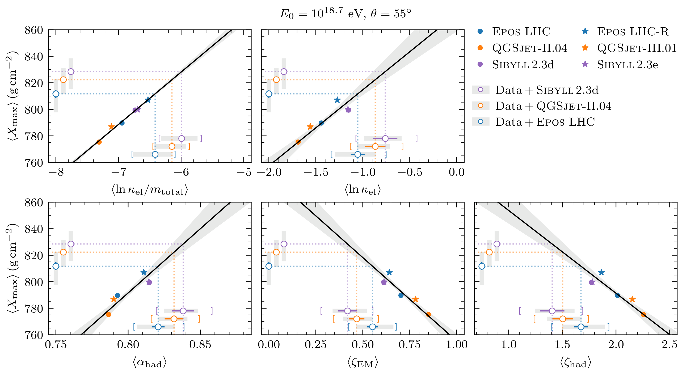
图注：Values of $\expval{\xmax}$ against the multiparticle production variables $\expval{\ln \elasticity / \multtotal}$ (top left), $\expval{\ln \elasticity}$ (top middle), $\expval{\alphahad}$ (bottom left), $\expval{\zetaem}$ (bottom middle) and $\expval{\zetahad}$ (bottom right) for different high-energy hadronic interaction models. The most recent model versions are represented by the starred markers, and their earlier versions by the circular markers. The fit curve is represented in black, and its uncertainty is represented by the grey band. Empty markers (``Data") are the shifted values of $\expval{\xmax}$ determined in~\(\cite{2024_Auger_Xmaxs1000fits}\) for \(\epos{},\) \(\qII{}\) and \(\sibd{}\) together with their projection onto the $x$-axis along the fit curves. Highly correlated systematic uncertainties are represented by shaded grey bars. The increase of these systematic uncertainties caused by the uncertainty of the fit curve is represented by the colored brackets.
对应解读：建议重点查看的图表第2、3、5项；关键图表逐图导读中的图2、图3；模型拟合段落关于普适关系与误差传播的核心内容。
入选理由：这是全文最核心的诊断图，直接给出平均簇射最大深度与第一次相互作用变量之间的普适映射，包括弹性度、强子能量相关变量、拟合曲线、灰色拟合不确定性、Auger数据投影以及系统误差条。它同时支撑“模型低估Xmax”“需要更高弹性度”“需要改变强子能量份额”和“拟合残差/模型散布限制结论”这些日报重点。
来源与置信度：\(arxiv_source\)；high；\(arxiv_source\) / article.tex:figure[1]
Fig02
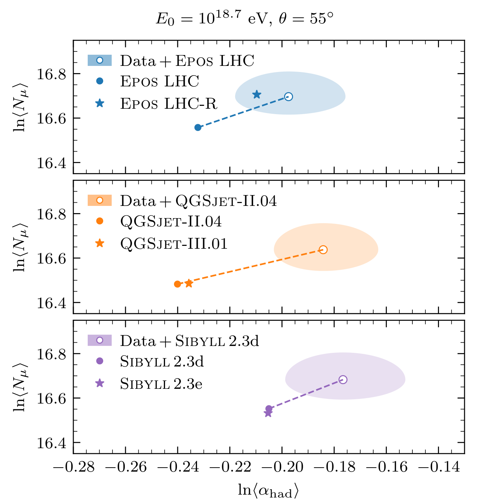
图注：$\ln \expval{\alphahad}$ vs $\ln \expval{N_\mu}$ for several hadronic interaction models. The solid markers correspond to the default values for each hadronic interaction model and the empty markers to the shifted values determined in Ref.~\(\cite{2024_Auger_Xmaxs1000fits}\) and this work. The slope of the dashed lines gives the amplification of the increase in $\ln \expval{\alphahad}$ required to account for the measured $\ln \expval{N_\mu}$.
对应解读：建议重点查看的图表第4项；关键图表逐图导读中的图4；详细解读中关于muon puzzle需要强子能量份额放大2.8到4.6倍的段落。
入选理由：该图直接连接强子能量变量与缪子数，虚线斜率给出解释观测缪子数所需的放大因子，是检验摘要中2.8到4.6倍结论的关键图。相比其他候选图，它最明确地回答muon puzzle增强因子是如何由模型和数据共同推出的。
来源与置信度：\(arxiv_source\)；high；\(arxiv_source\) / article.tex:figure[2]
Fig03
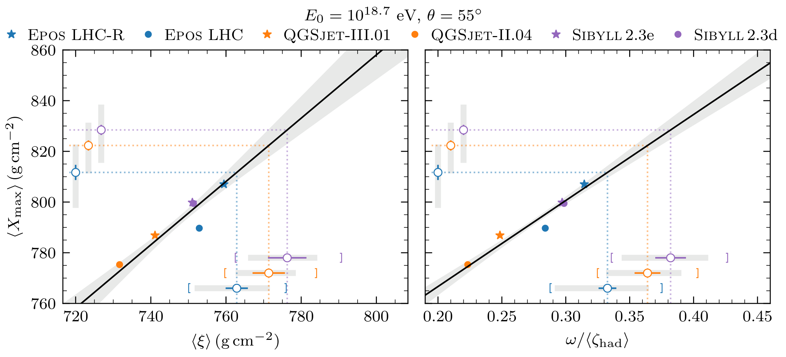
图注：Values of $\expval{\xmax}$ against $\expval{\xi}$ (left) and $\omega / \expval{\zetahad}$ (right) for different high-energy hadronic interaction models. The fit curve is represented in black, and its uncertainty, determined as explained in the main text, is represented by the grey band. Empty markers (``Data") are the shifted values of $\expval{\xmax}$ determined in~\(\cite{2024_Auger_Xmaxs1000fits}\) for \(\epos{},\) \(\qII{}\) and \(\sibd{}\) together with their projection onto the $x$-axis. Highly correlated systematic uncertainties are represented by shaded grey bars. The increase of these systematic uncertainties caused by the uncertainty of the fit curve is represented by the colored brackets.
对应解读：建议重点查看的图表第3、5项；关键图表逐图导读中的图3和图5；模型拟合段落关于低维响应函数、置信区间和模型散点的讨论。
入选理由：该图展示Xmax与xi及omega/zeta_had的关系，包含拟合曲线、灰色不确定带、数据投影、系统误差和由拟合不确定性增加的括号误差。它补充Fig01中未单独突出的组合变量，有助于判断普适关系是否稳定、数据映射是否落在模型覆盖区间内。
来源与置信度：\(arxiv_source\)；high；\(arxiv_source\) / article.tex:figure[3]
Fig09
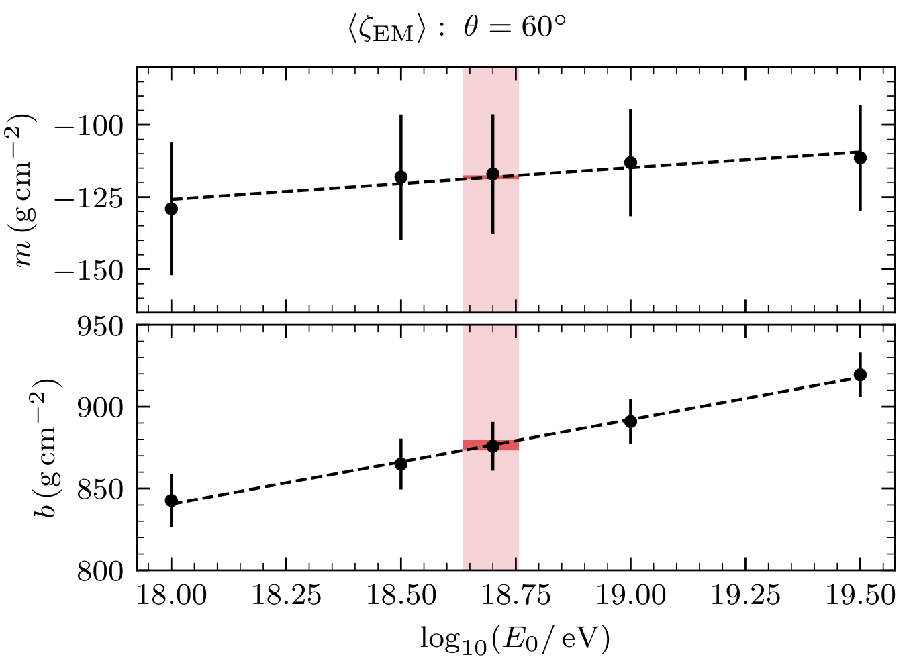
图注：Primary-energy dependence of the slope, $m$, and intercept, $b$, of the relation between $\expval{\zetaem}$ and $\expval{\xmax}$. The dashed lines show linear fits to $m$ and $b$ as functions of $\log_{10}(E_0/\mathrm{eV})$. The light red band indicates the FD energy-scale uncertainty, while the darker red region shows the corresponding propagated uncertainty in $m$ and $b$.
对应解读：建议重点查看的图表第7项；模型拟合段落关于能量标定误差传播和能量依赖的讨论。
入选理由：这是候选图中最直接对应能量依赖的图，给出zeta_em与Xmax关系的斜率和截距随初级能量变化，并标出FD能标不确定性及其传播影响。它适合用来检查普适关系是否只在单一能标成立，以及系统能标误差是否会改变映射结论。
来源与置信度：\(arxiv_source\)；high；\(arxiv_source\) / article.tex:figure[9]
Fig07
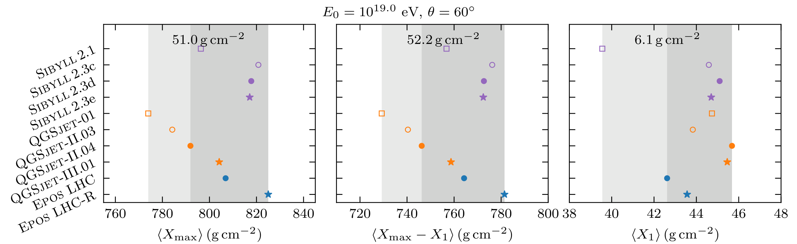
图注：Values of $\expval{\xmax}$, $\expval{\dxmax}$ and $\expval{X_1}$ for different high-energy LHC-tuned and pre-LHC hadronic interaction models. The light grey band shows the spread in the mean values across all high-energy hadronic interaction models, while the darker grey regions correspond to the spread across the LHC-tuned hadronic interaction models used in the main text: \(\eposr{},\) \(\epos{},\) \(\qIII{},\) \(\qII{},\) \(\sibd{}\) and \(\sibe{}.\)
对应解读：建议重点查看的图表第1、6项；关键图表逐图导读中关于模型Xmax预言、模型散布和组成/相互作用退化的讨论。
入选理由：虽然它不是Auger数据与模型线的传统能量图，但它集中比较了不同LHC调校和pre-LHC模型的Xmax、Delta Xmax和第一次相互作用深度X1，并用灰色带显示模型散布。它有助于解释模型族内不确定性、截面/X1退化以及为什么单靠Xmax难以唯一确定微观机制。
来源与置信度：\(arxiv_source\)；high；\(arxiv_source\) / article.tex:figure[7]
Fig11
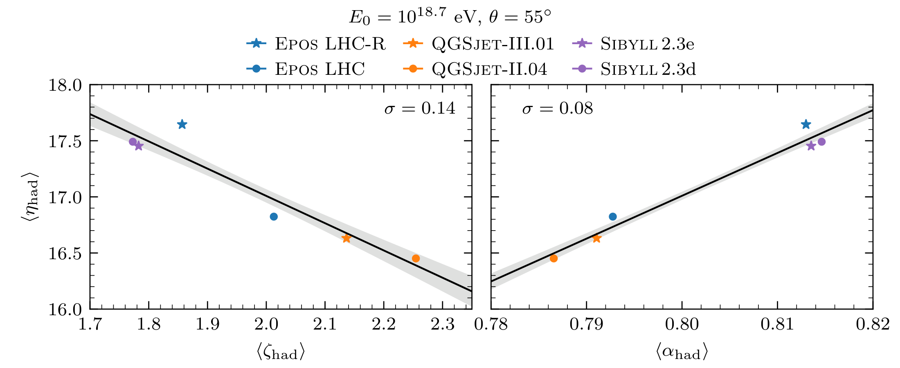
图注：Inter-model calibrations of $\expval{\etahad}$ and $\expval{\zetahad}$ (left) or $\expval{\alphahad}$ (right). The variable $\etahad$ is the energy-weighted sum of pseudorapidities of hadronically interacting particles, in a given proton-air interaction. The standard deviation of residuals of the models about the curves is denoted by $\sigma$.
对应解读：建议重点查看的图表第5项；模型拟合段落关于普适关系残差、模型间校准和理论散布限制的讨论。
入选理由：该图给出hadronic-sector变量之间的模型间校准关系，并明确标注模型相对曲线的残差标准差sigma。它不是主结论图，但对判断普适映射是否存在系统性离群、以及理论模型散布是否主导最终约束非常有价值。
来源与置信度：\(arxiv_source\)；high；\(arxiv_source\) / article.tex:figure[11]
强相关工作
同类和历史相关工作包括 Auger 对 \(X_{\max}\) 及其分布矩的组成分析、Auger 用 \(X_{\max}\) 分布尾部测量 \(p\)-air 截面的工作、Auger 地面信号中缪子含量的系列论文，以及 Telescope Array 对空气簇射组成和模型比较的结果。这篇文章与这些工作的关系是：它不只是报告 \(X_{\max}\) 或缪子异常，而是把异常投影到第一次 \(p\)-air 相互作用的末态能量分配上。建议检索关键词包括 “Pierre Auger \(X_{\max}\) proton-air cross section”, “Auger muon deficit”, “Muon Puzzle extensive air showers”, “hadronic energy fraction air shower”, “elasticity proton-air interaction”.
基础理论和模型方面，应联系 Heitler-Matthews 空气簇射模型、Gaisser-Hillas 纵向剖面拟合、EPOS-LHC、QGSJet-II-04、Sibyll \(2.3\) 系列强子模型，以及 LHC 前向实验 LHCf、TOTEM、CASTOR、FASER、SND@LHC 对前向粒子产生的约束。可能的相反观点或张力包括：是否可以用较重组成解释部分 \(X_{\max}\) 偏差；是否能通过能量标定或探测器响应解释缪子过量；以及修改强子模型以增加缪子时是否会破坏 \(X_{\max}\) 和能谱的一致性。
同一事件 / 同类源线索：
相似工作：
基础理论 / 方法工作：
- https://ui.adsabs.harvard.edu/abs/1958RSPSA.244..476H/abstract
- https://ui.adsabs.harvard.edu/abs/2005APh....22..387M/abstract
- https://ui.adsabs.harvard.edu/abs/1977ICRC...13..353G/abstract
相反观点 / 张力线索：
2. Observation of Wobbling and Precessing Jet Signatures in Gamma-Ray Emission from Blazar PKS 1424-41
- 来源：arXiv / astro-ph.HE
- 链接：https://arxiv.org/abs/2607.22175v1
- 作者：Ajay Sharma, Debanjan Bose
- 评分：novelty 7/10，importance 7/10，relevance 10/10，final 9.05/10
- 推荐理由：直接基于16年Fermi-LAT伽马射线数据研究blazar PKS 1424-41的QPO、喷流进动和可能SMBH双星，主题高度相关；但全局显著性约2.45σ，结论需谨慎。
中文题目：PKS 1424-41 伽马射线光变中的摆动与进动喷流信号
做了什么：这篇文章用约 16 年的 \(Fermi\)-LAT 伽马射线数据研究耀变体 PKS 1424-41 的长期光变，声称在同一条光变曲线中识别出三个叠加的准周期振荡：约 \(5.26\,\mathrm{yr}\)、约 \(0.96\,\mathrm{yr}\) 和约 \(1.3\,\mathrm{yr}\)。作者把最长周期解释为更可能来自双超大质量黑洞驱动的喷流进动，而两个年尺度周期则可能反映喷流轴的旋转、章动或摆动。文章的重要性不在于“又发现一个周期”，而在于它尝试把长期伽马射线调制、喷流几何 Doppler 放大和潜在双黑洞动力学放在同一个可检验框架中；不过，全局显著性只有约 \(2.45\sigma\)，因此结论应被看作一个值得后续监测和多波段检验的强候选，而不是已定案的双黑洞发现。
为什么重要：如果 PKS 1424-41 的 \(5.26\,\mathrm{yr}\) 准周期确实由双超大质量黑洞引起，它会为低频引力波源族、活动星系核喷流启动机制和吸积盘—黑洞自旋耦合提供一个具体目标。对耀变体而言，喷流指向角的微小变化会经 Doppler 因子被强烈放大，因此伽马射线光变可以成为探测喷流进动和几何调制的高灵敏工具。但这类研究也最容易受红噪声、有限时间基线、试验因子和光变非平稳性的影响；本文的价值正是在一个真实源上展示了信号、统计和物理解释之间的张力。
理论 / 观测 / 仪器方法价值：对理论而言，文章把 Lense-Thirring 进动、双超大质量黑洞轨道驱动进动和喷流章动三类机制放到同一问题中比较，有助于厘清不同时间尺度的物理来源。对观测而言，它说明长期 \(Fermi\)-LAT 监测数据已经足以测试多年尺度喷流几何变化，但也提醒读者必须区分局部显著性和全局显著性。对方法而言，叠加多周期模型、红噪声背景评估和物理化的 Doppler 调制模型比单纯在功率谱上找峰更有解释力。
为什么应该关注：你应该关注这篇文章，因为 PKS 1424-41 是一个明亮、强变的南天耀变体，长期伽马射线数据质量较好，适合作为喷流进动候选源来做方法学压力测试。即使最终双黑洞解释不成立，年尺度和多年尺度调制的存在与否也会影响我们如何理解耀变体光变中的几何效应、内禀耗散和统计假阳性。若后续无线电 VLBI、光学偏振、伽马射线和未来低频引力波线索能够相互印证，这类源会成为连接电磁和引力波天文学的关键样本。
展开详细解读：文章讲解、背景、理论、重点章节、图表与相关工作
文章详细讲解
科学问题：耀变体的伽马射线光变通常由喷流内部的粒子加速、磁重联、激波传播和视线方向上的相对论性 Doppler 放大共同决定。PKS 1424-41 是一个亮的平谱射电类星体型耀变体，长期 \(Fermi\)-LAT 监测显示强烈不规则变光。本文要回答的问题是：这些光变中是否存在稳定的多年或年尺度准周期成分；如果有，它们是统计噪声、喷流内部旋转和章动，还是可能与双超大质量黑洞轨道运动有关。
作者怎么做：作者分析约 16 年 \(Fermi\)-LAT 观测，构建伽马射线光变曲线，并在考虑红噪声背景的前提下搜索准周期振荡。文章报告三个叠加周期：\(\sim 5.26\,\mathrm{yr}\)、\(\sim 0.96\,\mathrm{yr}\) 和 \(\sim 1.3\,\mathrm{yr}\)。他们进一步用包含喷流进动和内禀喷流旋转或章动的复合模型拟合光变，把观测周期与 Doppler 因子的周期性变化联系起来，并比较 Lense-Thirring 进动和双超大质量黑洞系统两种物理解释。
关键结果：最长的 \(\sim 5.26\,\mathrm{yr}\) 信号局部显著性约 \(4.1\sigma\)，但考虑搜索多个频率和试验因子后的全局显著性降到约 \(2.45\sigma\)。这意味着该信号在功率谱中很醒目，但作为总体统计结论还不能算稳固发现。两个较短周期的局部显著性都超过 \(3\sigma\)，作者认为它们可以由喷流轴绕平均方向的小幅摆动或旋转产生，而不必要求两个独立的轨道周期。
局限和下一步：本文最需要谨慎的地方是时间基线只有约三个 \(5.26\,\mathrm{yr}\) 周期，长期准周期的相干性很难仅靠目前数据充分验证。耀变体光变具有强红噪声和非平稳爆发，单个强耀发或一组耀发间隔可能在周期图中制造假峰。下一步应延长 \(Fermi\)-LAT 时间基线，检查新的周期峰相位是否保持一致；同时用 VLBI 喷流位置角、射电核心通量、光学偏振角、宽线区或宿主星系动力学信息约束双黑洞假说。若声称与 LISA 源族相关，还需要把候选双黑洞的质量、分离、轨道频率、并合时间和引力波应变预测量化到可检验范围。
关键结果是怎么做出来的
本文证据链的起点是约 16 年 \(Fermi\)-LAT 数据。对于一个 \(5.26\,\mathrm{yr}\) 信号，这只覆盖约三个完整周期，因此样本的时间跨度是最关键限制。读者应特别看作者如何选择能段、时间分箱、源区模型、背景源、银河弥散背景和各时间 bin 的似然收敛条件；这些选择会影响低频功率，也会影响年尺度周期是否被采样窗口或太阳约束调制污染。
周期搜索的核心结果是三个准周期峰。\(\sim 5.26\,\mathrm{yr}\) 峰的局部显著性约 \(4.1\sigma\)，对应作者给出的置信度约 \(99.9958\%\)；但全局显著性约 \(2.45\sigma\)，置信度约 \(98.5714\%\)。这里的差别非常重要：局部显著性回答“在这个频率附近峰有多高”，全局显著性回答“在整个搜索频率范围内，红噪声过程随机产生至少同样高峰的概率有多大”。对准周期工作，后者通常才是发现声明的门槛。
两个年尺度峰 \(\sim 0.96\,\mathrm{yr}\) 和 \(\sim 1.3\,\mathrm{yr}\) 的局部显著性超过 \(3\sigma\)。读者应检查这些峰是否出现在不同分箱、不同能段、不同时间段的子样本中；尤其 \(\sim 0.96\,\mathrm{yr}\) 接近一年，必须排除曝光、太阳角、背景建模和观测窗口函数造成的假周期。若论文给出窗口函数、模拟光变或随机化检验，这些诊断比单张周期图更能支撑结果。
模型比较方面，作者不是只报告周期图峰，而是构造进动加章动的复合几何模型来拟合伽马射线通量。关键拟合量应包括平均喷流视角、进动锥角、周期、相位、Doppler 放大指数和内禀通量基线。支撑结论的图表通常应包括原始光变及模型叠加、残差序列、周期图及红噪声置信水平、多周期分解或相位折叠图。若残差仍有强相关结构，则说明模型可能只是在吸收红噪声而非捕捉真实动力学。
系统误差主要来自四类：伽马射线光变提取中的仪器与背景系统误差、红噪声功率谱斜率的不确定性、有限时间基线导致的低频泄漏，以及物理模型的非唯一性。双黑洞、盘进动、喷流 Kelvin-Helmholtz 不稳定性、螺旋磁场和间歇性能量注入都可能产生相似光变。稳健性检验应包括不同红噪声模型、不同分箱、删去最大耀发、滑动窗口周期搜索、模拟同采样光变和多波段同步性检查。
展开背景、理论、公式、模型、章节和图表导读
背景知识
PKS 1424-41 是南天一个亮的伽马射线耀变体，通常归入平谱射电类星体。耀变体的喷流接近视线方向，辐射被相对论性 beaming 强烈放大，因此观测到的通量对喷流方向和 Lorentz 因子极为敏感。一个很小的视角变化，若发生在 \(\theta \sim 1/\Gamma\) 附近，就可能造成显著伽马射线通量调制。
长期以来，活动星系核中的准周期振荡被用作寻找双超大质量黑洞的候选证据。著名例子包括 OJ 287 的光学长期周期和一些 blazar 的射电或伽马射线周期候选。然而这个领域的历史也充满假阳性：红噪声过程、非平稳耀发、有限时间采样和事后选择都能在周期图上产生看似显著的峰。因此现代工作必须报告全局显著性、红噪声背景和多种稳健性检验。
从理论背景看，喷流进动可能由多个机制产生。若吸积盘角动量与黑洞自旋不对齐，广义相对论的 Lense-Thirring 效应会使盘内环面发生进动，并可能通过磁场把方向变化传递给喷流。若中心存在双超大质量黑洞，轨道运动或伴星对吸积盘的潮汐扭矩也能驱动喷流轴长期进动。喷流自身还可能存在螺旋结构、章动、内部旋转或不稳定性，产生更短周期的几何调制。
为什么现在值得重新看？\(Fermi\)-LAT 已经积累了超过十年的全天扫描数据，使多年尺度伽马射线周期第一次可以用相对均匀的监测来检验。与此同时，脉冲星计时阵列已经给出纳赫兹引力波背景证据，LISA 等空间引力波探测器也把毫赫兹低频超大质量黑洞双星作为核心科学目标。电磁候选双黑洞若能提供轨道周期、质量和红移估计，将对低频引力波源族建模很有价值。
该领域常见误区有三点。第一，把局部 \(>3\sigma\) 峰直接称为发现，而忽略频率搜索范围和模型选择带来的试验因子。第二，把任何周期性光变都等同于双黑洞，而忽略喷流几何和吸积盘内禀不稳定性。第三，把准周期看成严格正弦信号；真实喷流系统很可能相位漂移、振幅变化，并与随机耀发叠加。
基础理论 / 方法脉络
基础物理图像是相对论性喷流的几何放大。喷流以 Lorentz 因子 \(\Gamma\) 运动，速度 \(\beta c\) 与视线夹角为 \(\theta\)。观测者看到的频率、时间尺度和通量都被 Doppler 因子 \(\delta\) 改写。当喷流方向缓慢进动或摆动时，\(\theta(t)\) 改变，\(\delta(t)\) 随之改变，哪怕喷流本征辐射功率近似稳定，观测伽马射线通量也会呈现周期性或准周期性。
本文使用的核心假设是：观测光变中一部分长周期调制来自喷流轴平均方向的进动，而年尺度成分来自叠加在进动上的喷流旋转、章动或 wobbling。物理上，长周期可以由双黑洞轨道导致喷流基底方向变化，也可能由不对齐吸积盘的 Lense-Thirring 进动导致。短周期不一定代表另一个双星轨道，可能只是同一喷流系统中的内部几何自由度。
观测方法上，\(Fermi\)-LAT 不是直接成像喷流结构，而是通过光子计数似然在多个时间 bin 中估计源通量。周期搜索通常作用于这些通量点或其变换，常用工具包括 Lomb-Scargle 类周期图、加权波列分析、结构函数或 Monte Carlo 红噪声模拟。对不等误差、缺测和非均匀采样，显著性评估比峰位置本身更关键。
主要退化关系来自几何与内禀变光不可分。一个通量峰可以由 \(\delta(t)\) 增大造成，也可以由喷流中粒子注入增强、磁场增强或外部光子场变化造成。平均视角 \(\theta_0\)、进动锥角、\(\Gamma\)、谱指数和本征通量振幅之间高度相关；只用伽马射线光变很难唯一确定双黑洞参数。因此需要射电 VLBI 位置角、超光速运动、光学偏振和多波段延迟来打破退化。
系统误差还包括观测窗口函数和背景模型。接近 \(1\,\mathrm{yr}\) 的周期特别敏感，因为卫星观测几何、太阳约束、背景源可见性和曝光变化都可能引入年尺度结构。一个可信的年周期需要在曝光校正、背景模拟和独立能段中仍然存在，且最好能在非伽马波段找到相位相关的几何指标。
公式与推导
第一步是相对论喷流的 Doppler 因子。设喷流速度为 \(\beta c\)，Lorentz 因子为 \(\Gamma=(1-\beta^2)^{-1/2}\)，喷流与视线夹角为 \(\theta(t)\)，则
这里 \(\delta(t)\) 控制观测频率提升、时间压缩和通量放大，是把喷流几何进动连接到伽马射线光变的关键量。
第二步是把 Doppler 因子映射到通量。若本征谱近似为幂律 \(F'_{\nu'}\propto {\nu'}^{-\alpha}\)，连续喷流的观测通量可写成
其中 \(p\) 取决于连续喷流还是离散 blob，\(\alpha\) 是能谱指数。该式说明小的 \(\delta(t)\ 惯性变化会被指数放大为大的光变。\)
第三步是进动几何。若喷流绕某平均轴以半开角 \(\psi\) 进动，平均轴与视线夹角为 \(i\)，进动角频率为 \(\Omega_p\)，则常用近似为
这里 \(i\)、\(\psi\) 和相位 \(\phi_p\) 决定通量峰何时出现，\(P_p=2\pi/\Omega_p\) 对应本文讨论的多年尺度周期。
第四步是加入章动或 wobbling。可把视角写成多频叠加近似：
其中 \(P_p\) 可对应 \(\sim 5.26\,\mathrm{yr}\)，\(P_n\) 可对应 \(\sim 0.96\,\mathrm{yr}\) 或 \(\sim 1.3\,\mathrm{yr}\)。该模型是现象学的，但能直接检验多周期几何调制是否能重建光变。
第五步是双黑洞轨道尺度的估算。若总质量为 \(M=M_1+M_2\)，轨道周期为 \(P_{\rm orb}\)，半长轴为 \(a\)，Kepler 关系给出
若把观测到的长周期与轨道或轨道驱动进动相联系，这个式子给出候选双黑洞分离的第一阶估计，但它依赖未知质量和红移校正。
第六步是 Lense-Thirring 进动的量级。对 Kerr 黑洞自旋角动量 \(J\)，半径 \(r\) 处倾斜环面的进动角频率可近似写为
其中 \(a_*\) 是无量纲自旋。该式显示 Lense-Thirring 进动对半径极敏感，若要得到多年周期，需要指定盘的有效进动半径和刚体进动条件。
第七步是周期图统计。对时间序列 \(y_i\)、误差 \(\sigma_i\)、频率 \(\omega\)，加权 Lomb-Scargle 功率可理解为正弦模型相对常数模型的拟合改进：
其中 \(\chi^2_0\) 是无周期模型的残差平方和，\(\chi^2(\omega)\) 是在该频率下拟合振幅和相位后的残差平方和。峰越高，说明该频率解释的方差越多。
第八步是局部与全局显著性的区别。若单频虚警概率为 \(p_{\rm loc}\)，独立试验频率数为 \(N_{\rm eff}\)，则近似有
这解释了为什么本文 \(\sim 5.26\,\mathrm{yr}\) 峰可以有较高局部显著性，却只有约 \(2.45\sigma\) 的全局显著性。
第九步是红噪声背景。耀变体功率谱常近似为
这里 \(\gamma\) 是红噪声斜率，\(N\) 是归一化，\(C\) 是白噪声或测量噪声项。周期峰的显著性必须相对于该背景计算，而不能相对于平坦白噪声计算，否则会系统性高估低频峰的重要性。
模型拟合 / 应用方法
本文这类工作的拟合对象首先是 \(Fermi\)-LAT 光变曲线，即每个时间 bin 的伽马射线通量及误差。光变提取本身通常来自 Poisson 光子计数似然，周期模型拟合则可能在通量空间中用 \(\chi^2\)、高斯似然或基于模拟的统计量完成。若时间 bin 中低计数较多，直接使用通量点的高斯误差会有偏，最好回到每个 bin 的似然轮廓或使用适合低计数的统计方法。
参数估计的核心包括周期 \(P\)、相位 \(\phi\)、振幅、平均通量、红噪声参数以及几何模型中的 \(\Gamma\)、\(\theta_0\)、进动锥角和章动振幅。由于 (F_
u\propto \(\delta^p\))，\(\Gamma\)、\(\theta_0\) 和振幅之间存在强退化：较大的 \(\Gamma\) 可用较小角度摆动产生同样通量变化，较小 \(\Gamma\) 则需要更大角度或更强内禀变光。没有独立 VLBI 约束时，这些参数不应被过度物理化。
显著性估计需要把周期搜索嵌入噪声模型。理想做法是先拟合红噪声功率谱或使用 CARMA、Gaussian process 等随机过程模型，生成与真实采样、误差和时间跨度一致的模拟光变，再统计周期峰高度分布。局部显著性、全局显著性、后验预测检验和贝叶斯证据回答的问题不同；本文报告全局显著性较低，说明物理解释应保持候选性质。
残差诊断尤其重要。若多周期模型拟合后残差仍显示强自相关、长期漂移或与大型耀发同步的结构，说明模型可能遗漏了内禀喷流耗散过程。若删去一两个最大耀发后周期峰消失，周期解释就较脆弱。若不同分箱、不同能段和不同时间窗口中周期、相位和振幅大体一致，才更像真实的几何调制。
模型可能失败的地方包括：把非平稳红噪声误认为准周期；把观测窗口的一年信号误认为喷流章动；用过多正弦成分拟合有限长度数据；以及把双黑洞轨道周期、盘进动周期和观测光变周期简单一一对应。实际应用中，这类模型最适合生成可检验预言，例如未来几年通量峰的相位、VLBI 喷流位置角的摆动周期、偏振角旋转是否同步，而不是单独作为双黑洞确认标准。
重点章节 / 结果段落怎么读
数据/样本部分应首先阅读。重点看 \(Fermi\)-LAT 数据时间跨度、能段、时间 bin 大小、源模型、背景处理和质量筛选。对于多年周期，时间跨度和分箱策略直接决定低频峰的可靠性；对于年周期，曝光和窗口函数处理尤其关键。
周期搜索方法部分是第二个重点。读者应检查作者使用了哪些周期搜索工具，是否考虑不均匀采样和测量误差，红噪声背景如何建模，局部和全局显著性如何定义。只看最高峰位置是不够的，必须看模拟或解析虚警概率是否与耀变体红噪声特性匹配。
主结果部分应围绕三个周期展开：\(\sim 5.26\,\mathrm{yr}\)、\(\sim 0.96\,\mathrm{yr}\)、\(\sim 1.3\,\mathrm{yr}\)。建议读者核对峰宽、置信区间、相位折叠后的散布、不同方法给出的周期是否一致，以及周期是否被少数耀发支配。
物理解释部分需要带着怀疑读。作者比较 Lense-Thirring 进动和双超大质量黑洞轨道驱动进动，并提出长周期更符合双黑洞解释，短周期更像喷流旋转或章动。这里要关注参数是否落在合理范围内，例如黑洞质量、轨道分离、进动半开角和 Doppler 因子是否与已知耀变体物理相容。
讨论和稳健性检验部分决定结论可信度。应寻找不同分箱、不同噪声模型、删点检验、窗口函数检验、多波段对比和未来可检验预言。若这些检验不足，本文仍然有价值，但应定位为候选信号报告和模型探索，而不是双黑洞确证。
建议重点查看的图表
-
长期 \(Fermi\)-LAT 光变图：看约 16 年数据中通量峰是否真的以 \(\sim 5.26\,\mathrm{yr}\) 间隔重复，还是被少数大耀发主导；同时检查误差条和时间 bin 是否均匀。
-
周期图或功率谱图：看 \(\sim 5.26\,\mathrm{yr}\)、\(\sim 0.96\,\mathrm{yr}\)、\(\sim 1.3\,\mathrm{yr}\) 峰相对红噪声置信线的位置；特别区分局部 \(3\sigma\) 或 \(4\sigma\) 线与全局显著性。
-
窗口函数或曝光诊断：尤其检查 \(\sim 0.96\,\mathrm{yr}\) 峰是否可能来自一年观测调制。若没有这类图，读者应把年周期结果视为需要额外验证。
-
相位折叠图：看按 \(5.26\,\mathrm{yr}\) 或年尺度周期折叠后，数据点是否形成清晰相位结构；散布过大或峰位漂移说明准周期相干性有限。
-
多周期模型拟合图：看模型线是否只是穿过几个大耀发，还是能解释整体趋势；同时检查残差是否近似无结构。
-
红噪声模拟或显著性分布图：看作者如何从模拟得到虚警概率，模拟是否保留真实采样、误差和功率谱斜率。
-
物理参数约束表：看双黑洞或 Lense-Thirring 解释需要的质量、分离、进动半径和角度是否合理，是否有不确定度或只给出点估计。
关键图表逐图导读
图 1：通常应是 PKS 1424-41 的 \(Fermi\)-LAT 长期伽马射线光变，横轴为观测时间，纵轴为积分光子通量或能量通量。读图时不要只看最大耀发，而要看峰间隔、低态持续时间和误差条。如果模型线叠加在图上，应检查它是否能预测峰的相位，还是事后追随数据。
图 2：应对应周期图、Lomb-Scargle 功率谱或类似时频分析，横轴为周期或频率，纵轴为功率或显著性。关键是 \(\sim 5.26\,\mathrm{yr}\) 峰与红噪声置信线的相对位置，以及 \(\sim 0.96\,\mathrm{yr}\)、\(\sim 1.3\,\mathrm{yr}\) 峰是否稳健。读图陷阱是把局部置信线当成全局发现线。
图 3：若为时频图或波列图，横轴通常是时间，纵轴是周期，颜色表示功率。应看 \(5.26\,\mathrm{yr}\) 信号是否贯穿大部分观测时段，还是只在某一段强耀发附近出现。边界附近的 cone of influence 或有限时间窗效应会夸大低频结构，需要谨慎。
图 4：若为相位折叠图，横轴为周期相位，纵轴为通量。清晰的准周期应在相位上呈现可重复峰谷；若点云散布很大，说明随机耀发贡献强。对只有三个长周期覆盖的情况，相位折叠容易给出过度乐观印象，因为独立周期数很少。
图 5：若为进动加章动模型拟合图，横轴为时间，纵轴为通量或归一化通量，模型线可能包含长周期和短周期分量。应看多周期模型是否显著优于单周期或红噪声模型，以及增加参数是否导致过拟合。残差图若存在，残差应无明显周期峰和长期趋势。
图 6：若为物理解释示意或参数约束图，可能展示双黑洞轨道、喷流进动锥、Lense-Thirring 进动半径或允许参数空间。读者应关注坐标轴是否为质量、分离、周期、进动角或 Doppler 因子，并检查参数区间是否与 VLBI 观测、典型耀变体 Lorentz 因子和引力波可探测性相容。
论文原图 / 可嵌入图片
Fig02
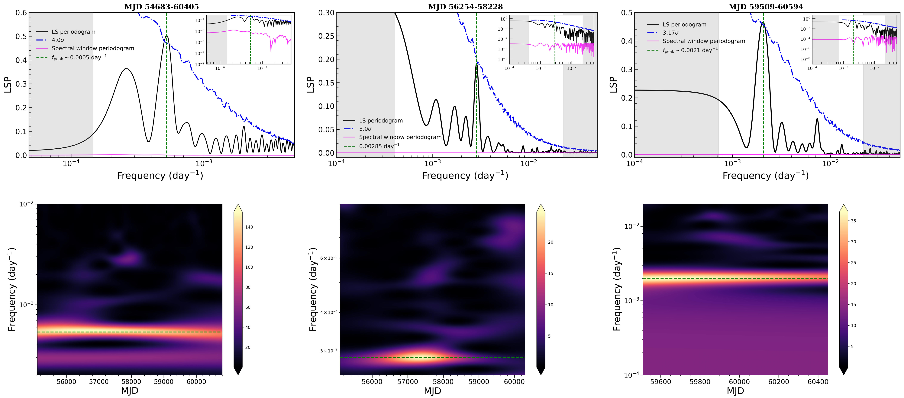
图注：The LSPs of the 7-day binned $\gamma$-ray light curve of PKS~1424$-$41 are shown, with the black curve representing the LSP and the blue curve indicating the significance threshold. The top left panel shows the LSP corresponds to the full $\sim$16~yr dataset, while the top middle panel shows the LSP for the interval MJD~56254--58228 and the top right panel represents the LSP for the interval MJD~59509-60594. The bottom panels present the WWZ analyses with the color bar denotes the WWZ power, and the horizontal green dashed lines mark the detected QPO frequencies. Our study reveals these prominent QPO features at $\sim 5.3 \times 10^{-4}\,\mathrm{day^{-1}}$ (left), $\sim 2.85 \times 10^{-3}\,\mathrm{day^{-1}}$ (middle), and $\sim 2.1 \times 10^{-3}\,\mathrm{day^{-1}}$ (right) corresponding to the periods of 5.26 yr, 0.96 yr, and 1.3 yr, respectively.
对应解读：“建议重点查看的图表”第2项周期图/功率谱图，以及“关键图表逐图导读”图2、图3关于LSP和WWZ时频诊断的讨论。
入选理由：这是检验论文核心声称的最关键图：同时给出完整16年数据和两个子区间的Lomb-Scargle周期图，并包含WWZ时频功率图，直接对应5.26 yr、0.96 yr、1.3 yr三个QPO峰及显著性阈值。它比其他图更能判断周期峰是否超过置信线、是否只在局部时间段出现，以及年尺度信号是否稳健。
来源与置信度：\(arxiv_source\)；high；\(arxiv_source\) / \(ARXIV_observation_of_Wobbling_and_Precessing_Jet_Signatures_in_Gamma_Ray_Emission_from_Blazar_PKS_1424_41.tex\):figure[2]
Fig01
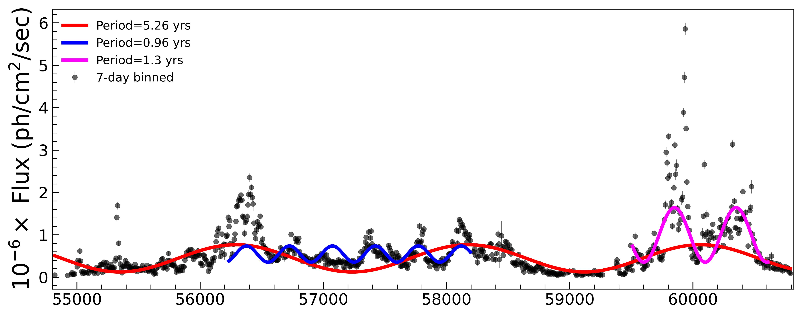
图注：The 7-day binned Fermi-LAT gamma-ray light curve of PKS 1424-41, together with sinusoidal fits to the identified quasi-periodic modulations over different time intervals. The long-term QPO with a period of 5.26 yr is derived from the Lomb-Scargle periodogram (LSP) analysis of the complete 16-year light curve. A shorter QPO with a period of 0.96 yr is detected in the interval MJD 56254-58228, while another year-scale QPO with a period of 1.3 yr is identified during the later interval MJD 59509-60594. In the light curve, the upper limits were not plotted.
对应解读：“建议重点查看的图表”第1项长期Fermi-LAT光变图，以及“关键图表逐图导读”图1。
入选理由：这张图展示7天分箱的约16年Fermi-LAT伽马射线光变，并叠加不同时间段的正弦拟合，是判断5.26年长周期是否由多个峰重复支持、还是由少数强耀发主导的基础图。它也直接呈现0.96年和1.3年短周期对应的时间区间。
来源与置信度：\(arxiv_source\)；high；\(arxiv_source\) / \(ARXIV_observation_of_Wobbling_and_Precessing_Jet_Signatures_in_Gamma_Ray_Emission_from_Blazar_PKS_1424_41.tex\):figure[1]
Fig04
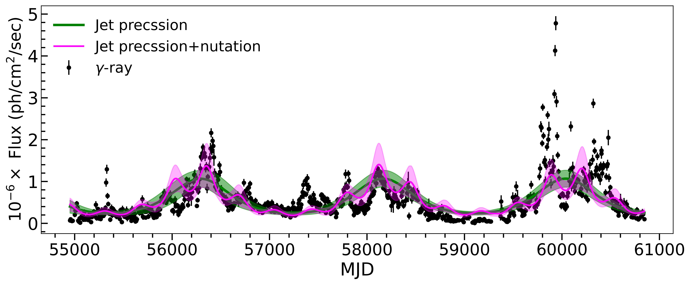
图注：The 7-day binned $\gamma$-ray light curve of PKS 1424–41, shown by black data points, together with the best-fit jet-precession model (green curve) and a combined jet precession and nutation model (magenta curve). The shaded region represents the 3$\sigma$ uncertainty on the model prediction.
对应解读：“建议重点查看的图表”第5项多周期模型拟合图，以及“关键图表逐图导读”图5和“模型拟合”段落关于残差/过拟合风险的讨论。
入选理由：该图把观测光变与最佳喷流进动模型、进动加章动复合模型直接比较，并给出3σ模型不确定区域，是评估几何调制模型是否真正解释整体趋势的核心证据。相比单纯示意图或参数后验，它更直接展示模型线与数据的吻合程度。
来源与置信度：\(arxiv_source\)；high；\(arxiv_source\) / \(ARXIV_observation_of_Wobbling_and_Precessing_Jet_Signatures_in_Gamma_Ray_Emission_from_Blazar_PKS_1424_41.tex\):figure[4]
Fig06

图注：The posterior distribution of a jet-precession and nutation model parameters. The 2D contours of all parameters show the 68, 95, and 99 per cent confidence levels estimated from MCMC analysis. The histograms show the projected 1D probability density distribution for all parameter with their best-fitting values and $1\sigma$ uncertainties. The normaliszation factor $F_0$ is estimated to be $5.8\times 10^{-6} \ \rm Ph \ \rm cm^{-2} \ \rm s^{-1}$ from the analysis .
对应解读：“模型拟合”段落中关于Γ、视角、进动锥角、章动振幅等参数退化和置信区间的讨论。
入选理由：这张图给出进动加章动模型参数的MCMC后验、二维置信轮廓和一维不确定度，正好对应日报强调的参数退化和置信区间问题。它比Fig05更贴近论文最终采用的复合模型，可帮助读者判断年尺度章动解释是否被数据充分约束。
来源与置信度：\(arxiv_source\)；high；\(arxiv_source\) / \(ARXIV_observation_of_Wobbling_and_Precessing_Jet_Signatures_in_Gamma_Ray_Emission_from_Blazar_PKS_1424_41.tex\):figure[6]
Fig08
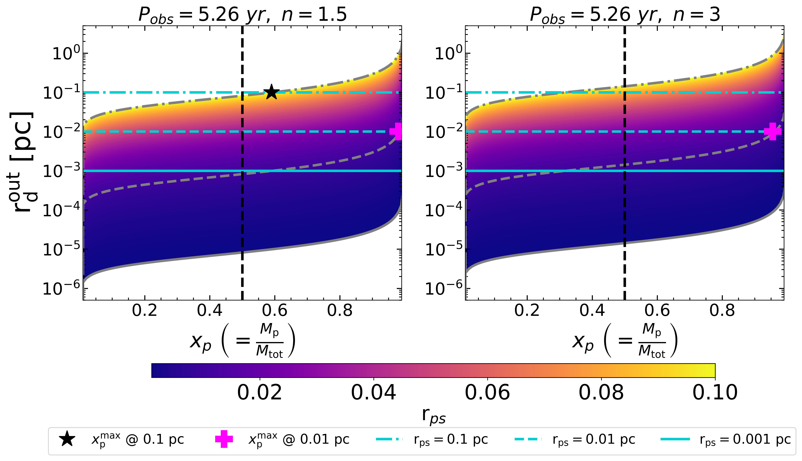
图注：Precessing outer disk radius as a function of the primary-to-total mass ratio, $X_{\rm p} = M_{\rm p}/M_{\rm tot}$, for different polytropic index ($n$) values of gas. In this analysis, the precession period is corrected for Doppler boosting and cosmological redshift effects. The vertical black dashed line indicates $x_{\rm p} = 0.5$. The horizontal yellow lines correspond to binary orbital separations of $r_{\rm ps} = 0.001$, 0.01, and 0.1 pc, representing the characteristic orbital radii of the binary system. The color bar denotes the binary separation, spanning the range $0.001~{\rm pc} < r_{\rm ps} < 0.1~{\rm pc}$. The precessing outer disk radius is computed assuming an orbital inclination of $i = 30^{\circ}$, as inferred from the jet-precession model fit. The black $"*"$ and magenta $"+"$ symbols indicate the maximum primary mass ratio, $x_{\rm p}^{\rm max}$, corresponding to binary separations of $r_{\rm ps}$=0.1 pc and 0.01 pc, respectively.
对应解读：“建议重点查看的图表”第7项物理参数约束，以及“关键图表逐图导读”图6关于双黑洞参数空间的讨论。
入选理由：该图展示双超大质量黑洞解释下，进动外盘半径与主星质量占比、双黑洞分离、气体多方指数之间的关系，直接服务于判断BSBH解释是否物理合理。它比纯示意图更能量化质量比和分离尺度等关键约束。
来源与置信度：\(arxiv_source\)；high；\(arxiv_source\) / \(ARXIV_observation_of_Wobbling_and_Precessing_Jet_Signatures_in_Gamma_Ray_Emission_from_Blazar_PKS_1424_41.tex\):figure[8]
Fig07
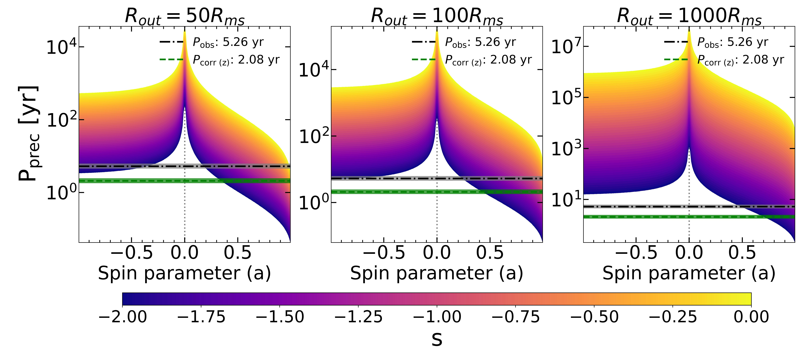
图注：Precession period of PKS 1424–41 as a function of the black hole spin parameter. In the left panel, the outer radius of the accretion disk is fixed at $R_{\rm out} = 50 R_{\rm ms}$. The color bar indicates different power-law indices of the disk surface density, spanning the range $-2 < s < 0 $. The horizontal black and green lines represent the observed and redshift-corrected precession periods, respectively, along with their associated uncertainties. The middle and right panels show the same quantities as the left panel, but for disk outer radii of $R_{\rm out}=100 R_{\rm ms}$ and $R_{\rm out}=1000 R_{\rm ms}$, respectively. This analysis indicates that the inferred black hole spin is prograde.
对应解读：“关键图表逐图导读”图6以及正文对Lense-Thirring进动与双黑洞解释比较的部分。
入选理由：该图给出Lense-Thirring框架下进动周期随黑洞自旋、盘外半径和表面密度指数的变化，并标出观测周期及红移修正周期，可用于检查LT解释所需自旋和盘尺度是否合理。它与Fig08互补，支撑日报中关于两种物理情景比较的解读。
来源与置信度：\(arxiv_source\)；high；\(arxiv_source\) / \(ARXIV_observation_of_Wobbling_and_Precessing_Jet_Signatures_in_Gamma_Ray_Emission_from_Blazar_PKS_1424_41.tex\):figure[7]
强相关工作
这篇工作处在两个文献脉络之间。第一条是 blazar 准周期搜索，包括 PG 1553+113、OJ 287、PKS 2155-304 等源的多波段或伽马射线周期候选。这些研究共同面对红噪声、有限基线和试验因子的难题。建议检索关键词包括 “blazar gamma-ray quasi-periodic oscillation red noise”, “Fermi LAT QPO blazar”, “PG 1553+113 periodicity”, “OJ 287 binary black hole”。
第二条是喷流进动和双超大质量黑洞动力学。Lense-Thirring 进动、Bardeen-Petterson 效应、双黑洞潮汐扭矩和轨道驱动喷流摆动都能产生周期性几何调制，但对应的周期—半径—质量标度不同。建议检索关键词包括 “Lense-Thirring precession jet”, “Bardeen Petterson disk jet precession”, “binary supermassive black hole jet precession”, “Doppler boosting precessing blazar jet”。
与相反观点或张力相关的文献主要强调：AGN 光变中的准周期候选常常在延长时间基线后显著性下降，或者可由红噪声与采样窗口解释。因此评价本文时，应同时参考关于周期搜索统计陷阱、红噪声模拟和 look-elsewhere effect 的方法论文。对 PKS 1424-41 这个同一源，还应检索其 \(Fermi\)-LAT 目录、射电 VLBI 监测、光学偏振和历史多波段耀发论文，以检查是否有同源几何证据。
同一事件 / 同类源线索：
相似工作：
- https://arxiv.org/abs/1509.02063
- https://arxiv.org/abs/1609.02044
- https://ui.adsabs.harvard.edu/abs/1988ApJ...325..628S/abstract
基础理论 / 方法工作：
- https://ui.adsabs.harvard.edu/abs/2009ApJ...697.1071A/abstract
- https://arxiv.org/abs/1703.09824
- https://ui.adsabs.harvard.edu/abs/1980Natur.287..307B/abstract
相反观点 / 张力线索：
3. On the astrophysical origin of cosmic rays: Constraining the Ultra-High-Energy Cosmic Ray Horizon through Nearby Galaxy Distributions
- 来源：arXiv / astro-ph.HE
- 链接：https://arxiv.org/abs/2607.21747v1
- 作者：F. Dávila-Kurbán, F. Duplancic, D. Garcia Lambas
- 评分：novelty 7/10，importance 8/10，relevance 9/10，final 9.05/10
- 推荐理由：利用GLADE+近邻星系分布和Auger UHECR通量图约束8 EeV以上宇宙线各向异性与传播视界，直接服务UHECR源起源问题；约50–60 Mpc结果与磁场偏折处理值得关注。
中文题目：用近邻星系分布约束超高能宇宙线视界：\(E\geq 8\,\mathrm{EeV}\) 各向异性的来源尺度
做了什么：这篇文章问的是：Pierre Auger 在 \(E\geq 8\,\mathrm{EeV}\) 超高能宇宙线中看到的大尺度各向异性，究竟主要来自多远以内的宇宙结构。作者从 GLADE+ 星系表构造不同距离截断的体积完备样本，把星系天空分布的偶极和角相关信号与 Auger 的宇宙线通量图比较，并加入银河磁场偏转权重。核心结论是：与宇宙线各向异性最一致的星系分布来自 \(cz<4000\,\mathrm{km\,s^{-1}}\)，约 \(50\text{--}60\,\mathrm{Mpc}\) 以内；更远星系对相关信号贡献迅速变弱。加入银河磁场偏转后，相关幅度可增强两倍以上，说明磁场不是小修正，而是决定到达方向图样的重要环节。
为什么重要：超高能宇宙线起源问题长期卡在三个量之间的退化：源的空间分布、传播能损视界、磁场偏转。本文把“源是否跟随近邻大尺度结构”这个假设转化为一个可观测问题：不同距离的星系分布，哪一层最能复现 Auger 的 \(E\geq 8\,\mathrm{EeV}\) 通量各向异性。如果 \(50\text{--}60\,\mathrm{Mpc}\) 的近邻宇宙已经主导信号，那会直接影响源候选筛选、组成推断和未来各向异性搜索策略。
理论 / 观测 / 仪器方法价值：理论上，它给传播视界和源分布模型提供了数据驱动约束，而不是只依赖能损长度的半解析估计。观测上，它展示了如何把星系巡天目录、Auger 通量图和银河磁场模型合在一个角相关框架中。方法上，它强调磁场偏转权重会显著改变相关幅度，因此简单把宇宙线到达方向直接同星系位置做相关可能低估真实关联。
为什么应该关注：如果你关心超高能宇宙线源、近邻大尺度结构、银河磁场或多信使高能天体物理，这篇文章值得看，因为它把一个常被泛泛讨论的说法——“最高能宇宙线来自近邻宇宙”——压缩成了一个可检验的距离尺度：约 \(50\text{--}60\,\mathrm{Mpc}\)。它也提醒读者，\(8\,\mathrm{EeV}\) 这个能段仍然受磁场和组成影响很大，不能简单按光子天文学的直线成像方式理解。
展开详细解读：文章讲解、背景、理论、重点章节、图表与相关工作
文章详细讲解
科学问题：超高能宇宙线的到达方向并非完全各向同性，Pierre Auger Observatory 在 \(E\geq 8\,\mathrm{EeV}\) 能段报告过显著的大尺度偶极各向异性。同时，最高能端的谱压低提示宇宙线受到光致介子产生、光致裂解、Bethe-Heitler 过程以及宇宙膨胀等能损限制，因此有效来源体积不会无限大。本文的核心问题不是直接认定某一类源，而是问：如果 \(E\geq 8\,\mathrm{EeV}\) 宇宙线源总体跟随近邻星系或物质分布，那么哪个距离截断的星系样本最能复现 Auger 的大尺度通量图。
作者怎么做：作者使用 GLADE+ 星系目录构造到 \(cz=10000\,\mathrm{km\,s^{-1}}\) 的体积限制样本，约对应 \(150\,\mathrm{Mpc}\) 量级的近邻宇宙。然后按不同 \(cz\) 或距离阈值切分星系样本，计算每个样本的天空偶极方向和振幅，并同 Auger 的 \(E\geq 8\,\mathrm{EeV}\) 通量图做比较。除了偶极方向夹角和偶极幅度外，他们还进行宇宙线通量图与星系密度图的角交叉相关分析。一个关键处理是引入基于银河磁场模型的偏转图，把可能的磁偏转效应作为权重纳入星系—宇宙线相关计算。
关键结果：最重要的结果是星系偶极与 UHECR 偶极的角距离在 \(cz<4000\,\mathrm{km\,s^{-1}}\) 时最小，对应距离约 \(50\text{--}60\,\mathrm{Mpc}\)；同一距离范围内星系偶极幅度也达到较强水平。角相关分析显示，相关信号主要由这部分近邻星系贡献，加入更远星系后信号被稀释或迅速减弱。加入银河磁场偏转权重后，相关幅度提升超过两倍，这说明观测到的各向异性不是单纯的源分布投影，也不是磁场可以忽略的直线传播图样，而是近邻物质分布与磁偏转共同塑造的结果。
局限和下一步：本文的结论依赖几个重要假设，包括 GLADE+ 对近邻星系分布的完备性、星系可作为 UHECR 源分布或物质分布的代理、Auger 通量图的暴露修正、银河磁场模型的可信度，以及 \(E\geq 8\,\mathrm{EeV}\) 宇宙线的组成。若组成偏重较重核，实际偏转角可能更大，视界与到达方向关联会更复杂；若源类高度稀疏或有强烈亮度函数演化，普通星系数密度也未必是好示踪量。下一步应把成分依赖传播、河外磁场、源光度函数、选择函数和多能段各向异性联合起来，检验这个 \(50\text{--}60\,\mathrm{Mpc}\) 视界是否在更高能阈值下收缩，是否在不同银河磁场模型下稳定。
关键结果是怎么做出来的
本文证据链的第一步是构造星系样本。作者选用 GLADE+ 目录，并限制到 \(cz\lesssim 10000\,\mathrm{km\,s^{-1}}\)，即近似 \(150\,\mathrm{Mpc}\) 的本地宇宙范围。然后按多个 \(cz\) 截断形成体积限制或近似体积限制的子样本，例如重点结果处的 \(cz<4000\,\mathrm{km\,s^{-1}}\)。这种做法的优点是可以直接追踪“随着纳入更远星系，星系天空分布与宇宙线图样的一致性如何变化”，而不是只给一个全样本相关系数。
第二步是把每个距离截断的星系分布压缩为大尺度各向异性诊断量。作者计算星系天空分布的偶极方向和偶极振幅，并与 Pierre Auger 的 \(E\geq 8\,\mathrm{EeV}\) UHECR 通量图的偶极作角距离比较。最关键的诊断不是某一个星系团或单源，而是随最大 \(cz\) 变化的偶极夹角曲线和偶极幅度曲线：如果近邻结构确实主导 UHECR 各向异性，应看到某个近距离范围内夹角最小、振幅较强，之后加入远处近似各向同性背景会稀释信号。
第三步是角交叉相关。作者把 Auger 通量图与星系密度图在角尺度上比较，研究相关幅度随距离截断如何变化。结果显示，相关信号主要来自 \(cz<4000\,\mathrm{km\,s^{-1}}\) 的近邻星系；当纳入更远星系时，相关信号快速减弱。这一点比单纯偶极比较更有说服力，因为偶极只保留最低阶角结构，而角相关还检验了不同角尺度上的图样一致性。
第四步是银河磁场偏转权重。作者使用银河磁场模型生成偏转图，并把它用于星系—宇宙线相关权重。加入这一处理后，相关幅度提高超过两倍。这个结果支撑两个判断：其一，宇宙线到达方向相对于源方向有系统性偏转，不能用零偏转近似；其二，合理地把偏转方向和偏转强度纳入相关统计，可以从原本被磁场模糊的信号中恢复一部分源分布印记。
显著性和稳健性方面，读者应重点看论文如何用各向同性模拟、随机旋转图或暴露保持的 mock sky 来评估偶极对齐和交叉相关的置信度。摘要没有给出最终显著性数值，因此阅读正文时要特别检查：试验因子是否包括多个距离截断、多个角尺度和是否加入磁场权重；星系目录的银河面遮蔽如何处理；Auger 暴露函数是否完整进入 mock；不同 \(cz\) bin 的样本量是否足以避免 shot noise 主导偶极。最支撑结论的图应是偶极夹角随 \(cz\) 的曲线、偶极振幅随 \(cz\) 的曲线、交叉相关随 \(cz\) 的曲线，以及加入和不加入磁场偏转权重的对比图。
展开背景、理论、公式、模型、章节和图表导读
背景知识
超高能宇宙线通常指能量达到 \(10^{18}\,\mathrm{eV}\) 以上的带电粒子，其中 \(E\gtrsim 8\,\mathrm{EeV}\) 已进入 Auger 各向异性研究的重要能区。由于这些粒子带电，它们在银河磁场和河外磁场中会发生偏转；由于能量极高，它们又会与宇宙微波背景和红外背景相互作用而损失能量。因此，UHECR 天文学既不像伽马射线那样基本沿直线指向源，也不像低能宇宙线那样完全被扩散抹平。
历史问题可以概括为：谱端压低究竟主要是传播能损造成的 GZK 类视界，还是源的最大加速能量截止；各向异性究竟来自近邻大尺度结构，还是来自少数强源；到达方向和源方向之间偏转有多大。Auger 在 \(E\geq 8\,\mathrm{EeV}\) 看到的偶极各向异性被视为河外起源的重要证据，因为其方向和银河盘并不简单一致，而更接近本地大尺度结构的某些方向。但这种比较长期受到源目录选择、能量阈值、组成和磁场模型影响。
近邻星系目录在这个问题上很有用，因为如果 UHECR 源数量足够多且总体随恒星质量、星形成或物质密度分布，那么星系分布就是源分布的低阶代理。GLADE+ 这类目录整合了多波段星系和距离信息，常被引力波电磁对应体搜索、近邻宇宙结构研究和高能粒子源关联研究使用。本文选择按 \(cz\) 截断而不是直接只研究某几个候选源类，实际上是在测试一个更宽泛的假设：UHECR 各向异性是否由本地物质分布驱动。
为什么现在值得重新看？一方面，Auger 的曝光和通量图已经足够支持大尺度统计；另一方面，星系目录的近邻完备性和距离信息比早期更好；再加上银河磁场模型和数值偏转图可用于构造更现实的相关统计。更重要的是，未来如 AugerPrime 的组成信息会使“能量—组成—视界—偏转”的联合约束更有力，因此现在先明确 \(E\geq 8\,\mathrm{EeV}\) 的有效空间尺度很有价值。
常见误区有三点。第一，把 UHECR 视界简单等同于质子的 GZK 长度是不够的，因为 \(8\,\mathrm{EeV}\) 处不同核素能损和磁偏转差别很大。第二，把星系相关当作源识别也不对：本文约束的是群体分布和有效视界，不是确认某个星系为源。第三，看到偶极对齐不能立刻断言直线传播；本文恰恰表明加入银河磁场偏转后相关更强，说明偏转是信号建模的一部分。
基础理论 / 方法脉络
物理图像从带电粒子的传播开始。UHECR 到达地球前经历三类主要过程：源处加速给出注入谱和最大刚度；星际与星系际传播中发生磁偏转；与背景光子场相互作用造成能量损失。到达方向图样因此是源分布、能损视界、磁场透镜效应和探测器暴露函数共同作用的结果。本文主要关注其中的空间分布和银河磁场偏转，而不是完整求解源加速物理。
在大尺度各向异性分析中，最常用的一阶描述是偶极。若天空通量可以写成平均项加上小的方向依赖项，则偶极向量给出通量最大增强的方向，偶极幅度给出相对各向异性强度。Auger 的 \(E\geq 8\,\mathrm{EeV}\) 通量图可看成暴露修正后的 \(I_{\rm CR}(\hat{\mathbf n})\)，而星系分布可构造为 \(I_{\rm gal}(\hat{\mathbf n};D_{\max})\)，其中 \(D_{\max}\) 或等价的 \(cz_{\max}\) 是本文要扫描的关键参数。
本文的一个具体假设是，星系分布可作为 UHECR 源分布的代理。这个假设并不要求每个星系都等亮发射 UHECR，但要求源的总体空间分布与近邻星系密度有统计相关。若真实源只存在于稀有活动星系核、星暴星系、射电星系或暂现源中，则普通星系目录会引入稀释；但如果这些源类仍偏向物质过密区，低阶相关仍可能保留。
观测方法上，距离截断扫描非常关键。近邻宇宙高度非均匀，存在 Virgo、Centaurus、Great Attractor、Local Void 等结构，因此较小 \(D_{\max}\) 下星系偶极可能很强；随着纳入越来越远的体积，若宇宙趋向统计均匀，偶极会被平均掉。若 UHECR 有有限传播视界，相关信号应在某个距离范围内达到最大，而不是无限随样本深度增加。
主要退化来自组成和磁场。偏转角大致随电荷数 \(Z\) 增大、随能量 \(E\) 降低而增大，因此同一 \(E\geq 8\,\mathrm{EeV}\) 样本若含有较多中重核，其源方向信息会比质子样本更模糊。银河磁场模型的不确定性会影响偏转方向和角尺度；河外磁场也可进一步扩散信号。目录不完备、银河面遮蔽、星系权重选择和 Auger 南天暴露也会造成系统误差。
公式与推导
第一步，把观测到的宇宙线通量写成天空方向 \(\hat{\mathbf n}\) 上的标量场。若各向异性较弱，可用偶极近似：
其中 \(I_0\) 是平均通量，\(\mathbf d_{\rm CR}\) 是宇宙线偶极向量，\(|\mathbf d_{\rm CR}|\) 是偶极幅度。这个式子是本文进行大尺度方向比较的基本语言。
第二步，从离散星系目录构造星系天空密度场。对距离小于 \(D_{\max}\) 的星系，可写成
其中 \(w_i\) 是星系权重，\(S_i\) 是选择函数或完备性修正，\(K_\theta\) 是角平滑核，\(\Theta\) 是阶跃函数，\(D_i\) 是星系距离。本文实际使用 \(cz\) 截断时，可在近邻哈勃流近似下用
其中 \(H_0\) 是哈勃常数；这个近似在很近距离会受本动速度影响。
第三步，星系分布的偶极可由一阶矩估计：
它衡量给定距离截断内星系数密度在天空上的一阶不均匀性。本文的关键诊断之一就是 \(\mathbf d_{\rm gal}(D_{\max})\) 与 \(\mathbf d_{\rm CR}\) 的方向是否随 \(D_{\max}\) 出现最优对齐。
第四步，偶极方向夹角可写为
当 \(\Delta(D_{\max})\) 最小时，说明该距离内的星系偶极方向最接近 UHECR 偶极方向。本文报告最小值出现在 \(cz<4000\,\mathrm{km\,s^{-1}}\) 附近。
第五步，角交叉相关可定义为去均值后的乘积平均：
其中 \(\delta_{\rm gal}=I_{\rm gal}/\langle I_{\rm gal}\\)
angle-1)，\(\delta_{\rm CR}=I_{\rm CR}/\(\langle\) I_{\rm CR}\
angle-1)，\(\psi\) 是角分离。这个量比偶极多保留了角尺度信息，可检查相关是否只来自最低阶模式。
第六步，银河磁场偏转可用刚度 \(R=E/(Ze)\) 的近似尺度理解：
其中 \(Z\) 是电荷数，\(e\) 是元电荷，\(\mathbf B_\perp\) 是垂直于传播方向的磁场分量，\(l\) 是路径长度。本文使用模型偏转图而不是只用这个标度式，但该式说明为什么组成和能量会强烈影响相关分析。
第七步，把磁场偏转纳入星系—宇宙线匹配时，可把源方向 \(\hat{\mathbf s}\) 映射到到达方向 \(\hat{\mathbf n}\)，并写成响应核：
其中 \(\mathcal M_{\rm GMF}\) 表示银河磁场导致的方向映射，\(\sigma_{\rm turb}\) 表示湍动磁场或未建模偏转造成的角扩散。若忽略这个核，就等价于假设源方向和到达方向近似相同。
第八步，若用似然比较各向同性模型和星系追踪模型，可写成
其中 \(N_{\rm CR}\) 是宇宙线事件数，\(f\) 是各向异性模板混合比例，\(\Phi_{\rm iso}\) 包含探测器暴露后的各向同性通量，\(\Phi_{\rm gal}\) 是经星系分布和磁场响应得到的模板。即使本文主要强调偶极和角相关，这类似然表达也说明如何量化不同 \(D_{\max}\) 的优劣。
第九步，模型优劣可用似然比或模拟校准的统计量表示：
其中 \(f=0\) 代表暴露修正后的各向同性模型。由于扫描了多个 \(D_{\max}\)、角尺度和磁场处理，\(TS\) 的显著性通常需要用 mock sky 而非简单 \(\chi^2\) 渐近近似校准。
模型拟合 / 应用方法
本文可理解为一种模板匹配和相关统计拟合。被拟合或扫描的核心量是距离截断 \(D_{\max}\) 或 \(cz_{\max}\)、星系分布的角平滑尺度、是否加入银河磁场偏转权重，以及星系模板相对于各向同性背景的相关幅度。观测量包括 Auger 的 \(E\geq 8\,\mathrm{EeV}\) 通量图、星系密度图、偶极方向、偶极振幅和角交叉相关函数。
若把分析写成显式似然，最自然的是使用泊松点过程或像素化泊松似然：每个像素的期望事件数由探测器暴露函数乘以模板通量给出，模板则是各向同性成分与星系追踪成分的混合。若使用通量图而非逐事件方向，也可用协方差加权的残差或相关系数统计。无论哪一种，关键是保持 Auger 的非均匀天区暴露，否则南北天区覆盖差异会被误认为物理偶极。
参数退化很明显。 \(D_{\max}\) 与角平滑尺度退化：较远样本加入后可能降低偶极，但更大的平滑角也会抹平近邻结构，使不同距离模板变得相似。 \(D_{\max}\) 与磁场偏转也退化：较大的偏转核会让近邻结构的相关扩展到更宽角尺度，看起来像更远、更平滑的源分布。组成参数 \(Z\) 与偏转角近似成正比，因此如果不约束组成，银河磁场模型的最优偏转强度并不唯一。
系统误差主要来自四类。第一是 GLADE+ 的选择函数、距离误差和银河面不完备，这会改变星系偶极。第二是本动速度对小 \(cz\) 距离估计的影响，特别是在 \(cz\lesssim 4000\,\mathrm{km\,s^{-1}}\) 时不可完全忽略。第三是 Auger 能量标定和能量阈值选择，因为 \(E\geq 8\,\mathrm{EeV}\) 样本的事件数和组成会随阈值变化。第四是银河磁场模型不确定性，尤其是盘场、晕场和湍动场成分。
残差诊断应关注模板无法解释的方向结构。如果加入 \(cz<4000\,\mathrm{km\,s^{-1}}\) 星系和磁场偏转后仍在某些天区有系统性正残差，可能暗示源类不是普通星系分布、存在少数强源、河外磁场造成额外偏转，或目录在该天区不完备。实际应用上，这类方法可用于给未来源候选排序：优先检查 \(50\text{--}60\,\mathrm{Mpc}\) 内、位于磁场反偏转后热点附近、且具有合理加速能力的星暴星系、射电星系、AGN 或暂现源宿主。
重点章节 / 结果段落怎么读
数据与样本部分应先看 GLADE+ 的选择、距离截断和体积限制定义。读者要确认作者如何把 \(cz\) 转成距离、如何处理 \(cz<10000\,\mathrm{km\,s^{-1}}\) 的最大范围、如何处理银河面遮蔽和目录不完备，以及每个 \(cz_{\max}\) 子样本包含多少星系。
Auger 通量图部分应检查 \(E\geq 8\,\mathrm{EeV}\) 的数据产品定义。重点不是重新理解 Auger 仪器，而是确认通量图是否已做暴露修正、角分辨率和平滑尺度如何选择、偶极方向和振幅采用的是 Auger 已发表值还是作者重新从图中估计。
偶极比较方法部分是全文主轴之一。读者应看作者如何定义星系偶极、是否按星系等权或加权、是否考虑选择函数，以及怎样计算星系偶极与 UHECR 偶极之间的角距离。随 \(cz_{\max}\) 的趋势比单个最优点更重要。
角交叉相关部分是第二个主轴。读者应检查相关函数的归一化、角尺度范围、各向同性或随机目录基线、误差条来源，以及是否对多重距离扫描做试验因子校正。这里决定了“近邻星系主导相关”是否只是偶极层面的巧合。
银河磁场偏转部分需要特别细读。关键是作者采用哪种银河磁场模型、偏转图如何生成、默认刚度或组成假设是什么、权重如何进入相关计算。摘要称相关幅度增强超过两倍，读者应在正文中确认这是对哪个统计量、哪个角尺度和哪个距离截断而言。
讨论与稳健性部分应看作者如何解释 \(50\text{--}60\,\mathrm{Mpc}\) 视界，以及如何区分传播能损视界、磁偏转造成的有效视界和星系目录信号稀释。若有附录，应重点检查不同权重、不同遮蔽、不同 \(H_0\) 或不同磁场参数下的重复分析。
建议重点查看的图表
-
星系样本的距离分布或 \(cz\) 直方图：看各距离截断的样本量是否足够，以及 \(cz<4000\,\mathrm{km\,s^{-1}}\) 是否受本动速度和局部结构主导。
-
不同 \(cz_{\max}\) 的星系天空图：看近邻结构、银河面空洞、Auger 可见天区和星系过密区是否直观对应。
-
星系偶极与 UHECR 偶极夹角随 \(cz_{\max}\) 的曲线：这是支撑 \(50\text{--}60\,\mathrm{Mpc}\) 结论的核心诊断，应看最小值是否尖锐、误差条多大、是否有多个局部最小。
-
星系偶极幅度随 \(cz_{\max}\) 的曲线：看 \(cz<4000\,\mathrm{km\,s^{-1}}\) 附近是否同时具有较大振幅，还是仅方向偶然对齐。
-
星系—UHECR 角交叉相关函数：看相关在哪些角尺度最强，随 \(cz_{\max}\) 如何衰减，误差是否由 mock sky 或 jackknife 得到。
-
加入与不加入银河磁场偏转权重的对比图：看“增强超过两倍”发生在哪个统计量上，并确认不是归一化或平滑尺度选择造成。
-
各向同性模拟或随机目录的显著性图：看观测统计量在 null distribution 中的位置，尤其注意距离扫描后的全局显著性。
-
稳健性表格：看不同星系权重、遮蔽、平滑角、磁场模型或能量阈值下，最优 \(cz_{\max}\) 是否仍接近 \(4000\,\mathrm{km\,s^{-1}}\)。
关键图表逐图导读
图 1：如果论文给出样本天空图，横轴通常是赤经或银河经度，纵轴是赤纬或银河纬度，颜色或点密度表示 GLADE+ 星系在给定 \(cz_{\max}\) 内的分布。读图时要看 Virgo、Centaurus、Great Attractor 等近邻结构是否形成强非均匀性，也要看银河面附近是否有缺口。陷阱是不要把星系密集区直接当作源定位；它只是源分布模板。
图 2：偶极方向比较图通常会在球面投影上同时画出 UHECR 偶极和不同 \(cz_{\max}\) 星系偶极。应检查星系偶极方向如何随距离截断移动，是否在 \(cz<4000\,\mathrm{km\,s^{-1}}\) 附近最接近 UHECR 偶极。陷阱是球面投影会扭曲角距离，最好结合论文给出的数值夹角曲线阅读。
图 3：偶极夹角和偶极幅度随 \(cz_{\max}\) 的曲线是本文关键图。横轴应是 \(cz_{\max}\) 或对应距离，纵轴分别为夹角 \(\Delta\) 和幅度 \(|\mathbf d_{\rm gal}|\)。真正有力的证据是夹角最小和幅度增强在相近距离出现。如果只有夹角最小但幅度很小，则可能是噪声对齐；如果幅度很大但方向不对，则不能解释 UHECR 偶极。
图 4：角交叉相关图应显示 \(C_{\rm gCR}(\psi)\) 或积分相关统计量随角尺度 \(\psi\) 和 \(cz_{\max}\) 的变化。应看近邻样本是否在合理角尺度上超过各向同性均值，误差条是否包含 cosmic variance、shot noise 和暴露效应。陷阱是多角尺度扫描会产生 look-elsewhere effect，单个角尺度的高点不等于全局显著。
图 5：银河磁场偏转图或加权前后对比图应显示无偏转模板与 GMF 修正模板的差异。读者要看偏转是否把近邻星系过密区移动到更接近 Auger 通量增强的方向，以及相关幅度提升是否稳定。陷阱是磁场模型参数和组成假设可能使这种提升不唯一。
图 6：若有显著性或稳健性图，通常横轴是 \(cz_{\max}\)、平滑角或模型选项，纵轴是相关统计量、似然比或 \(p\)-value。应重点检查 \(cz<4000\,\mathrm{km\,s^{-1}}\) 的最优点在替换权重、遮蔽、随机目录和 mock sky 后是否仍存在。若最优点随设置大幅漂移，则视界结论应降级为提示性结果。
论文原图 / 可嵌入图片
Fig03
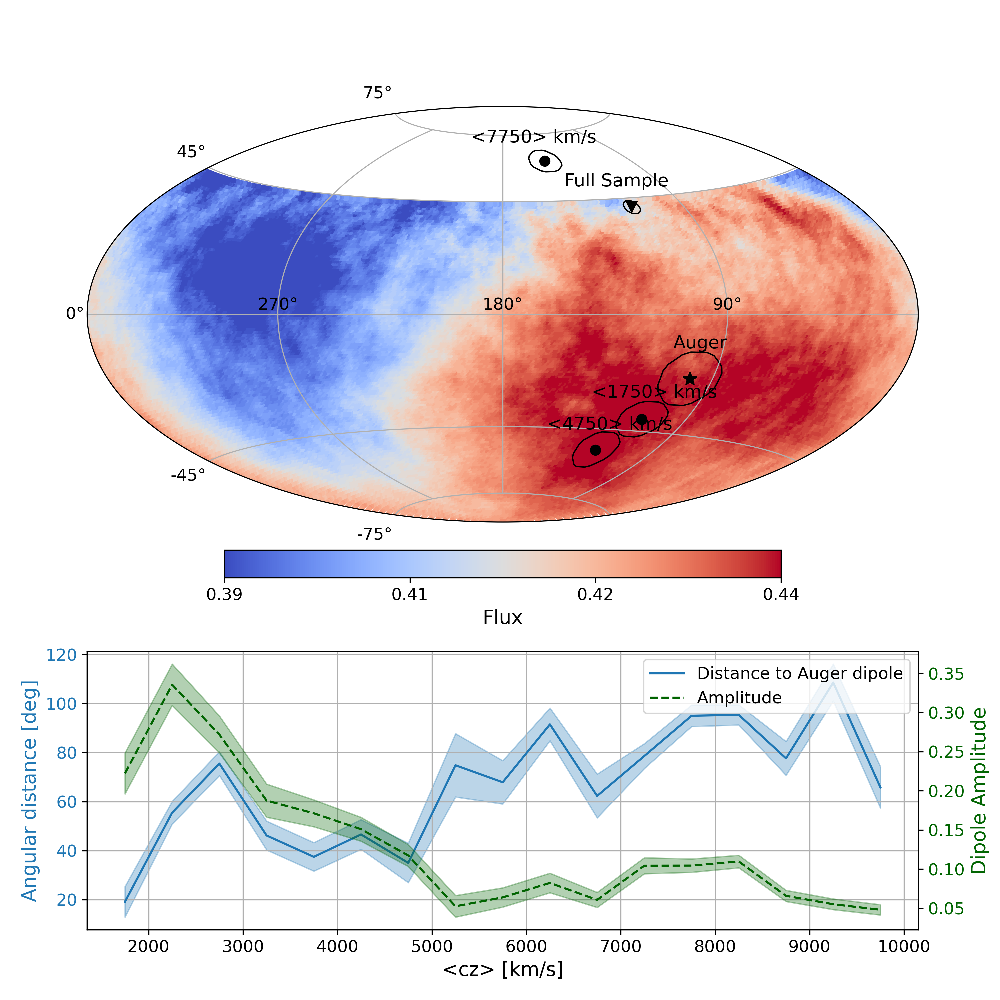
图注：The top panel shows the Auger flux map with the dipoles of three representative GLADE+VLS subsamples plotted with black full circles and a circumference showing a $1\sigma$ bootstrap error estimation. The GLADE+VLS (full sample) dipole is represented with a black triangle. In the bottom panel, the galaxies dipole amplitude and distance to Auger dipole, vs. $cz$, where the shaded regions correspond to the $1\sigma$ bootstrap error estimation. Only the dipoles of nearby galaxies show high amplitude and are close to the Auger dipole.
对应解读：对应“建议重点查看的图表”第3、4项，以及“关键图表逐图导读”图2、图3；也直接支撑模型拟合段落中对 \(cz_max\)、偶极方向和偶极振幅的扫描。
入选理由：这是全文最核心的诊断图，同时给出星系偶极在天球上的位置、与 Auger 偶极的夹角随 cz 的变化，以及星系偶极幅度随 cz 的变化。它直接检验日报强调的关键结论：cz<4000 km/s 附近是否既方向最接近 UHECR 偶极、又具有较高偶极幅度，因此比单纯天空图或样本定义图更能支撑 50--60 Mpc 视界判断。
来源与置信度：\(arxiv_source\)；high；\(arxiv_source\) / main.tex:figure[3]
Fig05
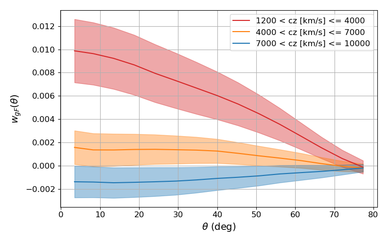
图注：Cross-correlation functions between the Auger flux map and the three GLADE+VLS galaxy samples. Jackknife uncertainty estimations are represented as shaded bands.
对应解读：对应“建议重点查看的图表”第5项和“关键图表逐图导读”图4；也对应模型拟合段落中的角交叉相关函数和 jackknife 误差诊断。
入选理由：该图直接展示 Auger 通量图与三个 GLADE+VLS 距离样本之间的交叉相关函数，并带有 jackknife 不确定性阴影。它可以检验相关信号是否确实由近邻样本主导、在何种角尺度最强，以及加入更远星系后相关是否被稀释，是偶极分析之外最重要的独立证据。
来源与置信度：\(arxiv_source\)；high；\(arxiv_source\) / main.tex:figure[5]
Fig07
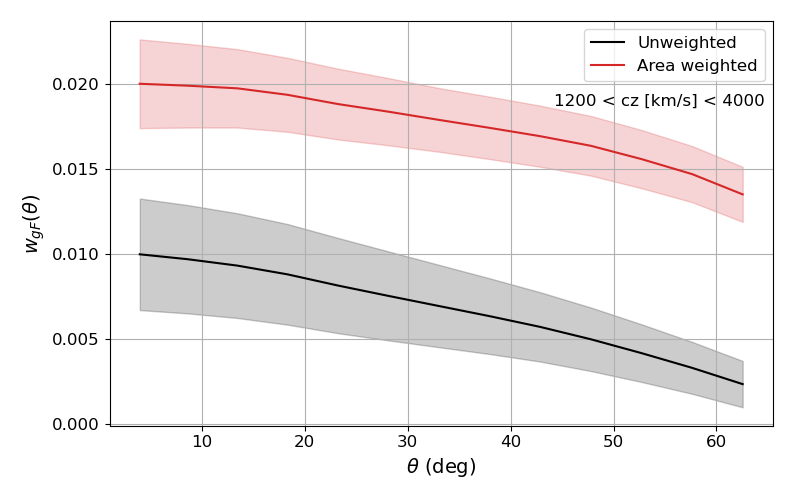
图注：Weighted cross-correlation between the Auger flux map and GLADE+VLS nearby galaxies ($1200 < cz < 4000~\mathrm{km\,s^{-1}}$ and $M_B \leq -18$) using inverse GMF deflection-area weights for $R=5$~EV. Shaded bands represent Jackknife uncertainty estimations.
对应解读：对应“建议重点查看的图表”第6项和“关键图表逐图导读”图5；也对应模型拟合段落中是否加入银河磁场偏转权重这一关键模型选项。
入选理由：该图给出对 1200<cz<4000 km/s 近邻星系样本加入 UF23 银河磁场反偏转面积权重后的加权交叉相关，并显示 jackknife 误差。它直接支撑日报中“加入银河磁场偏转权重后相关幅度提升超过两倍”的解读，是判断磁场修正是否真正增强相关性的关键图。
来源与置信度：\(arxiv_source\)；high；\(arxiv_source\) / main.tex:figure[7]
Fig10
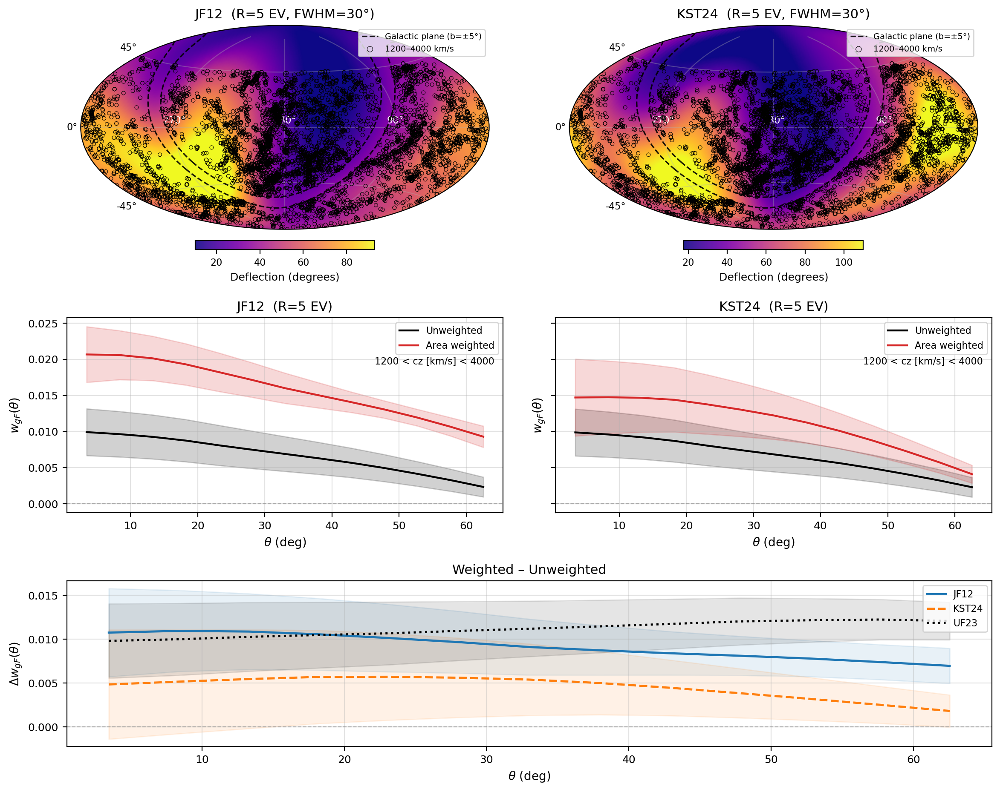
图注：Cross-correlation functions obtained using two additional GMF deflection maps with \mbox{$R=5$~EV}: the \(\citet\)[][JF12]{Jansson2012a} (left panels) and the \(\citet\)[][KST24]{KST2025} models (right panels). Bottom panel shows the difference $\Delta w_{gF}$ between the weighted and unweighted correlations for each model, with the fiducial \(\citet\)[][UF23]{Unger2024} model represented with a black dotted line.
对应解读：对应“建议重点查看的图表”第8项和“关键图表逐图导读”图6；也对应模型拟合段落中关于银河磁场模型系统误差和稳健性的讨论。
入选理由：该图比较 JF12、KST24 与 fiducial UF23 等不同银河磁场模型下的加权和未加权交叉相关，并给出加权提升量差值。它比单一偏转图更适合评估结论是否依赖某个 GMF 模型，是日报中系统误差与稳健性讨论最需要嵌入的证据图之一。
来源与置信度：\(arxiv_source\)；high；\(arxiv_source\) / main.tex:figure[10]
Fig02
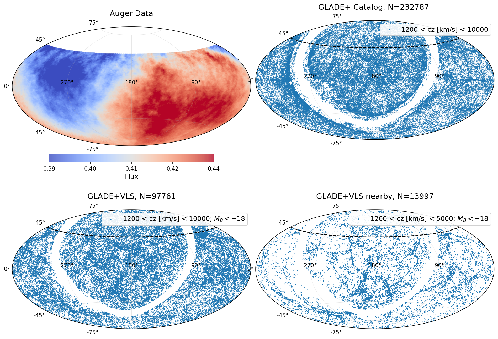
图注：Top, sky-plots of the Auger flux map (left) and the GLADE+ galaxy catalogue within $1200~\mathrm{km\,s^{-1}}< cz < 10000~\mathrm{km\,s^{-1}}$ (right). Bottom, the bottom panels correspond to the GLADE+VLS (left) and a nearby subsample ($1200~\mathrm{km\,s^{-1}} < cz < 5000~\mathrm{km\,s^{-1}}$) of the GLADE+VLS. The blank stripe on the maps corresponds to the Milky Way plane masking of GLADE+ galaxy catalogue. The most nearby sample (bottom right) shows a significant asymmetry in the large-scale distribution of galaxies, consistent with the dipole in Auger data. The black dashed line corresponds to $\delta=45^\circ$. Galaxies above this line are not considered in this study for a fair comparison with Auger data.
对应解读：对应“建议重点查看的图表”第2项和“关键图表逐图导读”图1；也为详细解读中近邻结构、银河面遮蔽和 Auger 可见天区的讨论提供直观背景。
入选理由：该图并列展示 Auger 通量图、GLADE+ 全样本、GLADE+VLS 以及近邻子样本的天空分布，并标出银河面遮蔽和 δ=45° 的 Auger 比较边界。它能直观看到近邻星系大尺度非均匀性、遮蔽带和 Auger 暴露限制，是理解后续偶极和相关分析的基础图。
来源与置信度：\(arxiv_source\)；high；\(arxiv_source\) / main.tex:figure[2]
Fig01
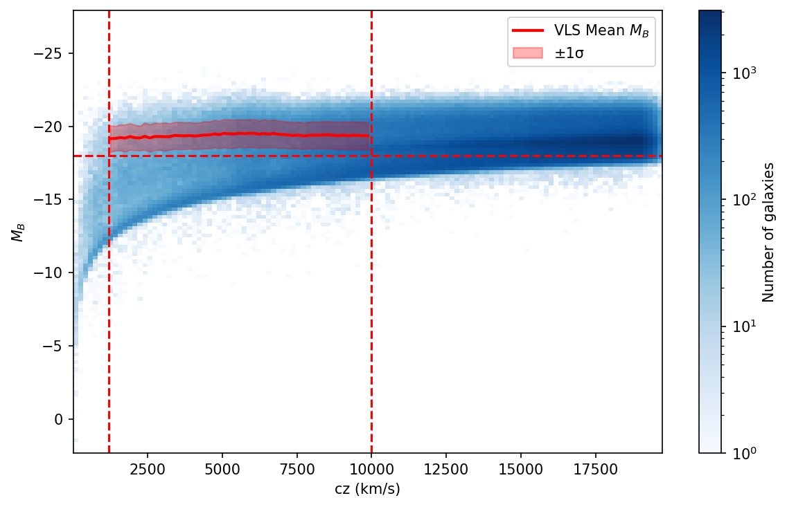
图注：2D histogram of the radial velocity, $cz$, and B-band absolute magnitude, $M_B$, of the GLADE+ catalog. In red, the mean $M_B$ and $1\sigma$ deviation for the volume limited sample (VLS) chosen to ensure a constant density of galaxies across the distance range considered. The dashed lines indicate the cuts in $cz$ and maximum $M_B$ that define the GLADE+ VLS.
对应解读：对应“建议重点查看的图表”第1项，以及模型拟合段落中对 GLADE+ 选择函数、体积限制样本和距离截断系统误差的讨论。
入选理由：该图展示 GLADE+ 星系的 cz 与 B 波段绝对星等二维分布，并标出体积限制样本的 cz 和 \(M_B\) 截断。它不能直接证明 UHECR 视界，但能检查样本选择是否合理、不同距离截断是否受亮度选择效应影响，是评估后续偶极和交叉相关可靠性的必要前置图。
来源与置信度：\(arxiv_source\)；high；\(arxiv_source\) / main.tex:figure[1]
强相关工作
这篇工作与 Auger 关于 \(E\geq 8\,\mathrm{EeV}\) 大尺度各向异性的论文直接相关，后者是本文要解释的观测事实。它也与使用 2MRS、2MASS、Swift-BAT AGN、starburst galaxy catalog、radio galaxy catalog 等目录做 UHECR 相关的研究属于同一类问题：源是否跟随近邻物质分布，还是更偏向某类罕见天体。建议检索关键词包括 “Pierre Auger large-scale anisotropy \(8\,\mathrm{EeV}\)”, “UHECR horizon nearby galaxies”, “GLADE+ ultra-high-energy cosmic rays”, “UHECR dipole local large-scale structure”, “Galactic magnetic field deflections UHECR”。
基础理论方面，它接在 GZK 能损、UHECR 传播和磁偏转研究之后。经典问题包括 Greisen、Zatsepin 与 Kuzmin 对最高能宇宙线传播压低的预测，以及现代传播代码对质子和核素在 CMB/EBL 中能损长度的计算。与本文可能存在张力的方向包括：若 Auger 组成在该能段偏重，则简单星系相关会被更强偏转模糊；若源是极少数强源，普通星系密度模板可能低估离散源泊松涨落；若河外磁场较强，则 \(50\text{--}60\,\mathrm{Mpc}\) 的方向相关未必只由能损视界决定。
同一事件 / 同类源线索：
- https://arxiv.org/abs/2607.21747
- https://arxiv.org/pdf/2607.21747
- https://arxiv.org/abs/1709.07321
- https://www.auger.org/science/scientific-results/anisotropy
相似工作：
基础理论 / 方法工作：
- https://doi.org/10.1103/PhysRevLett.16.748
- https://doi.org/10.1134/S0021364000020078
- https://arxiv.org/abs/1101.4256
相反观点 / 张力线索：
4. Revealing Four Subpopulations of Binary Black-Hole Mergers with the Fifth Gravitational-Wave Transient Catalog
- 来源：arXiv / astro-ph.HE
- 链接：https://arxiv.org/abs/2607.22011v1
- 作者：Nir Guttman, Paul D. Lasky, Eric Thrane
- 评分：novelty 8/10，importance 9/10，relevance 7/10，final 9.00/10
- 推荐理由：利用GWTC-5提出四个双黑洞并合子族群并给出强Bayes支持，对恒星级黑洞形成通道和引力波天体物理有较高影响；虽非伽马射线方向，但属于重要高能/致密天体结果。
中文题目：用第五版引力波暂现源目录揭示双黑洞并合的四个子族群
做了什么：这篇论文用第五版 LIGO--Virgo--KAGRA 引力波暂现源目录的双黑洞并合样本，重新推断恒星级黑洞并合的质量、自旋和质量比分布。作者提出一种混合的“数据驱动加参数化”族群发现方法，认为现有数据不再只是支持一个平滑的双黑洞总体，而是更自然地分成四个子族群：约占天体物理并合率 \(70\%\) 的低质量族群、两个中等质量分支，以及一个占比很低但高质量和高自旋的层级并合候选族群。相对于标准 LVK 族群模型，四分量模型的自然对数 Bayes 因子达到 \(\ln \mathrm{BF}=19.2\)，说明这种结构不是简单的过拟合小波动。
为什么重要：双黑洞质量和自旋分布是反推大质量恒星演化、孤立双星通道、星团动力学形成和层级并合的关键化石记录。过去几轮目录已经显示出 \(30M_\odot\) 附近的过密、可能的质量间隙、以及自旋分布不简单；这篇文章进一步声称第五版目录已经能把这些特征分解成四个物理上可解释的族群。如果成立，它意味着引力波天文学正在从“发现黑洞”进入“用统计结构区分形成通道”的阶段。
理论 / 观测 / 仪器方法价值：理论上，它给恒星塌缩、稳定质量转移、密集星团动力学和层级并合模型提供了更直接的观测约束；观测上，它展示了如何在选择效应很强、单事件参数后验很宽的情况下做族群分解；方法上，它把灵活的数据驱动发现与可解释的参数模型连接起来，避免只用固定形状先验去寻找本来未知的结构。对未来 O5、第三代探测器和多信使黑洞族群研究而言，这类方法可以成为发现新子族群的模板。
为什么应该关注：如果你关心恒星级黑洞从哪里来，这篇文章值得看，因为它把“黑洞并合质量谱有结构”推进到“哪些结构对应哪些形成通道”的层面。它也值得方法学读者关注：四分量结论依赖层级贝叶斯推断、选择效应修正和模型比较，正是当前引力波族群分析最容易出系统误差、也最有信息量的地方。即使你对具体四族群解释持保留态度，\(14M_\odot\) 附近的亏空、\(30\)--\(35M_\odot\) 附近近等质量低自旋分支、以及高质量高自旋小分量，都给理论模型提出了明确检验目标。
展开详细解读：文章讲解、背景、理论、重点章节、图表与相关工作
文章详细讲解
科学问题：双黑洞并合事件的质量和自旋分布到底是一条连续平滑的分布，还是由多个形成通道叠加而成？早期引力波目录事件数较少，很多族群模型只能检验非常粗的特征，例如幂律质量谱、一个高斯峰、低质量截断和自旋分布宽度。第五版暂现源目录提供了更大的双黑洞样本，作者要回答的问题是：这些数据是否已经足够分辨多个天体物理子族群，以及这些子族群是否能对应到不同的黑洞形成历史。
作者怎么做：论文分析 LVK 第五版目录中的双黑洞并合数据，采用层级贝叶斯族群推断，并引入一种混合的发现框架。这里的“混合”很关键：一方面模型允许数据以相对灵活的方式指出质量--质量比--自旋空间中的过密和亏空，另一方面最终结果仍被整理成具有物理解释的参数化分量。这样做的目的，是降低固定模型形状导致的确认偏差，同时保留模型比较、事件归属概率和形成通道解释的可读性。
关键结果：作者认为双黑洞族群可自然分成四个子群。第一是占主导的低质量分量，中心在 \(10M_\odot\) 附近，占总天体物理并合率约 \(70\%\)，并在 \(14M_\odot\) 附近与更重系统之间出现亏空；它可能对应失败超新星形成的较低质量黑洞。第二是中等质量的不等质量分支，把约 \(10M_\odot\) 的较轻黑洞与更重黑洞配对，可能与孤立双星和稳定质量转移有关。第三是 \(30\)--\(35M_\odot\) 附近的近等质量分支，自旋较低，质量分布更像一代黑洞，可能与密集恒星环境中的动力学配对相关。第四是占比仅百分量级的高质量宽质量比分量，具有较大自旋幅度，与层级并合图像相符。
模型比较方面，四分量模型相对于标准 LVK 族群模型给出 \(\ln \mathrm{BF}=19.2\)。这在贝叶斯证据意义上是很强的偏好，说明改进不只是多几个参数带来的局部拟合变好，而是在积分过参数体积后仍显著更能解释数据。不过读者应注意，Bayes 因子仍依赖候选模型集、先验体积和事件选择函数的实现；它不是对“真实宇宙一定有四个离散通道”的直接证明。
局限和下一步：主要风险来自选择效应、单事件参数后验的不确定性、候选事件的天体物理概率、波形系统误差和族群模型先验。尤其是高质量高自旋分量占比低，最容易受少数事件和先验假设影响。下一步需要用 O5 及以后目录检验四个分量是否保持稳定，进一步联合红移演化、有效进动自旋、偏心率或宿主环境信息，并与具体的恒星演化和星团模拟做前向比较。
关键结果是怎么做出来的
样本选择的核心是第五版 LVK 引力波暂现源目录中的双黑洞并合候选。族群分析通常不会简单把每个事件当作一个点，而是使用每个事件的参数后验样本，外加事件的天体物理概率和探测选择函数。本文的结论来自这些单事件后验在总体模型下的重新加权：如果某些质量--质量比--自旋区域持续需要更高的总体密度，并且不能由探测灵敏度偏差解释，就会表现为族群结构。
最重要的证据链是四分量模型相对于标准 LVK 模型的证据提升。作者报告 \(\ln \mathrm{BF}=19.2\)，等价于证据比约为 \(\exp(19.2)\)，已经远高于通常称为强偏好的阈值。这里的统计检验不是单个峰值似然差，而是贝叶斯证据比较：模型需要在解释数据的同时支付参数体积惩罚。因此，读者应重点检查论文中证据计算、先验选择和采样收敛诊断，而不是只看最佳拟合曲线是否更贴合直方图。
本文最具体的族群结果包括：低质量主分量位于 \(10M_\odot\) 左右，并在 \(14M_\odot\) 附近出现亏空；两个中等质量分量分别对应不等质量配对和近等质量配对；最高质量分量具有宽质量比分布和较大自旋。支撑这些结果的图表应包括二维质量平面上的后验预测密度、主质量边缘分布、质量比条件分布、自旋幅度或有效自旋分布，以及各事件属于不同分量的后验概率。尤其要看 \(m_1\)--\(m_2\) 平面中四个分量是否真的分离，还是在某些投影下被人为分开。
系统误差方面，低质量分量占比大，统计上较稳健，但 \(14M_\odot\) 附近亏空是否受探测效率、事件分类或波形参数退化影响，需要看选择函数修正后的后验预测检验。高质量层级并合候选分量则更脆弱，因为高质量事件少、波形在探测器频带内的周期数较少，质量比和自旋后验可能很宽；如果少数事件的自旋估计发生系统偏移，该分量的解释会变化。
稳健性检验应该包括改变族群模型先验、改变分量数、排除低显著性事件、使用不同波形后验、替换选择函数注入集，以及与标准 LVK 模型和更简单的二分量或三分量模型比较。若四分量结构在这些操作下仍存在，并且每个分量的事件归属概率不是由一两个边缘事件完全支配，那么本文的“新子族群”说法才更可信。
展开背景、理论、公式、模型、章节和图表导读
背景知识
双黑洞并合的质量分布不是普通的源计数问题。引力波探测器对高质量系统的可探测体积更大，但过高质量系统在地面探测器频带内停留时间短；质量比、自旋和红移又会互相影响波形。因此，观测到的事件分布并不等于宇宙中的真实分布。任何关于质量谱峰、亏空或子族群的结论，都必须通过选择效应修正和层级推断得到。
历史上，恒星级黑洞质量的主要信息来自 X 射线双星，样本小且受电磁选择效应影响。LIGO 的首个事件 \(\mathrm{GW150914}\) 立即显示宇宙中存在 \(30M_\odot\) 量级双黑洞，这比银河系 X 射线双星中常见质量更高。随后多个 GWTC 目录逐步显示，双黑洞质量谱可能有低质量结构、高质量截止、\(30M_\odot\) 附近过密，以及由成对不稳定超新星物理影响的高质量区域。
理论上，不同形成通道会在质量、质量比和自旋上留下不同痕迹。孤立双星演化可产生较有序的质量比和自旋倾角分布，稳定质量转移会偏好某些不等质量组合；公共包层通道可能改变轨道收缩和自旋耦合；密集星团动力学形成更容易随机配对并导致自旋方向近似各向同性；层级并合会把上一代并合产物再次并合，倾向于产生更高质量和较大自旋的黑洞。
为什么现在值得重新看？因为事件数已经从个位数、几十个增加到足以做多维族群统计的水平。早期模型常用单个幂律加峰描述主质量分布，这对发现第一个粗略峰很有用，但可能把多个物理通道混合成一个宽峰。第五版目录使得更细的分解有可能被数据支持，而不是完全由理论预设决定。
一个常见误区是把“子族群”理解为每个事件都能被唯一贴上形成通道标签。实际上，族群推断给出的是概率分解：某个事件可能有 \(60\%\) 概率属于一个分量、\(40\%\) 属于另一个分量，且分量本身也可能只是多个真实物理通道的有效描述。另一个误区是把 Bayes 因子看成绝对真理；它只在给定模型族、先验和数据处理假设下比较相对解释力。
基础理论 / 方法脉络
双黑洞并合波形首先由质量尺度、质量比、自旋和距离决定。对非偏心、准圆轨道系统，啁啾质量 \(\mathcal{M}\) 控制主导相位演化，质量比 \(q\) 和自旋组合影响高阶相位项、振幅和并合环降阶段。单个事件的参数估计通常给出较宽的后验云，而族群分析的任务是把许多这样的后验云合并起来，推断总体分布 \(p(\theta|\Lambda)\)，其中 \(\theta\) 是事件参数，\(\Lambda\) 是族群超参数。
探测选择效应是本问题的基础。质量较大的并合通常更响亮，能在更大体积内被探测到；但总质量过高时，信号主频会移向低频，可能减少可用 inspiral 周期。自旋也会改变信号持续时间和匹配滤波信噪比。因此，一个看似高质量事件很多的观测目录，可能部分来自探测偏置，而不是宇宙真实率更高。
本文使用的核心假设可以理解为混合模型：总体双黑洞分布是若干个分量的加权和。每个分量在主质量、次质量或质量比、自旋幅度和自旋方向上有自己的形状。分量权重对应该子族群对本地或积分并合率的贡献；分量形状则承载形成通道信息，例如低质量失败超新星、稳定质量转移、动力学一代并合、层级并合等。
关键可观测量不是单纯的 \(m_1\) 直方图，而是选择效应修正后的多维后验预测分布。\(m_1\)--\(m_2\) 平面能显示等质量和不等质量分支是否分离；\(q=m_2/m_1\) 分布能检验随机配对或稳定质量转移偏好；有效自旋 \(\chi_{\rm eff}\) 和自旋幅度能区分低自旋一代黑洞与高自旋层级并合候选。
主要退化包括质量--红移退化、自旋--质量比退化、分量数--分量宽度退化，以及族群先验--选择函数退化。尤其是在高质量端，单事件信号持续时间短，\(q\) 和自旋约束往往更弱；在低质量端，事件多但探测体积小，率密度估计对选择函数也敏感。
公式与推导
第一步是把单个双黑洞事件参数写成 \(\theta=(m_1,m_2,\boldsymbol{\chi}_1,\boldsymbol{\chi}_2,z)\)，族群超参数写成 \(\Lambda\)。混合族群模型的基本形式是
其中 \(K=4\) 是本文偏好的分量数，\(f_k\) 是第 \(k\) 个子族群的并合率占比，\(p_k\) 是该分量的质量和自旋分布，\(\lambda_k\) 是分量形状参数。
单事件波形中最稳健的质量组合通常是啁啾质量，定义为
这里 \(m_1\) 和 \(m_2\) 是源系质量，\(q\) 是质量比。\(\mathcal{M}\) 控制 inspiral 相位主项，\(q\) 则帮助区分近等质量分支和不等质量分支。
自旋对波形最常用的压缩量之一是有效自旋
其中 \(\chi_{iz}\) 是第 \(i\) 个黑洞自旋沿轨道角动量方向的分量。低 \(|\chi_{\rm eff}|\) 可来自小自旋，也可来自大自旋但方向抵消，因此还需要自旋幅度和进动信息辅助解释。
探测器实际看到的是探测器系质量，满足
其中 \(z\) 是红移。这个关系说明质量分布推断必须与距离和宇宙学体积联系起来，否则高红移低质量系统可能被误读为低红移高质量系统。
层级贝叶斯推断的单事件边缘似然可写成
其中 \(d_i\) 是第 \(i\) 个事件的数据，\(\mathcal{L}(d_i|\theta)\) 是单事件似然。实际计算常用已有后验样本对原始事件先验 \(\pi(\theta)\) 重新加权。
选择效应通过可探测分数进入，定义为
其中 \(p_{\rm det}(\theta)\) 是参数为 \(θ\) 的源被目录探测并通过选择阈值的概率。若不除以 \(\alpha(\Lambda)\)，高质量高信噪比系统会被高估。
给定观测到 \(N\) 个事件，并把总体率记为 \(R\)，非齐次泊松过程的族群似然可写为
其中 \(T\) 是观测时间。若边缘化掉 \(R\)，仍会保留依赖 \(\alpha(\Lambda)\) 的选择效应修正。
事件属于第 \(k\) 个子族群的后验归属概率可写成
这个量不能当作确定标签，但能诊断某个分量是否由许多事件共同支持，还是被少数事件支配。
模型比较使用 Bayes 因子
本文报告 \(\ln \mathrm{BF}_{4/{\rm LVK}}=19.2\)。这里 \(Z\) 是贝叶斯证据，\(\pi(\Lambda,R)\) 是超参数和率的先验；它同时奖励拟合好和惩罚无用参数体积。
模型拟合 / 应用方法
这类工作拟合的不是每个事件的单点质量，而是总体超参数 \(\Lambda\)：包括各分量权重 \(f_k\)、主质量分布位置和宽度、质量比形状、自旋幅度分布、自旋倾角或有效自旋分布，以及可能的红移演化参数。本文最醒目的拟合量是四个分量在质量--质量比--自旋空间中的位置和占比，例如低质量分量约 \(70\%\)，高质量层级并合候选仅百分量级。
似然通常建立在单事件后验样本重加权和选择函数注入集上。实际计算时，若第 \(i\) 个事件有后验样本 \(\theta_{is}\)，可用 \(p(\theta_{is}|\Lambda)/\pi(\theta_{is})\) 估计积分，其中 \(π(\theta)\) 是单事件分析先验。这个步骤很容易受到后验样本覆盖不足影响：如果族群模型把概率集中到单事件后验采样很稀疏的区域，重加权估计会有噪声。
残差诊断应关注后验预测分布与目录数据在多个投影上的一致性。只在 \(m_1\) 边缘分布上拟合得好并不够，因为一个错误模型可能通过混合不同 \(q\) 和自旋区域伪造相同的 \(m_1\) 直方图。应检查 \(m_1\)--\(m_2\)、\(m_1\)--\(q\)、\(m_1\)--\(\chi_{\rm eff}\) 和自旋幅度投影中的残差或覆盖概率。
主要参数退化包括分量权重与分量宽度的退化：一个宽分量加一个窄峰可能在边缘分布上近似另一个两宽分量模型。分量数也有可交换性问题，即混合模型中的标签交换，需要通过有序先验或后处理解释。自旋幅度和自旋倾角之间也会退化，因为 \(\chi_{\rm eff}\) 只测到沿轨道方向的质量加权组合。
模型可能失败的地方包括：真实族群不是离散四类，而是连续变化的形成通道混合；红移演化与质量分布耦合却被简化；低显著性候选污染族群；波形系统误差在高质量或强进动事件上偏移自旋估计。应用上，最稳妥的做法不是把四分量当成最终分类表，而是把它作为给恒星演化和星团模拟的统计约束：模拟前向产生 \(p(m_1,m_2,\chi,z)\)，通过选择函数后与本文四分量结构比较。
重点章节 / 结果段落怎么读
数据和样本部分应先读清楚：作者使用第五版暂现源目录中的哪些双黑洞事件、如何处理候选事件的天体物理概率、是否包含边缘事件、采用哪些单事件参数估计后验和波形模型。这里决定了族群推断的输入边界，也是评估结论稳健性的第一步。
方法部分要重点看混合数据驱动和参数化模型的定义。读者应弄清楚四个分量是先验中固定为四类，还是通过模型比较从多个候选分量数中选出；每个分量在质量、质量比和自旋上的函数形式是什么；选择效应 \(\alpha(\Lambda)\) 如何估计。
主结果部分应关注四分量后验：各分量权重、质量峰值、\(14M_\odot\) 亏空、\(30\)--\(35M_\odot\) 近等质量分支、高质量高自旋分量，以及这些量的可信区间。不要只看最优曲线，要看后验不确定性是否允许更平滑的替代解释。
模型比较部分是论文结论强度的核心。重点检查 \(\ln \mathrm{BF}=19.2\) 是相对于哪个“标准 LVK 模型”得到的，证据如何计算，先验体积是否公平，以及二分量、三分量、五分量模型是否也被测试。若只有四分量与一个基准模型比较，解释力度会弱一些；若多模型族都支持类似结构，则更强。
讨论和稳健性检验部分要看作者如何把四分量映射到形成通道。物理解释应被视为有根据的候选关联，而非直接证明。附录或补充材料中若有替代先验、事件剔除、注入集误差、波形系统误差和采样收敛检验，是判断这篇文章可信度的关键。
建议重点查看的图表
-
质量平面后验预测图：查看 \(m_1\)--\(m_2\) 或 \(m_1\)--\(q\) 平面中四个分量是否空间上可分，尤其是低质量主分量与中等质量分支之间的 \(14M_\odot\) 亏空是否明显。
-
主质量边缘分布图：检查 \(10M_\odot\) 附近峰、\(14M_\odot\) 附近亏空、\(30\)--\(35M_\odot\) 附近峰以及高质量尾部的可信区间，确认这些结构是否超过后验带宽。
-
质量比分布或条件质量比分布图：重点看不等质量分支和近等质量分支是否真由 \(q\) 信息区分，而不是仅由 \(m_1\) 投影造成。
-
自旋分布图：查看 \(\chi_{\rm eff}\)、自旋幅度或自旋倾角的分量差异，特别是高质量小分量是否确实偏向较大自旋。
-
分量归属概率表或图：看每个事件对各分量的 \(P_{ik}\)，判断四个分量是由多个事件共同支持，还是高质量分量被一两个事件主导。
-
Bayes 因子或模型比较表：检查四分量模型相对标准 LVK、二分量、三分量和其他灵活模型的证据差，关注先验敏感性。
-
后验预测检验和残差图：看模型在观测空间经过选择效应后是否能同时再现质量、质量比和自旋分布，而不是只拟合某个边缘投影。
-
选择函数或探测效率诊断：查看 \(p_{\rm det}(\theta)\) 或有效体积随质量和自旋的变化，确认所谓过密和亏空不是探测灵敏度结构。
关键图表逐图导读
图 1：若论文给出 \(m_1\)--\(m_2\) 或 \(m_1\)--\(q\) 平面的族群密度图，横轴通常是主黑洞质量 \(m_1\)，纵轴是次黑洞质量 \(m_2\) 或质量比 \(q\)。数据点可能是事件后验的代表值或等概率轮廓，彩色背景或等高线代表四分量模型的后验预测密度。读图时要看四个分量是否在二维空间中形成真正不同的脊线；陷阱是边缘直方图中看似分开的峰，在二维后验不确定性下可能高度重叠。
图 2：主质量分布图通常以 \(m_1\) 为横轴、选择效应修正后的率密度或概率密度为纵轴。各颜色线可能代表四个分量，黑线代表总和，阴影表示可信区间。重点看 \(10M_\odot\) 主峰和 \(14M_\odot\) 亏空是否由总分布的可信带支持；读图陷阱是不要把观测事件数直方图直接等同于真实率密度。
图 3：质量比分布图可能展示 \(q\) 的边缘分布，或在不同 \(m_1\) 区间内的 \(q\) 条件分布。近等质量分支应在 \(q\approx 1\) 附近增强，不等质量分支应在较低 \(q\) 有显著权重。这里要检查分量差异是否超过事件后验宽度；若可信区间很宽，则物理解释应更谨慎。
图 4：自旋相关图可能以 \(\chi_{\rm eff}\) 或自旋幅度为横轴，纵轴为概率密度，并按分量分色。低自旋近等质量分支和高自旋高质量分量是本文形成通道解释的关键。读图陷阱是 \(\chi_{\rm eff}\approx 0\) 不等于自旋幅度一定小，因为反平行或各向同性自旋也可抵消。
图 5：模型比较表或柱状图应列出不同族群模型的 \(\ln Z\)、\(\Delta\ln Z\) 或 \(\ln \mathrm{BF}\)。重点看四分量模型的 \(\ln \mathrm{BF}=19.2\) 是否相对于明确的标准 LVK 模型，以及其他候选模型是否接近。若四分量只比一个过于受限的基准模型好，结论强度会下降。
图 6：事件归属概率图通常按事件编号或名称排列，纵向堆叠不同颜色表示属于各分量的概率。理想情况是每个分量都有多个事件给出非零支持。读者要警惕高质量层级分量若几乎只由一两个事件支撑，则其天体物理解释更像候选而非稳固族群。
论文原图 / 可嵌入图片
Fig01
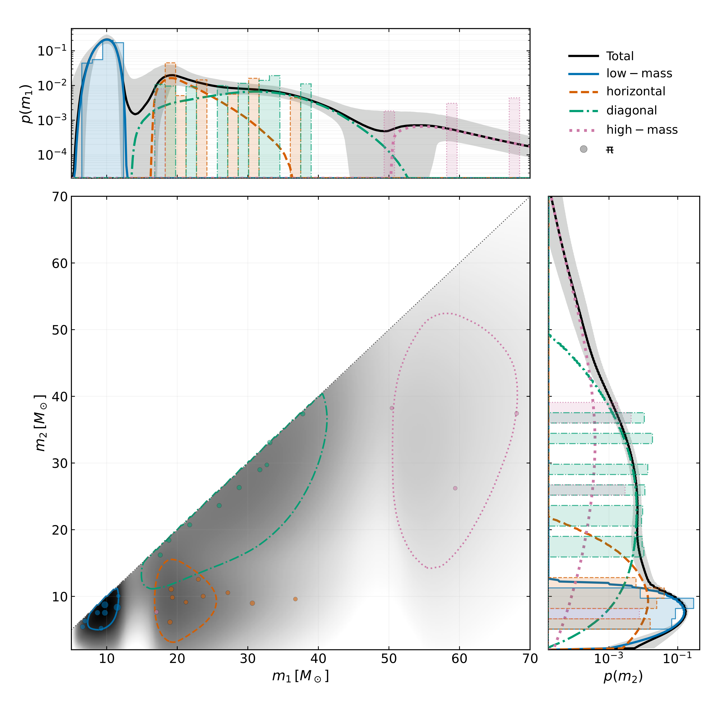
图注：The distribution of black hole component masses. The central panel shows the reconstructed population density in the $(m_1,m_2)$ plane, with grey shading denoting the total distribution. Darker shading indicates higher probability density. The coloured contours show 25\% peak-density levels of different sub-populations identified in this study. The top and right panels show the corresponding marginal distributions for $m_1$ and $m_2$, respectively, with the black curves indicating the total population and the grey bands representing the 90\% posterior predictive intervals. The underlying four-component sub-populations are shown as the coloured curves in the marginal distributions. Coloured points in the $(m_1,m_2)$ plane show the $\pistroke$ reconstruction. The $\pistroke$ solution appears in the marginal distribution as colored histograms. The figure is cropped above $70\,\Msun$ for clarity, although the inferred distributions extend to higher masses.
对应解读：对应“建议重点查看的图表”第1、2项，以及“关键图表逐图导读”图1和图2：质量平面后验预测图与主质量边缘分布图。
入选理由：这张图同时给出二维\(m_1\)--\(m_2\)族群密度、四个子族群等高线、\(m_1\)和\(m_2\)边缘分布及90%后验预测区间，是检验四分量是否真实分离、\(10M_\odot\)主峰和中高质量分量结构是否存在的核心证据。它比单独的分量图更能直接支撑日报关于质量平面、边缘峰和后验带宽的解读。
来源与置信度：\(arxiv_source\)；high；\(arxiv_source\) / main.tex:figure[1]
Fig04
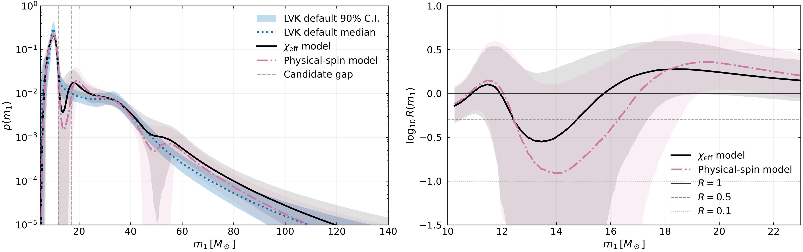
图注：Low-mass depletion relative to the LVK default population model. Left: posterior predictive distributions for the primary mass $m_1$ from the $\chi_{\rm eff}$ and physical-spin four-subpopulation models, compared with the LVK default model. Right: moving-window probability ratios, $R(m_1)=P_{\rm ours}(W_{m_1})/P_{\rm LVK}(W_{m_1})$, shown in terms of $\log_{10}R$ for the $\chi_{\rm eff}$ and physical-spin models. Values below zero indicate mass windows where each four-subpopulation model assigns less probability than the LVK default model. Both analyses show a localized minimum near $m_1\simeq14\,M_\odot$, indicating a depletion between the low-mass $10\,M_\odot$ peak and the higher-mass subpopulations.
对应解读：对应“建议重点查看的图表”第2、6项，以及“关键图表逐图导读”图2和图5中关于\(14M_\odot\)亏空、与LVK默认模型比较和Bayes因子解读的部分。
入选理由：这张图专门比较四子族群模型与LVK默认族群模型的主质量分布，并用移动窗口概率比\(R(m_1)\)显示\(m_1\simeq14M_\odot\)附近的局部亏空。它是验证摘要中“低质量主分量与更重系统之间存在14太阳质量亏空”的最直接诊断图，也能辅助理解四分量模型相对标准LVK模型的改进来自何处。
来源与置信度：\(arxiv_source\)；high；\(arxiv_source\) / main.tex:figure[4]
Fig02
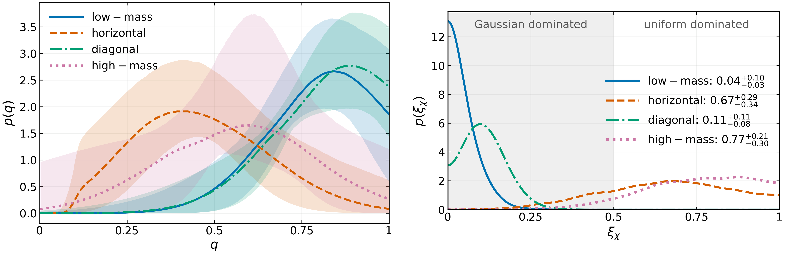
图注：Inferred mass-ratio and effective-spin properties of the four reconstructed subpopulations. Top: posterior predictive distributions for the mass ratio $q$, with shaded bands showing the corresponding 90\% posterior predictive intervals. The $\popL$ component and $\popMD$ component favour nearly equal masses, while $\popMH$ and $\popU$ prefer broader and more unequal-mass distributions. Bottom: posterior distributions for the spin-model mixture parameter $\xi_\chi$ (see Eq.~\eqref{eq:eff_spin_model}), which controls the relative contribution of the broad uniform component in the $\chieff$ distribution. Small values of $\xi_\chi$ correspond to a narrow distribution near $\chieff\simeq0$, while large values correspond to a broader effective-spin distribution.
对应解读：对应“建议重点查看的图表”第3、4项，以及“关键图表逐图导读”图3和图4：质量比分布与有效自旋性质。
入选理由：这张图展示四个子族群的质量比\(q\)后验预测分布及\(\chi_{\rm eff}\)模型混合参数，直接检验不等质量分支和近等质量分支是否由\(q\)信息区分，而不是仅由\(m_1\)投影造成。同时它提供有效自旋宽窄差异，是连接族群分类与形成通道解释的重要图。
来源与置信度：\(arxiv_source\)；high；\(arxiv_source\) / main.tex:figure[2]
Fig03
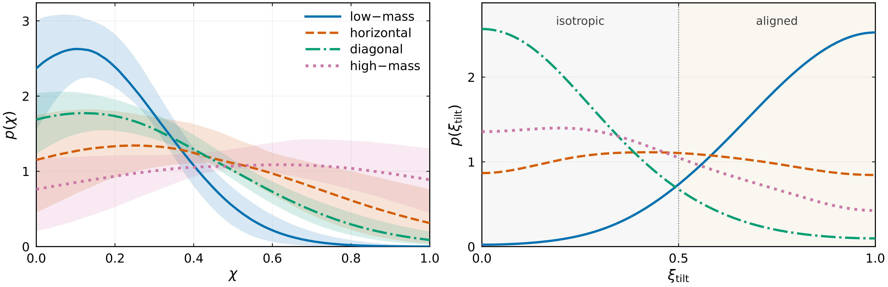
图注：Inferred physical-spin properties of the four reconstructed subpopulations. Left: posterior predictive distributions for the spin magnitude $\chi$, assumed to be identical for the primary and secondary black holes within each subpopulation. Shaded bands show the corresponding 90\% posterior predictive intervals. Right: posterior distributions for the tilt-alignment mixing fractions \(\xi_{\rm tilt}^{(k)}\) defined in Eq.~\(\eqref{eq:tilt_model}.\) The parameter \(\xi_{\rm tilt}^{(k)}\) controls the relative contributions of the isotropic and preferentially aligned components. The subpopulations exhibit distinct spin behaviour: $\popL$ favours low spin magnitudes and stronger alignment, $\popMD$ has low-to-moderate spins and weaker alignment, $\popMH$ extends to larger spin magnitudes with an intermediate alignment fraction, and $\popU$ has the broadest spin-magnitude distribution and broad support in the tilt-alignment fraction.
对应解读：对应“建议重点查看的图表”第4项，以及“关键图表逐图导读”图4：自旋幅度和自旋倾角分布。
入选理由：这张图给出物理自旋幅度\(\chi\)和倾角对齐混合比例的分量后验，正好支撑日报中关于低自旋近等质量分支、高质量分量可能具有更大自旋、以及\(\chi_{\rm eff}\)不能完全代表自旋幅度的提醒。它比Fig02更直接展示物理自旋幅度，因此对形成通道解释很关键。
来源与置信度：\(arxiv_source\)；high；\(arxiv_source\) / main.tex:figure[3]
Fig05
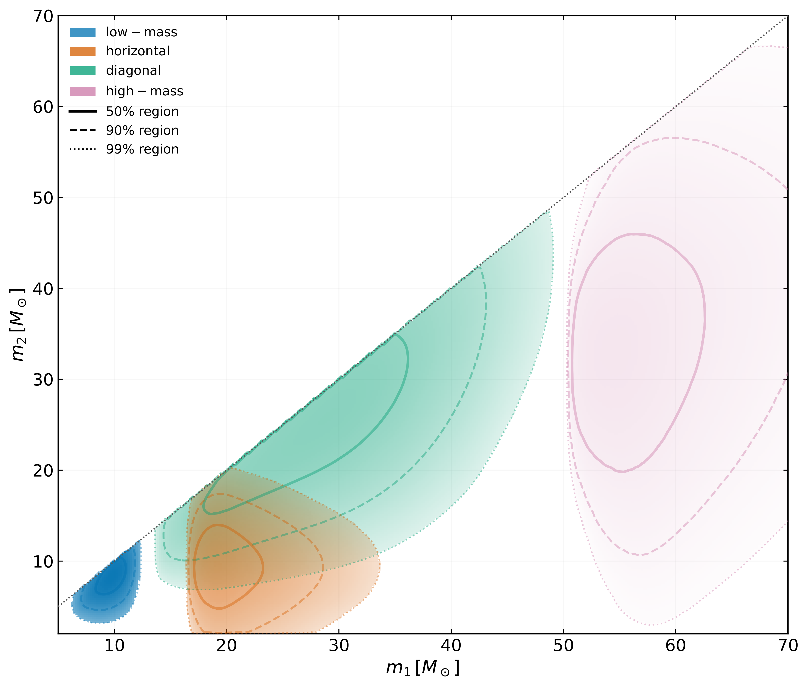
图注：Mass distributions of the four inferred binary-black-hole subpopulations in the $(m_1,m_2)$ plane. The coloured shading shows the median posterior-predictive density of each subpopulation, weighted by its inferred population fraction, so that the relative intensities indicate the components' contributions to the total population. For clarity, the shading is restricted to the highest-density region containing 99\% of the probability of each subpopulation within the plotted mass range. For each subpopulation, the solid, dashed, and dotted contours enclose 50\%, 90\%, and 99\%, respectively, of the probability represented within the plotted mass range.
对应解读：对应“建议重点查看的图表”第1项，以及“关键图表逐图导读”图1中关于四个分量在\(m_1\)--\(m_2\)平面空间分离和脊线结构的部分。
入选理由：这张图按子族群分别展示\(m_1\)--\(m_2\)平面中的加权后验预测密度，并给出50%、90%、99%概率轮廓，适合观察各分量的空间范围、相对贡献和重叠程度。虽然与Fig01有部分信息重合，但它更清楚地拆分四个质量子结构，有助于理解低质量、不等质量、中等质量近等质量和高质量宽质量比分量的几何形态。
来源与置信度：\(arxiv_source\)；high；\(arxiv_source\) / main.tex:figure[5]
强相关工作
这篇工作直接处在 LVK 双黑洞族群分析传统之内。应与历次 GWTC 目录和 LVK population papers 对读：早期工作建立了双黑洞率、幂律质量谱、\(30M_\odot\) 附近峰和自旋分布的基础；本文则声称第五版目录已经能把这些现象进一步拆成四个子族群。建议检索关键词包括 “GWTC population binary black hole mass distribution”, “power law plus peak”, “hierarchical mergers gravitational waves”, “stable mass transfer binary black holes”。
相近或可能形成张力的方向包括：只需单一连续质量谱或非参数平滑模型即可解释数据的工作；把 \(30M_\odot\) 峰归因于恒星演化金属丰度和成对不稳定物理的模型；以及把高质量高自旋事件解释为层级并合、AGN 盘并合或星团逃逸速度选择效应的研究。读者应特别比较不同模型在选择效应、低显著性事件、红移演化和自旋先验上的差别。若要找同类非参数研究，可检索 “Gaussian process black hole population gravitational waves”, “mixture model BBH population”, “Dirichlet process gravitational wave population”。
同一事件 / 同类源线索：
相似工作：
基础理论 / 方法工作：
- https://arxiv.org/abs/1602.03837
- https://arxiv.org/abs/1811.12907
- https://arxiv.org/abs/2010.14527
- https://arxiv.org/abs/2111.03606
相反观点 / 张力线索：
5. Light Antinuclei Coalescence: Femtoscopic Constraints via Neural-Flow Surrogates
- 来源：arXiv / astro-ph.HE
- 链接：https://arxiv.org/abs/2607.21689v1
- 作者：M. Korwieser, L. Fabbietti, B. Hashemi, L. Heinrich, M. Mahlein, D. L. Mihaylov, C. S. Zeyn
- 评分：novelty 8/10，importance 8/10，relevance 8/10，final 9.00/10
- 推荐理由：用ALICE飞秒关联数据和normalizing-flow surrogate显著收缩反核合并参数不确定性，直接影响宇宙线反氘/反氦通量和暗物质间接探测背景预测，方法和结果都值得读。
中文题目：用神经流代理模型把 femtoscopy 约束带入轻反核并合：面向宇宙线反氘和反氦通量的不确定度压缩
做了什么：这篇文章解决的是宇宙线轻反核预测中的一个硬瓶颈：反氘、反氦的产生率主要受并合模型中源函数和并合参数的不确定性限制，而这些量很难直接由宇宙线数据校准。作者用一个快速、可微的 normalizing-flow 代理模型来模拟 femtoscopic 源模型 CECA，并用 49 个 ALICE 质子—质子关联函数约束源函数，再通过标度律外推到宇宙线反核产生相关的低多重数区域。核心结论是：代理模型对 CECA 的仿真误差达到亚百分比，数据约束后的源函数显著压缩了并合参数 \(B_2\) 和 \(B_3\) 的不确定度；原先可达 \(10\) 到 \(100\) 倍、甚至 \(\sim 1000\) 倍的理论散布，被压到 \(B_2\) 的几个百分点和 \(B_3\) 的约十个百分点量级，另有 \(B_2\) 约 \(15\%\) 的波函数系统误差。
为什么重要：反氘和反氦长期被认为是暗物质间接探测的高信噪比通道，因为常规宇宙线碰撞产生的低能反核背景很小。但这个优势只有在背景产生率可控时才成立。本文的重要性在于，它不是简单再调一个经验并合动量，而是把 ALICE 的强子 femtoscopy 信息转化为反核并合计算中的源函数约束，从而直接攻击反核通量预测中最大的理论误差源。
理论 / 观测 / 仪器方法价值：对理论和方法的价值在于，文章把高能碰撞末态的空间—动量结构、双粒子关联函数和轻反核并合参数连成了一条可拟合、可微、可快速传播误差的链条。对观测解释的价值在于，AMS-02、GAPS 或未来宇宙线实验若报告反氘或反氦候选事件，背景模型的不确定度将直接决定它是暗物质线索还是常规天体物理尾部。对计算方法而言，normalizing-flow surrogate 让昂贵的 CECA 源模型可以进入大规模似然拟合和不确定度传播。
为什么应该关注：如果你关心暗物质间接探测，这篇文章值得看，因为它会改变“轻反核背景到底有多不确定”这个问题的基线。如果你做重离子或小系统 femtoscopy，它展示了关联函数数据如何影响宇宙线反核物理。如果你做统计建模或机器学习加速物理模型，它是一个相当清楚的例子：代理模型不是替代物理，而是把复杂物理模型变成可用于全局拟合的可微模块。
展开详细解读：文章讲解、背景、理论、重点章节、图表与相关工作
文章详细讲解
科学问题：宇宙线中的轻反核，尤其反氘和反氦，被视为暗物质湮灭或衰变的潜在“低背景”信号。但反核产生率并不是由基本反核谱直接测得，而通常要通过并合模型从反质子、反中子等反核子产额推断。并合模型最敏感的输入之一是反核子发射源的空间尺度和形状；源函数越小、反核子在相空间中越容易重叠，反核形成概率越高。过去这部分常被简化成经验并合动量或高度参数化的源半径，导致 \(B_2\) 和 \(B_3\) 的预测跨越数量级。
作者怎么做：本文把 ALICE 在质子—质子碰撞中测得的 49 个双质子关联函数作为 femtoscopic 约束，拟合 CECA 源模型。CECA 是一个较复杂的源建模框架，直接用于大量参数扫描和误差传播代价很高。作者因此训练一个 normalizing-flow surrogate，使其在输入碰撞多重数、动量区间和模型参数后，能快速给出与 CECA 等价的源函数或相关可观测量。normalizing flow 的关键好处是可微、归一化明确、采样和密度评估快，因此可以嵌入似然拟合。
关键结果：代理模型对 CECA 的 emulation fidelity 达到亚百分比量级，这意味着后续不确定度主要来自数据、模型外推和物理假设，而不是机器学习插值误差。用 ALICE 关联函数约束后，源函数在实验可及的多重数范围内被明显收紧，并通过标度律外推到宇宙线相关的低多重数区域。由此计算的并合参数 \(B_2\) 和 \(B_3\) 不再有过去那种数量级级别散布：\(B_2\) 缩小到几个百分点，\(B_3\) 缩小到约十个百分点；对 \(B_2\) 还需要计入约 \(15\%\) 的波函数系统误差。
局限和下一步：最大需要谨慎的地方是低多重数外推。宇宙线反核产生对应的碰撞环境和 ALICE 测得的小系统并不完全等价，标度律是否在最低多重数、不同初态和不同运动学区域继续成立，是本文结论能否直接进入宇宙线背景模型的关键。其次，并合计算还依赖反核波函数、反核子关联、同位旋处理、反中子谱推断和强子产生模型。下一步自然是把该框架接入完整的宇宙线传播与二级产生计算，并和 LHC 更多系统、更多能区、更多粒子对的 femtoscopy 数据联合约束。
关键结果是怎么做出来的
本文最重要的证据链从样本选择开始：作者使用 49 个 ALICE 质子—质子关联函数，而不是只用一个源半径或一个经验参数。这些关联函数覆盖不同多重数和动量选择，使得源函数的多重数依赖可被数据校准。关键点是这些数据不是直接测反氘或反氦，而是测末态双质子的相对动量关联；通过 femtoscopy 反演或拟合出的发射源，随后进入并合积分。
方法上，作者没有在每一个似然点都直接运行 CECA，而是训练 normalizing-flow surrogate 来复现 CECA 输出。文章报告代理模型相对 CECA 的仿真误差为亚百分比，这一步是结果可信度的前提：如果 surrogate 自身误差大于实验约束，后面的 \(B_2\) 和 \(B_3\) 收紧就可能只是数值假象。读者应重点查看 surrogate validation 图，包括预测与 CECA 真值的比值、残差分布以及在训练区边界附近的表现。
统计上，数据约束来自对 49 个关联函数的联合拟合。通常这类拟合的核心是比较观测关联函数 \(C_{\mathrm{data}}(q)\) 与模型关联函数 \(C_{\mathrm{model}}(q;\theta)\)，其中 \(q\) 是相对动量，\(\theta\) 包含源模型和标度律参数。显著性在这里不是“发现一个事件”的 \(\sigma\) 值，而是参数后验或置信区间的压缩，以及不同源假设对 \(B_2\)、\(B_3\) 预测的散布是否被数据排除或缩小。应检查文章是否给出协方差、系统误差处理以及不同多重数 bin 之间的相关误差。
支撑主张的图表应包括三类：第一，ALICE 关联函数与拟合曲线的对比，残差要随机且无明显多重数相关偏移；第二，CECA 与 surrogate 输出的逐点比较，确认 emulation fidelity；第三，数据约束前后 \(B_2\) 和 \(B_3\) 的分布或带状区间，显示从数量级不确定度压缩到百分比或十百分比量级。若文中有低多重数外推图，它比漂亮的高多重数拟合图更值得仔细看，因为宇宙线应用恰恰落在外推区。
系统误差方面，最关键的是源模型形式、低多重数标度律、反核波函数和 femtoscopy 数据系统误差的传播。摘要中特别指出 \(B_2\) 仍有约 \(15\%\) 的波函数系统误差，说明即使源函数已经被约束，量子束缚态波函数选择仍会进入并合积分。稳健性检验应包括替换波函数、改变标度律形式、剔除部分关联函数、改变协方差假设，以及检查 surrogate 在外推区域是否给出过度自信的不确定度。
展开背景、理论、公式、模型、章节和图表导读
背景知识
研究对象是轻反核并合，即反质子和反中子在强子碰撞末态中如果相对动量足够小、空间上足够接近，就可能形成反氘；三个反核子则可能形成反氦或反氚。这一过程在微观上是量子多体束缚态形成问题，但在宇宙线物理中常被压缩成并合参数 \(B_A\)，用来把反核子产额转化为质量数为 \(A\) 的反核产额。
历史问题在于，暗物质间接探测社区很早就认识到低能反氘可能比反质子更“干净”，因为常规宇宙线碰撞产生低动能反氘的相空间受限。但“干净”不等于“背景已知”。不同并合模型、不同强子事件发生器、不同源半径假设和不同宇宙线传播参数，会让预测背景差别很大。尤其对反氦，事件率低到任何数量级不确定度都会改变物理解释。
观测背景来自两端：一端是 LHC 和固定靶实验提供的反核、反质子以及双粒子关联数据；另一端是 AMS-02、BESS、GAPS 等宇宙线实验对反粒子和轻反核的搜索。ALICE 的小系统 femtoscopy 数据很有价值，因为它们直接探测强子发射源的空间尺度，而并合概率正是对源尺度高度敏感。
为什么现在值得重新看：一方面，ALICE 等实验积累了高精度质子—质子关联函数，不再只能依赖粗略源半径；另一方面，机器学习代理模型和可微统计推断让复杂源模型可以进入全局拟合。过去 CECA 这类模型可能物理更细，但计算太慢；本文的 neural-flow surrogate 试图把物理保真度和统计可用性同时保住。
常见误区之一是把并合动量 \(p_0\) 当成普适常数。实际上 \(p_0\) 或 \(B_A\) 有效吸收了源大小、运动学选择、末态相互作用、波函数和事件环境等多种物理。另一个误区是认为 femtoscopy 只属于重离子物理，与宇宙线无关；本文正好说明，小系统 femtoscopy 给出的源函数约束可以直接影响宇宙线反核背景。还要避免把代理模型理解成黑箱替代实验：它在这里是 CECA 的快速近似，物理约束仍来自 ALICE 数据和并合理论。
基础理论 / 方法脉络
基础物理图像是相空间重叠。若两个反核子在动量空间中的相对动量小于束缚态波函数的典型宽度，并且在空间上由同一个紧凑源发出，它们有有限概率投影到反氘束缚态。三体反核形成同理，但对源体积和相空间相关性的依赖更强，因此 \(B_3\) 通常比 \(B_2\) 更敏感，也更容易出现数量级不确定度。
femtoscopy 的基本观测量是双粒子关联函数 \(C(q)\)，其中 \(q\) 是两粒子相对动量。关联函数偏离 \(1\) 的形状来自量子统计、强相互作用、库仑相互作用以及源函数 \(S(r)\) 的卷积。对质子—质子对而言，费米统计和末态强相互作用都会影响低 \(q\) 区域，因此可以用测得的 \(C(q)\) 反推出有效发射源的大小和形状。
本文的模型假设链条可以概括为：CECA 给出随多重数和动量条件变化的源函数；normalizing-flow surrogate 学习 CECA 的映射；ALICE 的 49 个关联函数约束 surrogate 的输入参数和标度律；约束后的源函数被用于计算反氘和反氦并合参数 \(B_2\) 与 \(B_3\)。核心不是单个半径，而是源函数的整体形状及其多重数依赖。
观测和统计方法上，模型需要把源函数映射成关联函数，再与 ALICE 数据比较。这里存在多个退化：较小源半径和较强末态相互作用可能在某些 \(q\) 区间产生相似关联形状；归一化误差可能伪装成关联幅度变化；低多重数外推可能与源形状参数相关。代理模型的可微性使这些退化可以通过联合似然和后验协方差显式传播，而不是只给一个最佳拟合值。
系统误差主要来自四处：ALICE 关联函数的实验协方差和基线处理；CECA 模型对小系统源结构的物理假设；从 LHC 可测多重数到宇宙线相关低多重数的标度律；以及反核束缚态波函数。摘要中提到 \(B_2\) 的波函数系统误差约 \(15\%\)，说明源函数约束并没有消除所有微观核物理不确定性。
公式与推导
第一步从并合的相空间图像出发。质量数为 \(A\) 的反核产额常写成反核子产额的乘积乘以并合参数：
这里 \(A\) 是质量数，\(Z\) 是电荷数，\(B_A\) 吸收源大小、波函数和相空间相关性。对反氘有 \(A=2\)，对反氦三或反氚有 \(A=3\)。
更微观的写法是 Wigner 函数重叠积分。若 \(S_A(\{\mathbf{r}_i,\mathbf{p}_i\})\) 表示反核子的联合发射相空间分布，\(W_A\) 表示束缚态 Wigner 函数，则
其中 \(g_A\) 是自旋统计因子，\(\mathbf{r}_{ij}\) 和 \(\mathbf{p}_{ij}\) 是相对坐标与相对动量。本文关心的源函数约束本质上进入这个积分。
双粒子 femtoscopy 的核心关系可写成 Koonin-Pratt 形式：
这里 \(S(\mathbf{r})\) 是相对发射源，\(\psi_{\mathbf{q}}(\mathbf{r})\) 是包含量子统计和末态相互作用的两体相对波函数，\(\mathbf{q}\) 是相对动量。ALICE 的质子—质子关联函数通过这个方程约束 \(S(\mathbf{r})\)。
若用一个高斯源作直观极限，源函数可写为
其中 \(R\) 是有效源半径。真实 CECA 源不必是简单高斯，但这个公式说明为什么较小的 \(R\) 会增强短距离重叠，从而增大并合概率。
对反氘，若束缚态相对波函数近似为尺度 \(a_d\) 的高斯，则 Wigner 重叠给出类似的尺度依赖：
这里 \(f(q)\) 表示相对动量分布，\(W_d\) 是反氘 Wigner 函数。该式不是本文完整数值模型，但展示 \(B_2\) 对源尺度的敏感性。
对三体并合，尺度依赖更陡，可用示意形式表示为
其中 \(d\Gamma_3\) 是三体相空间体元，\(S_3\) 是三反核子联合源，\(W_3\) 是三体束缚态 Wigner 函数，\(a_3\) 是三体波函数尺度。因此 \(B_3\) 的源模型不确定度通常比 \(B_2\) 更大。
本文的 surrogate 可以形式化为一个可逆流映射：
这里 \(\mathbf{x}\) 可代表源函数或模型输出的压缩表示，\(\theta\) 是 CECA 与碰撞条件参数，\(\phi\) 是神经网络权重。可逆雅可比行列式使概率密度可计算，便于似然拟合。
与数据比较时，若近似采用高斯误差，联合似然可写为
这里 \(k\) 标记 49 个 ALICE 关联函数，\(\mathbf{V}_k\) 是实验协方差矩阵。这个量决定源参数后验如何被数据压缩。
最后，不确定度传播到并合参数可以用后验积分表达：
其中 \(D\) 是 ALICE femtoscopy 数据。本文所谓 \(B_2\) 和 \(B_3\) 不确定度收缩，就是这个后验分布相对先验或传统模型包络显著变窄。
模型拟合 / 应用方法
这类工作的拟合量首先是关联函数而不是反核产额。每个 ALICE 质子—质子关联函数由多个相对动量 bin 组成，模型要给出对应的 \(C(q)\)。拟合参数包括 CECA 源模型参数、多重数或动量依赖的标度律参数、可能的归一化或基线 nuisance 参数，以及 surrogate 的不确定度表示。最终派生量才是 \(B_2\) 和 \(B_3\)。
似然通常基于关联函数残差构造，可采用协方差矩阵处理 bin 间相关误差。若实验系统误差主要是归一化或基线形状，简单对角误差会低估或误判约束，因此应检查作者如何处理相关系统误差。normalizing-flow surrogate 的可微性允许使用梯度优化、MCMC 或变分推断来抽样后验，并把源函数不确定度传播到并合参数。
参数退化主要有三类。第一是源半径与源形状退化：不同尾部形状可能给出相似的低 \(q\) 关联，但对 Wigner 重叠积分影响不同。第二是多重数标度律与低多重数外推退化：在 ALICE 数据覆盖区内拟合得很好，不代表宇宙线低多重数区一定可靠。第三是波函数与源函数退化：改变反氘或反氦波函数尺度会改变 \(B_A\)，而这种变化不一定能由质子—质子 femtoscopy 数据吸收。
残差诊断很重要。读者不应只看 \(\chi^2\) 或后验区间变窄，而要看不同多重数、不同 \(q\) 范围的残差是否有系统偏移。如果低 \(q\) 残差呈现同号结构，可能说明末态相互作用或源形状建模有偏；如果高 \(q\) 基线不稳，可能会污染归一化并影响源半径。
模型可能失败的场景包括：CECA 缺失低多重数极限下的重要物理；ALICE 质子—质子源不能代表宇宙线二级反核产生的有效源；反中子产生与反质子产生的差异被过度简化；三体关联不能由两体源函数充分刻画。实际应用中，最合理的做法是把本文给出的 \(B_A\) 后验作为强约束输入，但在宇宙线传播和暗物质解释中保留外推系统误差项，而不是把几个百分点误差误读成全链条背景误差。
重点章节 / 结果段落怎么读
数据/样本部分应首先读清楚 49 个 ALICE 质子—质子关联函数覆盖的碰撞系统、能量、多重数、横动量或相对动量范围。这里决定了后续外推的距离。特别要看作者是否排除了某些质量较差或基线复杂的关联函数，以及实验协方差如何进入拟合。
方法部分重点看 CECA 源模型和 normalizing-flow surrogate 的接口。读者需要弄清楚 surrogate 学的是源函数本身、源函数的参数化表示，还是 CECA 到关联函数的完整映射。还要看训练集如何采样参数空间，是否覆盖低多重数外推所需边界，以及验证集是否独立。
拟合和不确定度传播部分是论文的核心。应关注联合似然的定义、nuisance 参数、先验范围、系统误差处理，以及数据约束前后源函数后验的变化。若文中给出后验相关矩阵或 corner plot，要用它判断哪些参数真正被数据约束，哪些只是由先验或标度律限制。
主结果部分应围绕 \(B_2\) 和 \(B_3\) 展开阅读。重点不是最佳值本身，而是约束前后的不确定度压缩幅度、不同多重数或运动学区域的稳定性、以及波函数系统误差如何叠加。摘要中的“从 \(10\) 到 \(100\) 倍和 \(\sim 1000\) 倍压缩到几个百分点和十个百分点”应在图表中有直接对应。
讨论和稳健性检验部分要看作者如何处理低多重数外推和宇宙线适用性。任何将 LHC 小系统结果用于宇宙线背景的工作都需要解释碰撞环境差异。附录若包含 surrogate 架构、训练损失、验证残差、替代波函数和替代标度律，这些内容比正文中的结论句更能决定结果是否可复用。
建议重点查看的图表
-
ALICE 质子—质子关联函数拟合图：看 \(C(q)\) 随 \(q\) 的数据点、模型曲线和残差，尤其低 \(q\) 区域是否被同时拟合好。
-
CECA 与 normalizing-flow surrogate 的验证图：看预测/真值比值是否在亚百分比范围内，误差是否在参数空间边界或低多重数区域变大。
-
源函数后验图：看数据约束前后 \(S(r)\) 或有效源半径的置信带如何收缩，尾部形状是否仍有自由度。
-
多重数标度律图：看源尺度或源函数参数随多重数变化的趋势，以及宇宙线相关低多重数区域是插值还是外推。
-
\(B_2\) 和 \(B_3\) 后验或预测带：看先验、传统模型包络、数据约束结果之间的差异，确认不确定度压缩是否主要来自数据。
-
波函数系统误差比较图或表：看不同反氘、反氦波函数选择对 \(B_A\) 的影响，尤其 \(B_2\) 的约 \(15\%\) 系统误差如何定义。
-
稳健性检验表：看剔除部分关联函数、改变标度律、改变协方差处理后 \(B_2\) 和 \(B_3\) 是否保持一致。
关键图表逐图导读
图 1：通常应是数据集或代表性 ALICE 质子—质子关联函数展示。横轴应为相对动量 \(q\)，纵轴为关联函数 \(C(q)\)。数据点代表 ALICE 测量，模型线代表 CECA 或 surrogate 经拟合后的预测。读图时要关注低 \(q\) 峰谷结构，而不是只看整体归一化；低 \(q\) 才最敏感于源大小和末态相互作用。
图 2：应重点寻找 surrogate validation。横轴可能是 CECA 真值或某个源参数，纵轴是 surrogate 预测，也可能直接画预测/真值残差。理想情况是点云沿 \(1:1\) 线分布，残差无明显随多重数、源半径或动量区间的趋势。读图陷阱是平均误差很小但边界误差较大；宇宙线应用常在外推边界，因此边界表现比全局均方误差更重要。
图 3：源函数或有效半径的后验约束图。横轴可为相对距离 \(r\) 或事件多重数，纵轴为 \(S(r)\)、\(R\) 或相关源参数。模型线和置信带应显示 ALICE 数据如何把先验宽带压窄。读者应注意尾部：两个源函数在核心区域相近但尾部不同，可能对 femtoscopy 拟合同样好，却对并合积分产生不同影响。
图 4：多重数标度律和低多重数外推图。横轴应为 charged-particle multiplicity 或类似事件活动指标，纵轴为源尺度或 CECA 参数。需要区分数据覆盖区和宇宙线相关外推区；如果外推区只由函数形式决定，置信带过窄可能意味着模型先验过强。主要结论应是标度律让 LHC 数据可传递到宇宙线低多重数环境，但这也是最主要局限。
图 5：\(B_2\) 和 \(B_3\) 的约束前后对比。横轴可能是动量、多重数或不同模型设置，纵轴为并合参数。应看到传统不确定度包络很宽，而 femtoscopy 约束后的带明显变窄。读图时不要把 \(B_A\) 的窄带直接等同于最终宇宙线通量窄带，因为宇宙线传播、强子产生和太阳调制仍会继续放大误差。
图 6：系统误差或稳健性检验图表。可能以表格列出替代波函数、替代标度律、剔除数据子集后的 \(B_2\) 和 \(B_3\)。关键是看中心值是否稳定，以及误差预算中 surrogate 误差、实验误差、模型外推误差和波函数误差各占多少。若 surrogate 误差远小于物理系统误差，说明机器学习模块没有主导结论。
论文原图 / 可嵌入图片
Fig02
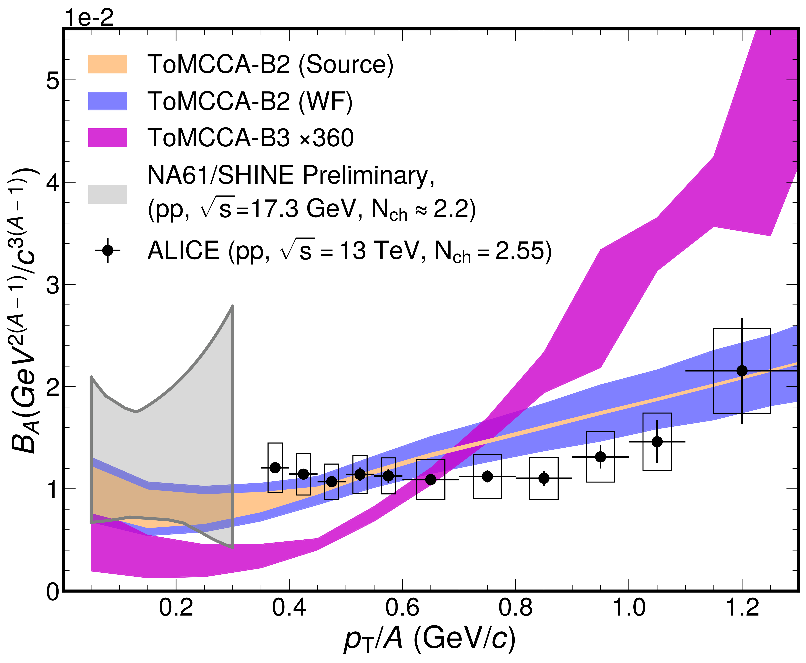
图注：\(\pt-differential\) coalescence parameter $B_A$(\pt) for antideuterons ($B_2$, $A$=2) and antitritons/antihelium-3 ($B_3$, $A$=3). Shaded bands: ToMCCA predictions using NF-constrained CECA source functions (this work). For ($B_2$, the inner orange band shows the propagated source uncertainty and the outer blue band adds the wavefunction systematic (N4LO vs. Argonne $v$18) linearly. For $B_3$ (magenta), only the source uncertainty is shown, as the full calculation employs a single consistent 2+3 body force scheme (Argonne v18 + Urbana IX). The $B_3$ prediction is scaled by a factor of 30 for visual clarity. Filled markers: ALICE $B_2$ measurements~\(\cite{ALICE:2020foi}.\) The gray band represents the 1$\sigma$ confidence interval of $B_2$ estimated from preliminary NA61/SHINE data~\(\cite{Kowalski:2916893, Shukla:2025imi},\) propagated via bootstrap resampling.
对应解读：对应“建议重点查看的图表”第5项和第6项，以及“关键图表逐图导读”图5、图6中关于 \(B_2\)、\(B_3\) 预测带和波函数系统误差的讨论。
入选理由：这张图直接展示本文核心物理结果：\(p_T\) 微分并合参数 \(B_2\) 与 \(B_3\) 的数据约束预测带，并区分了源函数不确定度和反氘波函数系统误差。它最能支撑日报中“不确定度由数量级压缩到几个百分点/约十个百分点、\(B_2\) 还需加入约15%波函数系统误差”的关键结论，也包含与 ALICE 测量和 NA61/SHINE 约束的对比。
来源与置信度：\(arxiv_source\)；high；\(arxiv_source\) / main.tex:figure[2]
Fig01
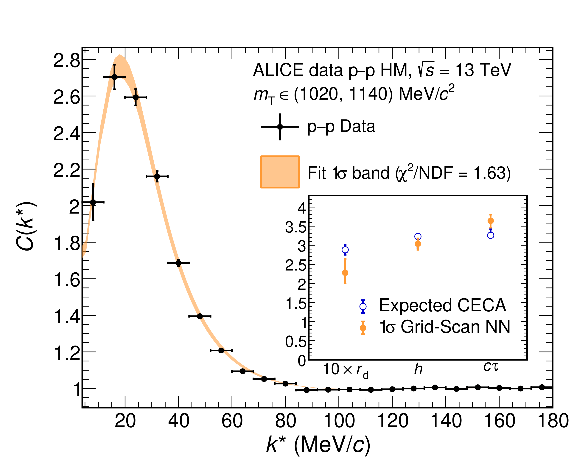
图注：Representative p–p correlation function for the HM multiplicity class and selected \(\mt\) range. Data from ALICE~\(\cite{ALICE:2020ibs}\) (markers); NF surrogate fits (solid lines); uncertainty bands reflect the propagated parameter uncertainties from the grid scan (shaded). The inset shows the CECA parameters of the study~\(\cite{Mihaylov:2023pyl}\) compared to this work.
对应解读：对应“建议重点查看的图表”第1项，以及“关键图表逐图导读”图1和“模型拟合”段落中关于 ALICE 质子—质子关联函数 \(C(q)\) 拟合的讨论。
入选理由：这张图是 femtoscopy 约束链条的起点，展示代表性 ALICE p–p 关联函数数据点、NF surrogate 拟合曲线和不确定度带，可用于检查低相对动量区域的拟合质量。日报强调本文首先拟合的是关联函数而非反核产额，因此该图对理解源函数约束如何进入后续并合参数计算非常关键。
来源与置信度：\(arxiv_source\)；high；\(arxiv_source\) / main.tex:figure[1]
Fig03
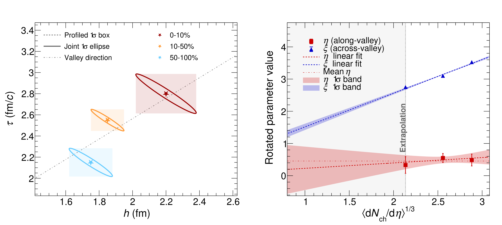
图注：Likelihood eigenmode decomposition and multiplicity scaling. \(\textit{Upper:}\) Joint $1\sigma$ likelihood ellipses and profiled 1D $1\sigma$ error boxes in the unrotated $(h, \tau)$ parameter plane for the three MB classes. The dashed line explicitly tracks the common diagonal valley direction. \(\textit{Lower:}\) Extracted data points and linear fits for the rotated parameters as a function of $\langle\mathrm{d}N_{\mathrm{ch}}/\mathrm{d}\eta\rangle^{1/3}$. The across-valley parameter $\xi$ carries the steep multiplicity-driven scaling, while the along-valley parameter $\eta$ tracks the flat residual along the poorly constrained direction.
对应解读：对应“建议重点查看的图表”第4项，以及“关键图表逐图导读”图4和“模型拟合”段落中关于多重数标度律、参数退化和低多重数外推的讨论。
入选理由：这张图展示似然本征模分解和多重数标度关系，直接揭示 \((h,\tau)\) 参数平面中的退化方向，以及旋转参数随 \(\(\langle\) dN_{ch}/d\eta\
\(angle^{1/3}\)) 的线性标度。它能支撑日报中关于“LHC femtoscopy 数据如何通过标度律传递到宇宙线相关低多重数环境、同时外推是主要局限”的解读。
来源与置信度：\(arxiv_source\)；high；\(arxiv_source\) / main.tex:figure[3]
强相关工作
这篇工作与两类文献直接相连。第一类是宇宙线反氘、反氦作为暗物质间接探测通道的研究，关键词包括“cosmic-ray antideuteron dark matter”、“antihelium coalescence”、“GAPS antideuteron”、“AMS-02 antihelium”。这些工作通常关心暗物质源项、二级背景、宇宙线传播和太阳调制，但过去常把并合参数作为外部不确定输入。本文的贡献是试图用 LHC femtoscopy 数据把这个输入变成数据约束的后验。
第二类是高能碰撞中的轻核/反核产生和 femtoscopy。关键词包括“ALICE proton proton femtoscopy”、“Koonin Pratt source function”、“coalescence model light nuclei”、“CECA source model”。相似工作可能直接拟合轻核产额来抽取 \(B_A\) 或并合动量 \(p_0\)，而本文更强调先用双质子关联函数约束源函数，再预测 \(B_2\) 和 \(B_3\)。这与只调一个经验 \(p_0\) 的做法存在方法论差异，也可能在低多重数外推或三体源相关性方面产生张力。
应特别检索同类和潜在相反观点：有些研究认为事件发生器加事后并合已经足以描述反氘数据，有些则强调热模型在重离子轻核产额中的成功。本文站在 femtoscopy 约束并合源的路线，适合与“thermal model light nuclei production”和“coalescence versus thermal model”一起阅读。
同一事件 / 同类源线索：
相似工作：
（未提供）
基础理论 / 方法工作：
（未提供）
相反观点 / 张力线索：
（未提供）
6. The diffraction-lensing interpretation of GW231123 with astrophysical priors
- 来源：arXiv / astro-ph.HE
- 链接：https://arxiv.org/abs/2607.21834v1
- 作者：Mark Ho-Yeuk Cheung, Digvijay Wadekar, Matias Zaldarriaga, Tejaswi Venumadhav, Javier Roulet, Ajit Kumar Mehta
- 评分：novelty 8/10，importance 8/10，relevance 7/10，final 8.65/10
- 推荐理由：对异常GW事件GW231123的衍射透镜解释进行带天体物理先验的后验赔率检验，涉及中等质量黑洞/暗物质紧致晕和引力波事件解释；结论谨慎但问题重要。
中文题目：用天体物理先验重新评估 GW231123 的衍射透镜解释
做了什么：这篇文章讨论一个很具体但影响很大的问题：如果把 GW231123 当作未被透镜化的双黑洞并合，它需要非常高的质量和自旋，落在现有双黑洞种群中较罕见的位置；但如果信号经过一个红移后质量约为 \(10^3\,M_\odot\) 的孤立透镜发生波动光学衍射透镜化，则可以用较低质量、较低自旋的源来解释。作者不仅比较了波形拟合优劣，还把天体物理先验放进假设检验：源参数先验来自 \(\mathrm{GWTC\mbox{-}5}\) 种群，透镜假设先验来自透镜光学深度。结论是，单看贝叶斯因子会高估透镜解释的可信度；点质量透镜在极宽松的黑洞丰度上限下不能被排除，但若采用星团中间质量黑洞形成模型给出的质量函数，透镜光学深度太小而强烈不利于透镜解释。暗物质晕透镜只有在自相互作用暗物质导致引力热坍缩并形成足够紧致晕时才可能接近可行，标准冷暗物质不够紧致。
为什么重要：这篇文章的重要性在于，它把引力波透镜候选事件的讨论从“这个波形能不能拟合得更好”推进到“宇宙中是否有足够多、足够紧致的透镜让这种事合理发生”。对于 GW231123 这种未透镜解释会推出极端源参数的事件，透镜化确实是一个自然诱惑；但如果不把透镜发生率、黑洞或暗物质晕丰度、探测选择效应一起纳入，容易把罕见波形特征误读为新天体物理。
理论 / 观测 / 仪器方法价值：方法上的价值是明确区分了贝叶斯因子和后验赔率：前者只回答数据相对偏好哪个模型，后者才回答在已有天体物理知识下哪个假设更可信。理论上的价值是把衍射透镜波形、孤立点质量透镜、紧致球对称晕、星团中间质量黑洞质量函数和自相互作用暗物质坍缩联系起来。观测上的价值是给未来引力波透镜候选建立了一个更严格的审查框架：不能只报告波形拟合改善，还要报告透镜光学深度与人口先验。
为什么应该关注：如果你关心双黑洞种群、极端质量和自旋、引力波检验广义相对论、暗物质小尺度结构或中间质量黑洞丰度，这篇都值得看。它提醒我们：一个看似异常的引力波事件可能是源本身异常，也可能是传播路径异常；但这两种解释的先验成本完全不同。未来探测器灵敏度提高后，类似“极端源参数 versus 透镜化”的判别会越来越常见，这篇文章提供了如何避免过度解读单个事件的范例。
展开详细解读：文章讲解、背景、理论、重点章节、图表与相关工作
文章详细讲解
科学问题：GW231123 若按普通未透镜双黑洞并合解释，需要高质量和高自旋的两个前身黑洞。这样的系统在当前双黑洞种群中并非不可能，但会处在种群分布尾部，因而自然引出另一种解释：真实源可能是更常见的较低质量、较低自旋双黑洞，只是传播途中被一个质量约为 \(10^3\,M_\odot\) 的透镜改变了波形。这里的关键不是几何光学中两幅像的简单放大，而是引力波波长与透镜尺度可比时出现的波动光学衍射效应，它会给频域波形乘上一个复数放大因子，从而改变振幅和相位。
作者怎么做：文章把透镜建模为两类孤立天体：点质量透镜，以及球对称紧致暗物质晕。对点质量透镜，核心参数是红移后透镜质量 \(M_{L,z}\)、源与透镜的角向冲量参数，以及源的本征双黑洞参数。对暗物质晕，问题变成密度剖面是否足够紧致，以便在引力波频段产生可观测衍射结构。作者进一步强调，模型比较不能只看透镜波形相对未透镜波形的贝叶斯因子，因为透镜事件本身非常稀有；必须把源种群先验和透镜光学深度作为假设先验的一部分。
关键结果：波形层面，作者发现 GW231123 可被一个较低质量、较低自旋的双黑洞并合加上 \(M_{L,z}\sim 10^3\,M_\odot\) 的衍射透镜更好地拟合。这说明透镜解释在数据似然上有吸引力。但是加入天体物理先验后，图景大幅改变。若仅采用观测约束允许的点质量黑洞丰度上限，透镜光学深度可给出一个不排除透镜的后验赔率上限；若采用星团中形成中间质量黑洞的理论质量函数，预期光学深度很小，后验赔率会强烈反对透镜解释。对于暗物质晕，标准无碰撞冷暗物质不形成足够紧致的小晕；只有低速大截面的自相互作用暗物质触发引力热坍缩后，才可能形成有效透镜，此时后验赔率仍不具有决定性。
局限和下一步：本文结论主要针对孤立透镜。若透镜位于星系、星团或其他外部引力势中，外部会聚和剪切可能改变有效透镜截面、像结构和衍射相位，从而改变光学深度和后验赔率。另一个局限是它依赖 \(\mathrm{GWTC\mbox{-}5}\) 种群先验和中间质量黑洞形成模型；如果未来双黑洞高质量高自旋尾部分布被修正，或中间质量黑洞丰度有新观测约束，结论会相应移动。下一步应包括多事件层级分析、显式选择效应建模、外部势场中的波动光学透镜模板，以及对同类异常事件进行联合赔率评估。
关键结果是怎么做出来的
这篇文章最核心的证据链从 GW231123 的两个竞争解释开始。样本不是一个大目录统计，而是围绕一个命名引力波事件做单事件模型比较：未透镜假设下，数据要求双黑洞源具有较大的红移质量和较高自旋；透镜假设下，源参数回到更常见的较低质量、较低自旋区域，但需要加入一个红移后质量约 \(10^3\,M_\odot\) 的透镜。作者采用的源参数先验不是任意平坦先验，而是来自 \(\mathrm{GWTC\mbox{-}5}\) 推断的双黑洞种群分布，这一步直接影响极端未透镜源的先验惩罚。
统计上，文章特别区分贝叶斯因子和后验赔率。透镜模型因为多了衍射相位和振幅调制，可以在似然上改善对 GW231123 的描述，所以贝叶斯因子可能支持透镜模型；但后验赔率还要乘以假设先验比，其中透镜假设的先验概率由光学深度控制。也就是说，即使 \(p(d|H_{\rm lens})/p(d|H_{\rm unlensed})\) 较大，只要 \(P(H_{\rm lens})/P(H_{\rm unlensed})\) 极小，最终 \(P(H_{\rm lens}|d)/P(H_{\rm unlensed}|d)\) 仍可能很小。
对于点质量透镜，作者考察了两种先验来源。第一种是相当宽松的观测上限：宇宙中某些质量范围黑洞的丰度不能超过已有观测约束，这给透镜光学深度一个上界。在这个最乐观设定下，透镜解释不能被严格排除。第二种是更具天体物理针对性的星团中间质量黑洞形成质量函数；这一模型预言在 \(10^3\,M_\odot\) 左右可作为有效孤立透镜的对象太少，导致光学深度低，后验赔率强烈压低透镜解释。
对于暗物质晕透镜，关键不是总质量够不够，而是中心密度和紧致度是否能让引力波在探测频带产生可分辨的波动光学调制。作者比较标准无碰撞冷暗物质晕和自相互作用暗物质晕：前者剖面太弥散，不能给出所需光学深度；后者若在低速度下有较大散射截面，可经历引力热坍缩，形成高中心密度对象，才有机会作为衍射透镜。该结果由透镜参数后验、光学深度估计、丰度约束图和后验赔率表共同支撑。
稳健性方面，作者从贝叶斯和频率学两条路审查结论。贝叶斯部分关注后验赔率对源种群先验、透镜丰度和透镜质量函数的依赖；频率学部分则问：在给定透镜族群和探测选择条件下，出现一个像 GW231123 这样有利于透镜解释的事件有多常见。文章结论是，从频率学角度看，探测到具有 GW231123 这类性质的透镜事件并不容易。因此，本文不是简单宣称“GW231123 被透镜化了”，而是给出一个条件性很强的判断：波形允许甚至偏好衍射透镜，但现实天体物理先验通常会显著削弱这个解释。
展开背景、理论、公式、模型、章节和图表导读
背景知识
引力波透镜化是强引力透镜在时域和波动光学中的自然延伸。电磁波透镜常讨论多像、时间延迟、放大率和像形变；引力波没有成像能力，透镜效应主要表现为探测器接收波形的振幅和相位改变。如果透镜质量足够大，几何光学近似有效，不同像可表现为相隔较长时间的重复事件；如果透镜质量在中间范围，尤其红移后质量在 \(10^2\) 到 \(10^5\,M_\odot\) 左右，引力波波长和透镜尺度接近，波动光学衍射会在频域波形中留下细致调制。
双黑洞并合参数推断中，质量、自旋和红移之间本来就存在复杂退化。探测器直接测到的是红移后的质量尺度，距离主要通过振幅估计，而自旋会通过相位演化影响波形。若一个事件在未透镜模型下落到高质量高自旋尾部，人们会问它是不是揭示了新的形成通道，例如层级并合、致密星团动力学形成或低金属丰度大质量恒星演化。但传播效应也可能把一个普通事件伪装成异常事件，这正是本文关注 GW231123 的背景。
历史上，强透镜引力波的检索主要有两类：一类寻找相似波形的重复事件，另一类直接在单个事件波形中寻找微透镜或毫透镜导致的衍射结构。前者更适合星系尺度透镜，后者对中间质量黑洞、致密暗物质子结构或坍缩暗物质晕敏感。单事件衍射透镜候选的难点在于，透镜参数增加后模型灵活性增强，容易获得更高似然；但高似然并不自动等于高可信度，因为宇宙中这类透镜可能极少。
为什么现在值得重新看？一方面，引力波事件目录越来越大，极端质量、自旋或波形残差的事件会自然增多；另一方面，\(\mathrm{GWTC\mbox{-}5}\) 这类种群结果让我们能给“未透镜源本身有多罕见”一个数据驱动先验，而不是主观判断。与此同时，中间质量黑洞丰度、原初黑洞约束、自相互作用暗物质小尺度结构等领域也在迅速发展，使透镜假设的先验可以被更物理地量化。
一个常见误区是把“透镜模型拟合得更好”等同于“事件就是透镜化”。在贝叶斯语言中，拟合改善通常体现在贝叶斯因子或最大似然比上；但若透镜假设的先验概率由很小的光学深度控制，后验概率仍可很低。另一个误区是认为任何暗物质晕都能做引力波衍射透镜。实际上，透镜效应取决于投影质量分布在爱因斯坦尺度附近的紧致程度，标准冷暗物质小晕通常太弥散，不能简单等同于点质量透镜。
基础理论 / 方法脉络
从物理图像看，引力波透镜化来自传播路径上的引力势对波前的延迟和聚焦。几何光学极限下，波长远小于透镜的特征尺度，观测波形可看成若干幅像的叠加，每幅像有不同的放大率、到达时间和 Morse 相位。波动光学极限下，不能把传播分解为离散光线，而要把透镜平面上所有路径的相位延迟积分起来；结果是在频域给未透镜波形乘上一个复数放大因子 \(F(f)\)。
本文关心的透镜质量约为 \(M_{L,z}\sim 10^3\,M_\odot\)。这个尺度很特殊：对 \(10\) 到 \(10^3\,\mathrm{Hz}\) 的地面引力波探测频段，维度无关频率参数 \(w\) 可达到可观测范围，衍射效应既不是完全消失，也不是简单几何光学。因此，透镜会改变信号的频率依赖振幅和相位，可能被错误吸收到源质量、自旋、距离或倾角参数中。
点质量透镜是最小模型：只需要红移后透镜质量 \(M_{L,z}\) 和无量纲冲量参数 \(y\) 描述主要透镜效应。球对称暗物质晕则更复杂，因为其透镜势取决于密度剖面、尺度半径、截断半径和中心坍缩程度。对引力波透镜而言，决定性因素不是晕的总质量，而是在爱因斯坦半径附近能否提供足够大的投影势梯度和相位延迟。
观测方法上，作者实际上比较两族频域波形：未透镜波形 \(h_0(f;\theta_s)\)，以及透镜波形 \(F(f;\theta_L)h_0(f;\theta_s)\)。这里 \(\theta_s\) 是源参数，包括质量、自旋、天空位置、距离、倾角等；\(\theta_L\) 是透镜参数。模型比较要在参数空间积分似然，因此更复杂模型会受到 Occam 惩罚；但本文进一步指出，Occam 惩罚仍不够，还必须把透镜事件发生率作为假设先验。
主要退化包括：透镜放大与光度距离退化，透镜相位调制与质量和自旋诱导的相位演化部分退化，冲量参数与透镜质量共同决定调制强度，源种群先验又会影响高质量高自旋解的相对权重。系统误差则来自波形模型不完备、探测器噪声非高斯、校准误差、事件选择效应、透镜质量函数不确定性和暗物质晕结构模型不确定性。
公式与推导
第一步是写出未透镜引力波在频域的观测模型。对给定源参数 \(\theta_s\)，探测器数据可写为
其中 \(d(f)\) 是频域数据，\(h_0(f;\theta_s)\) 是未透镜波形，\(n(f)\) 是噪声。通常假设在一阶近似下噪声为平稳高斯噪声，其功率谱密度为 \(S_n(f)\)。
第二步，透镜化在波动光学中表现为复数放大因子。透镜模型下的波形为
其中 \(F(f;\theta_L)\) 同时包含频率依赖放大和相位延迟，\(\theta_L\) 包括红移后透镜质量 \(M_{L,z}\)、冲量参数 \(y\) 以及可能的晕结构参数。
第三步，点质量透镜的关键无量纲频率可写为
其中 \(G\) 是引力常数，\(c\) 是光速，\(f\) 是观测频率。当 \(w\ll 1\) 时衍射会抹平透镜结构；当 \(w\gg 1\) 时趋向几何光学；本文关注的 \(M_{L,z}\sim 10^3\,M_\odot\) 使地面探测频段可处在过渡区。
第四步，波动光学放大因子可形式化写成透镜平面上的衍射积分：
其中 \(\mathbf{x}\) 是透镜平面无量纲坐标，\(\mathbf{y}\) 是源位置坐标，\(T(\mathbf{x},\mathbf{y})\) 是无量纲到达时间面。这个公式说明观测到的是所有传播路径相干叠加，而不是简单的单一路径放大。
第五步，到达时间面通常写成几何延迟与引力势延迟之和：
其中 \(\psi(\mathbf{x})\) 是二维透镜势，\(\phi_m(\mathbf{y})\) 是选定的相位归一化常数。点质量透镜有特定的 \(\psi\)，而球对称晕的 \(\psi\) 由投影质量密度决定。
第六步，透镜的几何尺度由爱因斯坦角控制：
其中 \(M_L\) 是透镜物理质量，\(D_L\)、\(D_S\)、\(D_{LS}\) 分别是观测者到透镜、观测者到源、透镜到源的角直径距离。无量纲冲量参数 \(y\) 本质上是源在透镜平面上相对 \(\theta_E\) 的偏移。
第七步，给定噪声谱，单个模型的似然常写成
其中内积为
这使读者可以理解透镜调制如何通过降低加权残差提高似然。
第八步，贝叶斯证据是对参数先验加权的似然积分：
透镜与未透镜模型的贝叶斯因子为
它衡量数据对两个模型的相对支持，但还没有包含透镜事件在宇宙中有多稀有。
第九步，真正用于假设判断的是后验赔率：
本文的中心论点就是 \(p(H_L)\) 不能随意设为与 \(p(H_U)\) 同阶，而应由透镜光学深度和选择效应估计。
第十步，孤立透镜的光学深度可概念化写成
其中 \(n(M_L,z_L)\) 是透镜数密度，\(\sigma_{\rm lens}\) 是满足可观测衍射条件的截面。点质量黑洞丰度、星团中间质量黑洞质量函数或紧致暗物质晕模型都会通过 \(n\) 和 \(\sigma_{\rm lens}\) 改变 \(\tau\)，从而直接改变后验赔率。
模型拟合 / 应用方法
本文的拟合对象是 GW231123 的引力波数据，核心比较是未透镜双黑洞波形与衍射透镜双黑洞波形。未透镜模型的拟合参数包括红移质量、质量比、自旋、距离、倾角、天空位置、相位和并合时刻等；透镜模型在此基础上增加 \(M_{L,z}\)、\(y\) 以及点质量或晕结构参数。实际诊断不应只看最大似然点，而要看边缘化后验是否稳定、源参数是否明显从种群尾部移回典型区域、残差是否呈现频率相关系统结构。
参数估计上，证据 \(Z_H\) 由似然在先验下积分给出，因此先验选择非常关键。作者采用 \(\mathrm{GWTC\mbox{-}5}\) 种群分布作为源参数先验，这会降低未透镜高质量高自旋解的先验权重，同时给透镜低质量低自旋解更多先验支持。另一方面，透镜假设增加了参数维度，贝叶斯证据会自动包含一部分 Occam 惩罚；但本文强调这仍不是完整惩罚，因为“发生透镜化”的假设先验还必须由光学深度决定。
主要退化关系包括 \(F(f)\) 的振幅放大与光度距离 \(D_L\) 的退化、透镜相位项与双黑洞质量和自旋相位演化的退化、\(M_{L,z}\) 与 \(y\) 对调制周期和强度的联合退化，以及源红移和质量尺度的退化。对暗物质晕透镜，还会出现晕总质量、尺度半径、中心密度和截断半径之间的退化：相同总质量的弥散晕和紧致晕对引力波的作用可完全不同。
系统误差方面，需要关注探测器校准、噪声非平稳性、波形模型误差、高阶模和进动处理、选择效应以及透镜质量函数假设。若未透镜波形族本身不完备，透镜模型可能只是用额外自由度吸收波形系统误差。若噪声中存在未建模瞬变，频域调制也可能被误判为衍射特征。因此，残差白化图、不同探测器一致性、不同波形模型重复拟合、不同先验下的后验赔率都很重要。
实际应用上，这类拟合框架适用于未来所有单事件微透镜候选。合理流程应是：先报告未透镜和透镜模型的参数后验及证据；再用人口模型计算源先验和透镜光学深度；最后给出后验赔率，而不是只给贝叶斯因子。若多个事件出现相似透镜参数，层级模型可以联合约束透镜族群丰度；若只有一个事件，结论必须保持条件性，尤其不能把先验极低的透镜解释包装成确定发现。
重点章节 / 结果段落怎么读
-
数据和事件动机部分应首先阅读。这里通常会说明 GW231123 在未透镜解释下为何异常：质量、自旋或有效自旋参数落在 \(\mathrm{GWTC\mbox{-}5}\) 种群的哪一端，以及波形残差或后验结构是否提示传播效应。读者应重点看作者是否把“异常”量化为种群先验下的低概率，而不是只用形容词描述。
-
衍射透镜波形方法部分是技术核心。读者应检查作者怎样实现点质量和球对称晕的 \(F(f)\)，是否使用完整波动光学积分或可靠近似，频率范围是否覆盖探测器有效带宽，透镜参数先验是否物理合理。对晕模型尤其要看密度剖面如何进入透镜势，而不是仅看总质量。
-
贝叶斯模型比较部分要和天体物理先验部分一起读。单独的贝叶斯因子只能说明数据拟合偏好；后验赔率还需要 \(p(H_L)/p(H_U)\)。本文的关键贡献正是在这里：源先验来自 \(\mathrm{GWTC\mbox{-}5}\)，透镜先验来自光学深度，二者共同决定最终解释。
-
点质量透镜与中间质量黑洞丰度部分应重点看两种先验情形的差异。宽松观测上限给出的是“最大可行性”而非最可信预测；星团形成模型给出的是更具体的天体物理预测。读者应区分上限、模型预测和实际后验赔率，不要把“不排除”读成“支持”。
-
暗物质晕透镜部分应关注标准冷暗物质与自相互作用暗物质的物理差别。标准冷暗物质晕太弥散，自相互作用暗物质在特定截面和速度依赖下可能引力热坍缩，从而形成紧致透镜。这里的结论对暗物质模型有条件依赖，应看作者是否讨论了外部势场、潮汐作用和晕演化不确定性。
-
讨论和稳健性检验部分给出最终判断。读者应寻找不同先验、不同透镜模型、频率学发生率估计和选择效应修正下结论是否改变。尤其要看作者如何表述“孤立透镜”的限制，以及外部引力势可能怎样改变结果。
建议重点查看的图表
-
未透镜与透镜模型的源参数后验对比图：重点看红移质量、自旋或有效自旋的后验是否从种群尾部移向常见区域，以及置信区间是否显著分离。
-
频域波形或残差图：重点看透镜模型是否在多个探测器中一致降低残差，改善是否集中在少数频点，是否可能由噪声线或非高斯瞬变造成。
-
透镜参数后验图：重点看 \(M_{L,z}\sim 10^3\,M_\odot\) 是否有紧约束，\(M_{L,z}\) 与 \(y\) 是否强退化，后验是否受先验边界控制。
-
贝叶斯因子与后验赔率表：重点区分 \(\mathcal{B}_{L/U}\) 和 \(\mathcal{O}_{L/U}\)，看加入光学深度后结论如何变化。
-
点质量透镜光学深度或丰度约束图：重点看观测上限与星团中间质量黑洞模型预测之间的差距，以及 GW231123 所需透镜质量区域。
-
暗物质晕紧致度或光学深度图：重点看标准冷暗物质晕是否远离所需区域，自相互作用暗物质坍缩晕是否进入可行区域。
-
频率学发生率或模拟检验图：重点看在假设透镜族群下，产生 GW231123 类事件的概率是否很小，以及该概率对选择效应是否敏感。
关键图表逐图导读
图 1：建议把它作为事件异常性的入口图来读。横轴通常可能是质量参数，如总质量、啁啾质量或主黑洞质量；纵轴可能是自旋、有效自旋或种群概率密度。数据点或等高线应比较 GW231123 在未透镜假设下的位置与 \(\mathrm{GWTC\mbox{-}5}\) 双黑洞种群分布。读图陷阱是不要把二维投影中的尾部位置直接等同于完整多维先验概率，真正判断要看边缘化证据。
图 2：若文章给出未透镜和透镜波形的频域对比，应重点看横轴频率 \(f\)，纵轴为白化残差、振幅谱或相位差。透镜模型线若显示频率相关振荡，就是衍射透镜的直接波形特征。读图时要检查改善是否跨探测器一致，是否与探测器灵敏频带重合；如果改善主要出现在低信噪比频段，证据价值会弱得多。
图 3：透镜参数角图应关注 \(M_{L,z}\) 与 \(y\) 的二维后验。若等高线闭合且远离先验边界，说明数据确实约束了透镜尺度；若后验沿着先验边界延伸，则模型偏好可能只是自由度效应。对暗物质晕模型，还应看中心密度或尺度半径与质量的联合约束是否指向物理可实现的紧致晕。
图 4：贝叶斯因子和后验赔率的对比图或表是本文最关键的读图对象。横轴可能是透镜丰度假设或质量函数模型，纵轴可能是 \(\log \mathcal{B}_{L/U}\)、\(\log \mathcal{O}_{L/U}\) 或光学深度 \(\tau\)。主要结论应是：数据层面的支持在乘上透镜发生率先验后可被显著削弱。读图陷阱是把 \(\mathcal{B}_{L/U}\) 的正值误读成最终支持透镜。
图 5：点质量透镜丰度约束图通常会把允许的黑洞暗物质占比或数密度上限与星团中间质量黑洞模型预测放在同一质量轴上。应重点看 \(M_{L,z}\sim 10^3\,M_\odot\) 附近的可用丰度是否足以给出所需 \(\tau\)。若观测上限高于需求，只说明没有排除；若实际形成模型远低于需求，则说明自然性差。
图 6：暗物质晕结果图应关注紧致度判据。横轴可能是晕质量或尺度半径，纵轴可能是中心密度、坍缩时间或透镜截面。标准冷暗物质曲线若位于不可探测区域，而自相互作用暗物质坍缩模型进入可探测区，就支撑作者关于暗物质模型依赖性的结论。读图时要注意这些曲线往往依赖散射截面、速度依赖和晕形成红移。
图 7：若有频率学模拟或预测发生率图，应查看横轴为观测时间、探测阈值或透镜丰度，纵轴为预期事件数或 \(p\)-值。关键不是平均能否探测到某类透镜，而是能否合理探测到“像 GW231123 这样参数和拟合改善都相似”的事件。读图陷阱是把总透镜事件率和特定候选事件率混为一谈。
论文原图 / 可嵌入图片
Fig02
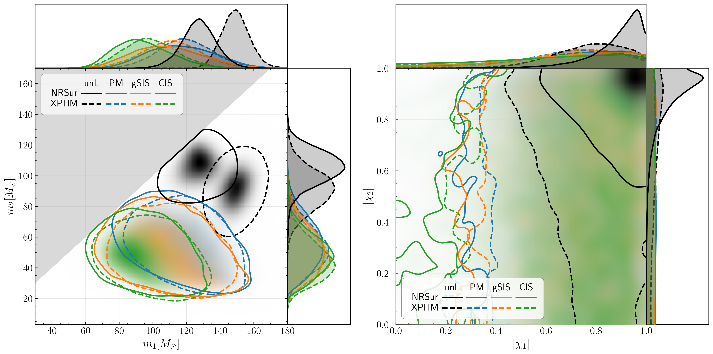
图注：The posterior probability distribution of the source BBH parameters when the unlensed (unL, black), PM (blue), gSIS (orange) and CIS (green) models are applied to GW231123, using the \(\texttt{NRSur7dq4}\) (NRSur, solid contours) and \(\texttt{IMRPhenomXPHM-SpinTaylor}\) (XPHM, dashed contours) waveform models to model the source gravitational waveform. \(\textit{Left:}\) the posterior distribution of the source-frame primary mass $m_1$ and secondary mass $m_2$. The gray region ($m_1 < m_2$) is forbidden by the convention that $m_1$ is the more massive component. \(\textit{Right:}\) the posterior distribution of the magnitude of the spin of the primary $|\chi_1|$ and secondary $|\chi_2|$ black hole. The posteriors shift to lower masses and lower spins and the two waveform models give compatible results when a lens model is applied.
对应解读：“建议重点查看的图表”第1项；“关键图表逐图导读”图1；模型拟合段落中未透镜与透镜源参数后验对比。
入选理由：该图直接比较未透镜、点质量透镜、gSIS 和 CIS 模型下源双黑洞的质量与自旋后验，明确显示透镜模型把 GW231123 从高质量、高自旋区域移向较低质量、较低自旋区域，是理解本文核心物理动机和种群先验作用的入口图。
来源与置信度：\(arxiv_source\)；high；\(arxiv_source\) / GW231123_lensing.tex:figure[2]
Fig01
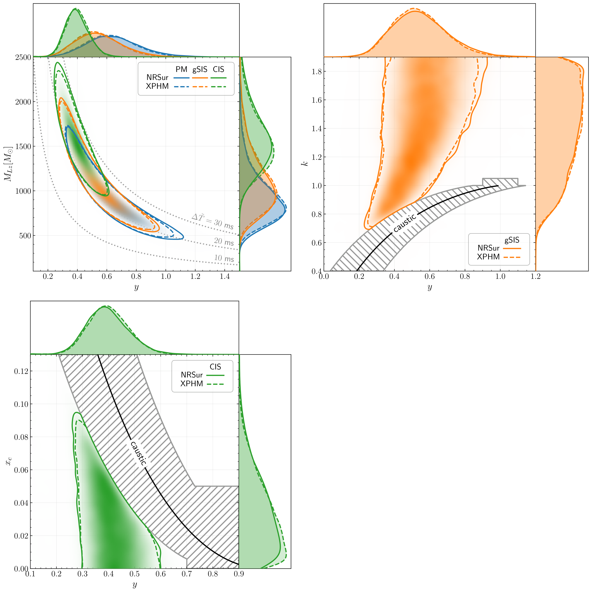
图注：The posterior probability distribution of the lens parameters when the point mass (PM, blue), generalized singular isothermal sphere (gSIS, orange) and cored isothermal sphere (CIS, green) models are applied to GW231123, using the \(\texttt{NRSur7dq4}\) (NRSur, solid contours) and \(\texttt{IMRPhenomXPHM-SpinTaylor}\) (XPHM, dashed contours) waveform models to model the source gravitational waveform. \(\textit{Top:}\) the posterior in the redshifted lens mass ($M_{Lz}$) vs dimensionless impact parameter ($y$) plane. The shape of the posterior approximately follows lines of constant effective time delay between the two dominant images $\Delta \tilde{T} = 8 M_{Lz} y$ (gray dotted lines). \(\textit{Bottom:}\) The posterior distribution of the additional lens parameters: density profile power-law slope $k$ (see Eq.~\eqref{eq:gSIS_profile}) for the gSIS model (left), and the dimensionless core radius $x_c$ (see Eq.~\eqref{eq:dim_core_radius}) for the CIS model (right) vs $y$. We excise the region near the caustic curves (gray hatches) by setting the prior probability to zero because our lensing amplification factor computation is not accurate in those regimes.
对应解读：“建议重点查看的图表”第3项；“关键图表逐图导读”图3；模型拟合段落中关于 \(M_{L,z}\)、y 及晕结构参数退化的讨论。
入选理由：该图给出点质量、gSIS 和 CIS 透镜参数后验，尤其是 \(M_{Lz}\)–y 平面及其沿等有效时延线的退化关系，正好对应日报要求检查的 \(M_{L,z}\\sim10^3\) \(M_\\odot\) 约束、冲量参数退化和先验边界影响。
来源与置信度：\(arxiv_source\)；high；\(arxiv_source\) / GW231123_lensing.tex:figure[1]
Fig07
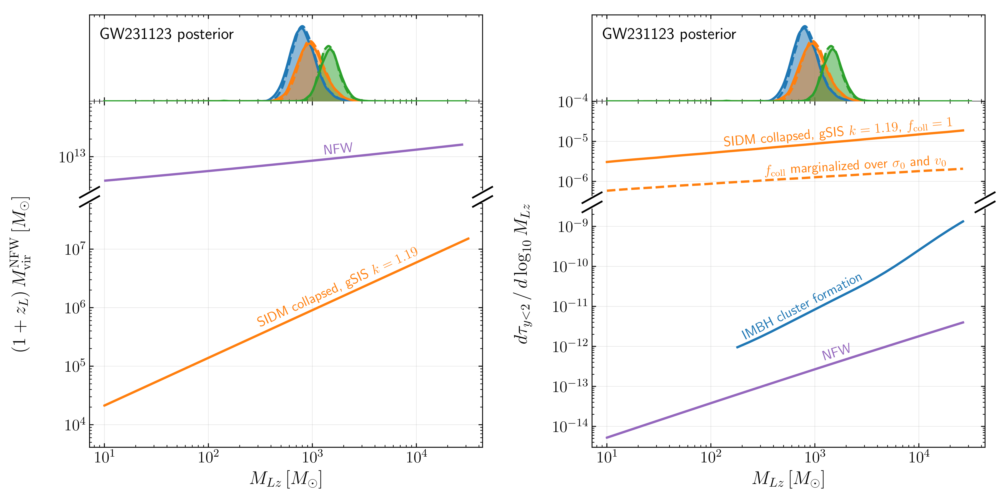
图注：Relationship between the virial mass $M^{\rm NFW}_{\rm vir}$, redshifted lens mass $M_{Lz}$, and the differential optical depth $d\tau_{y<2}/d\log_{10}M_{Lz}$, for halos in collisionless CDM (NFW, purple curves) and those gravothermally collapsed in SIDM (orange curves). We also show the differential optical depth for IMBH lenses formed in star clusters (right panel, blue curve). \(\textit{Left:}\) $(1 + z_L)M^{\rm NFW}_{\rm vir}$ as a function of $M_{Lz}$, fixing $z_L = 0.4$ and $z_S = 0.8$. For a regular NFW halo in collisionless CDM, $M_{Lz}$ is orders of magnitude smaller than $M^{\rm NFW}_{\rm vir}$ because the inner profile $\rho(r) \sim r^{-1}$ is gentle. For a halo in SIDM that started as an NFW halo with $M^{\rm NFW}_{\rm vir}$ and later forms a collapsed core, $M_{Lz}$ is much closer to $M^{\rm NFW}_{\rm vir}$ because the inner profile $\rho(r)\sim r^{-2.19}$ is steep, allowing more effective mass to contribute to the lensing effects. These collapsed halos can be modeled by the gSIS profile with $k = 1.19$ for lensing purposes. \(\textit{Right:}\) The differential optical depth $d\tau_{y<2}/d\log_{10}M_{Lz}$ as a function of $M_{Lz}$ for a source at redshift $z_S = 0.8$, with the lens redshift integrated over $0 < z_L < z_S$. For IMBH lenses formed in star clusters, the differential optical depth is low, $\lesssim 10^{-9}$. For the collisionless CDM case, as $M^{\rm NFW}_{\rm vir}$ is higher, the abundance of these halos is lower according to the halo mass function, which along with the small Jacobian $dM^{\rm NFW}_{\rm vir}/dM_{Lz}$ gives rise to an even lower optical depth. For the SIDM case, we show the differential optical depth if we assume that all halos would collapse ($f_{\rm coll} = 1$, solid orange line) and if we compute $f_{\rm coll}$ by marginalizing over the parameters governing the functional form of $\sigma(v)$ (dashed orange line), both orders of magnitude higher than the IMBH and NFW cases.
对应解读：“建议重点查看的图表”第5、6项；“关键图表逐图导读”图5、图6；详细解读中关于 IMBH、CDM 与 SIDM 光学深度差异的核心结论。
入选理由：该图同时展示 IMBH 星团形成通道、无碰撞 CDM NFW 晕和 SIDM 坍缩晕的 \(M_{Lz}\) 映射及微分光学深度，最直接支撑本文关于星团 IMBH 光学深度过低、标准 CDM 晕不够紧致、SIDM 坍缩晕可能进入可行区域的主要天体物理判断。
来源与置信度：\(arxiv_source\)；high；\(arxiv_source\) / GW231123_lensing.tex:figure[7]
Fig06
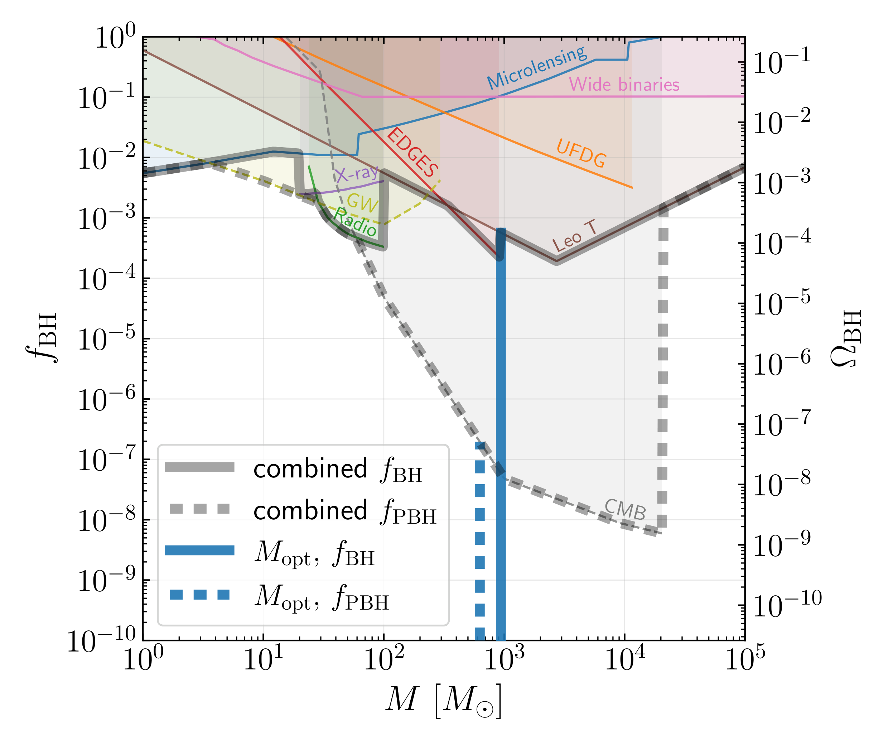
图注：Observational constraints on the fraction of dark matter attributable to general BHs or PBHs, $f_{\rm BH}(M)$, as a function of the black hole mass $M$, assuming a monochromatic mass function. The thin curves show the upper limit from individual channels, with the region above each curve excluded. The PBH-only channels (CMB accretion and the GW merger rate) are drawn dashed, while the remaining channels apply to BHs of any origin. The two thick gray curves are the combined envelopes (the channel-wise minimum) that we feed into the optical depth calculation: the solid curve ($f_{\rm BH}$) drops the PBH-only bounds and represents the full BH population, while the dashed curve ($f_{\rm PBH}$) includes them and represents the PBH-only case. The vertical blue lines mark the optimal lens mass $M_{\rm opt}$ that maximizes the posterior odds under each envelope for the \(\texttt{NRSur7dq4}\) posterior (see Sec.~\ref{subsec:PM_astro}). The right axis shows the corresponding dark matter density fraction $\Omega_{\rm BH} = f_{\rm BH}\,\Omega_{\rm DM}$. The constraint compilation is taken from Ref.~\(\cite{Carr:2021bzv}\) and references therein.
对应解读：“建议重点查看的图表”第5项；“关键图表逐图导读”图5；详细解读中关于点质量黑洞丰度上限与后验赔率上限的讨论。
入选理由：该图把不同观测通道对黑洞或原初黑洞暗物质占比 \(f_{BH}(M)\) 的约束放在同一质量轴上，并标出最优透镜质量位置，是判断 \(M_{L,z}\\sim10^3\) \(M_\\odot\) 点质量透镜是否被现有丰度约束排除的关键图。
来源与置信度：\(arxiv_source\)；high；\(arxiv_source\) / GW231123_lensing.tex:figure[6]
Fig03
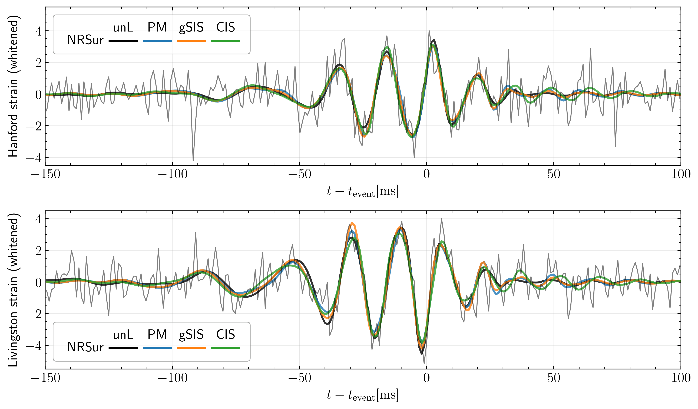
图注：The maximum likelihood whitened time-domain waveform of the unlensed (unL, black), PM (blue), gSIS (orange) and CIS (green) analyses using the \(\texttt{NRSur7dq4}\) (NRSur) waveform model superimposed on the whitened detector data strain (gray) of the LIGO Hanford (top) and Livingston (bottom) detectors for GW231123. The lensed and unlensed waveforms deviate visually at around $t - t_{\rm event} \gtrsim 20 \, \rm ms$, consistent with the rest of the literature studying this event. We do not show the \(\texttt{IMRPhenomXPHM-SpinTaylor}\) waveforms to avoid clutter.
对应解读：“建议重点查看的图表”第2项；“关键图表逐图导读”图2；模型拟合段落中关于不同探测器波形一致性和残差结构的讨论。
入选理由：虽然它是白化时域波形而非频域残差图，但它直接把未透镜与三种透镜模型的最大似然波形叠加到 Hanford 和 Livingston 数据上，能检查透镜模型改善是否在两个探测器中表现一致，以及差异是否集中在事件后约 20 ms 的关键时段。
来源与置信度：\(arxiv_source\)；high；\(arxiv_source\) / GW231123_lensing.tex:figure[3]
Fig09
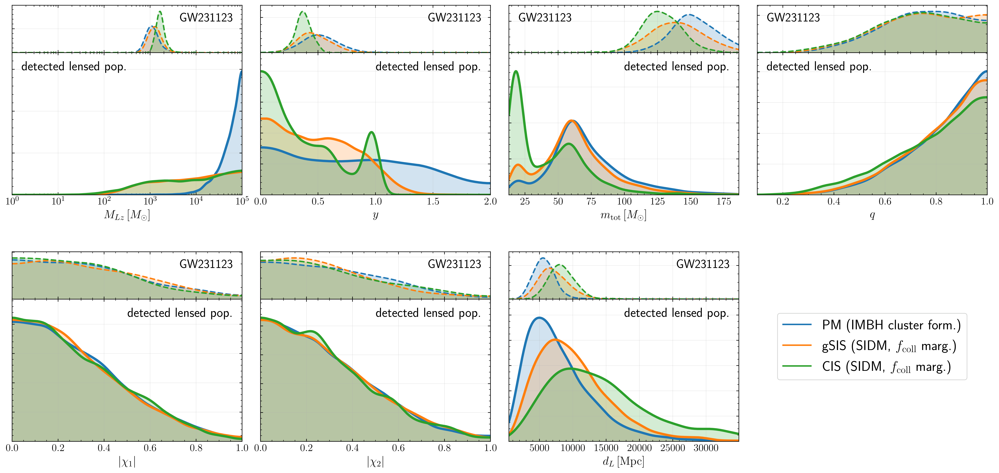
图注：The astrophysically reweighted posterior of lensed GW231123 compared to the detected population of lensed events for the PM (IMBH star cluster formation prior), gSIS and CIS (both SIDM collapsed halo prior marginalized over $f_{\rm coll}$) models. The source parameter prior is always chosen to be the GWTC-5 population distribution. \(\textit{Top panels:}\) The posterior of lensed GW231123 reweighted to the corresponding astrophysical priors. \(\textit{Bottom panels:}\) The normalized detected lensed population simulated assuming that the intrinsic population follows the astrophysical priors we imposed. Lensed GW231123 is in the tail of the population distribution of $m_{\rm tot}$ for all lens models, and in the tail of $M_{Lz}$ for the PM model with the IMBH cluster formation channel prior.
对应解读：“建议重点查看的图表”第7项；“关键图表逐图导读”图7；详细解读中关于频率学发生率和 GW231123 类事件罕见性的讨论。
入选理由：该图比较天体物理先验重加权后的 GW231123 透镜后验与模拟探测到的透镜事件总体分布，显示该事件在总质量以及部分模型的透镜质量上处于族群尾部，直接支撑作者从频率学角度认为类似事件不太可能的结论。
来源与置信度：\(arxiv_source\)；high；\(arxiv_source\) / GW231123_lensing.tex:figure[9]
强相关工作
这篇工作与两条文献线直接相关。第一条是引力波强透镜和微透镜检索，包括重复事件搜索、单事件衍射调制搜索、以及透镜化对双黑洞参数推断的影响。建议检索关键词包括 “gravitational wave lensing wave optics”, “GW microlensing diffraction”, “lensed gravitational waves Bayesian model selection”, “LIGO Virgo KAGRA lensing search”。同类工作通常会讨论点质量透镜、星系透镜和子结构透镜，但本文的突出点是把后验赔率中的天体物理先验放在核心位置。
第二条是中间质量黑洞和暗物质小尺度结构。点质量透镜可对应中间质量黑洞或原初黑洞，但二者丰度先验完全不同；暗物质晕透镜则牵涉标准冷暗物质小晕是否足够紧致，以及自相互作用暗物质是否能通过引力热坍缩形成高密度核心。建议检索关键词包括 “intermediate mass black hole mass function star clusters”, “primordial black hole constraints microlensing”, “self interacting dark matter gravothermal collapse compact halo”, “dark matter halo gravitational wave lensing”。
对于 GW231123 这个命名事件，读者应优先查找同一事件的发现论文、参数估计论文、任何 LIGO/Virgo/KAGRA 候选事件公告或目录条目，以及其他独立团队的透镜或未透镜解释。由于本文给出的事件编号来自未来目录语境，若无法在公开目录中确认，应以 arXiv 编号和事件名联合检索 “GW231123 diffraction lensing”, “GW231123 high spin high mass”, “GWTC-5 GW231123”。
同一事件 / 同类源线索：
相似工作：
基础理论 / 方法工作：
- https://arxiv.org/abs/astro-ph/0106199
- https://arxiv.org/abs/1712.09875
- https://arxiv.org/abs/2004.08342
相反观点 / 张力线索：
7. 4th TDAMM Workshop White Paper
- 来源：arXiv / astro-ph.HE
- 链接：https://arxiv.org/abs/2607.22404v1
- 作者：Daniel Kocevski, Raffaella Margutti, Michael Coughlin, Christopher Fryer, Kate Alexander, Igor Lorenzo Andreoni, Jean-Luc Atteia, Elias Aydi
- 评分：novelty 5/10，importance 8/10，relevance 9/10，final 8.45/10
- 推荐理由：TDAMM白皮书本身新发现有限，但覆盖GRB、TDE、XRB、磁星、GW、高能中微子源等，并聚焦警报、快速跟进和多信使基础设施，对高能瞬变与伽马射线/中微子天文学社区有直接实用价值。
中文题目：第四届时域与多信使天体物理研讨会白皮书
做了什么：这篇白皮书不是报告一个单一新源，而是在盘点未来几年时域与多信使天体物理（TDAMM）会遇到的系统性瓶颈：瞬变源、引力波、中微子、宇宙线和全波段电磁触发会迅速增多，但真正限制科学产出的将是告警能否互通、目标能否快速排序、望远镜能否跨机构协同，以及数据和后续观测能否被统一记录。作者总结第四届 TDAMM Workshop 的讨论，提出三类核心问题：告警和协调基础设施不够可扩展、政策和资源分配机制不适合罕见快速事件、若干关键高能和光谱能力可能在未来断档。文章还给出面向伽马暴、潮汐瓦解事件、X 射线双星、新星、超新星、磁星、致密双星并合和高能中微子源的社区观测计划框架。
为什么重要：未来的瓶颈不再只是“能不能发现瞬变源”，而是“发现之后能不能在正确时间用正确设施做正确观测”。Rubin、Roman、下一代引力波运行、IceCube-Gen2 和多种高能监测设备会让候选源数量和告警类型爆炸式增长；如果没有标准化元数据、告警经纪人、跨设施排班和统一后续观测库，大量罕见事件会在组织层面被错过。
理论 / 观测 / 仪器方法价值：这篇文章的价值主要在方法和基础设施层面：它把 TDAMM 的科学问题翻译成可执行的告警分发、优先级排序、观测协同、数据发布和治理机制。对理论研究者，它说明未来模型约束最依赖哪些时间尺度和波段；对观测者，它列出哪些快速响应、光谱、高能覆盖能力不可替代；对仪器和项目规划者，它给出一份跨设施接口和政策需求清单。
为什么应该关注：如果你研究瞬变源、高能天体物理、引力波对应体或中微子源，这篇白皮书直接关系到未来数据是否可用、目标是否会被及时观测、以及你的模型能否被多信使数据真正检验。它不是一篇“愿景文章”那么简单，而是在指出一个现实问题：单个望远镜或单个合作组的最优策略，未必等于整个 TDAMM 生态的最优策略。
展开详细解读：文章讲解、背景、理论、重点章节、图表与相关工作
文章详细讲解
科学问题：TDAMM 的核心科学正在从“发现新型瞬变源”转向“在有限资源下最大化多信使信息量”。一个伽马暴、双中子星并合、潮汐瓦解事件或高能中微子候选源的科学价值，常常取决于分钟到天的响应速度、从高能到射电的连续覆盖、以及是否能获得红移、宿主星系和环境信息。白皮书指出，未来几年告警率会大幅增加，事件类别也会更混杂，单靠人工邮件、临时 Slack 频道、各项目内部表格和非标准化目标清单，已经无法支撑稀有事件科学。
作者怎么做：文章综合第四届 TDAMM Workshop 的社区讨论，把问题拆成三个层级。第一是技术基础设施，包括告警分发、broker、目标优先级算法、标准化观测台站元数据、跨设施协调平台和统一 follow-up repository。第二是政策和治理，包括联合观测机会、快速触发权限、数据释放规则、稀有事件的社区预案、以及跨项目经费支持。第三是能力规划，包括高能全天监测、快速反应紫外/X 射线、地基和空间光谱、射电监测、以及能否在未来十年避免关键设施断档。
关键结果：白皮书最明确的判断是，TDAMM 的短板不是某一个波段或某一种信使，而是“端到端链路”的不连续。发现设施、告警平台、broker、望远镜排班、观测执行、数据归档、模型解释之间缺少统一接口。作者提出社区观测计划框架：对罕见高价值事件预先定义触发条件、优先级、参与设施、最小观测集、数据释放节奏和治理机制，并要求这些计划定期修订、透明执行、在触发后尽快公开核心数据。
局限和下一步：这是一篇白皮书，因此它不提供某个算法的最终性能评估，也不比较具体平台的完整成本收益。其局限在于许多建议仍停留在社区治理和资源配置层面，真正落地需要机构承诺、经费机制和跨合作组数据政策。下一步应是把白皮书中的框架转化为可测试的 operational metrics，例如告警延迟、目标排序准确率、成功光谱获取率、跨设施观测完成率、公开数据延迟和罕见事件漏失率，并在真实运行季或模拟挑战中检验。
关键结果是怎么做出来的
本文最重要的结果不是一个数值发现，而是一条证据链：未来 TDAMM 事件流会显著增大，而目前社区的后续观测能力、调度规则和数据基础设施没有按同样速度扩展。作者基于 workshop 中来自高能、光学、射电、引力波、中微子和理论建模社群的输入，梳理各类事件的响应窗口和必要观测量。样本不是传统意义上的天体样本，而是“事件类别和设施生态”的样本，包括伽马暴、潮汐瓦解事件、X 射线双星、新星、超新星、磁星、致密双星并合和高能中微子源。
白皮书的核心判断可理解为一种系统工程意义上的显著性：如果告警数量、定位面积和候选源复杂度上升，而 follow-up 资源近似固定，则罕见事件的有效观测完备度会下降。文章没有给出单一的统计显著性值，例如 \(p\)-value 或 \(\sigma\)，但它通过跨类别需求表和观测策略对照，说明若缺少可互操作的告警与观测记录，许多关键诊断量会系统性缺失，例如早期光谱、紫外/X 射线光变、高能 prompt 覆盖、射电余辉演化和宿主星系红移。
支撑结论的图表或结构应重点看三类材料：第一，近未来发现设施和信使通道的 landscape；第二，各类瞬变源所需的时间尺度、波段和触发策略；第三，作者提出的社区观测计划框架。读者应关注这些表格如何把科学目标映射到实际观测动作，例如从“识别喷流结构”映射到“早期 X 射线和射电采样”，从“确认双中子星并合对应体”映射到“宽场定位、快速光谱和近红外追踪”。
系统误差在这里主要不是探测器噪声，而是 operational selection effects。包括：只有亮源或定位好的源被 follow-up；南北半球资源不均衡；公开告警和私有告警的延迟不同；光谱资源偏向低红移或高亮度候选体；高能监测缺口导致 prompt emission 不完整；以及不同 broker 使用不同分类器造成目标排序不一致。白皮书强调，统一 repository 和标准化元数据能让这些偏差至少被记录、建模和校正。
稳健性检验的对应形式应是社区演练和运行季回放，而不是传统论文中的单一附录检验。一个合理的检验包括：用历史引力波或伽马暴事件流重放告警，比较不同 broker 和调度平台的观测完成率；用模拟 Rubin 告警流注入罕见事件，测试优先级算法是否能保留低概率高价值目标；统计实际触发中从告警到首个光谱、首个 X 射线观测、首个射电观测的延迟分布。
展开背景、理论、公式、模型、章节和图表导读
背景知识
TDAMM 指的是把时域天文学与多信使天文学合在一起看：同一个天体事件可能产生电磁辐射、引力波、中微子和宇宙线，而这些信号的时间尺度、定位精度和可观测窗口差异很大。典型例子包括双中子星并合产生的引力波、短伽马暴和千新星，核心坍缩超新星可能伴随中微子和引力波，活动星系核或潮汐瓦解事件可能与高能中微子相关。
历史上，时域天文学的组织方式很大程度上由单一波段驱动：光学巡天发现超新星，高能卫星触发伽马暴，射电阵列跟踪余辉，X 射线望远镜定位高能瞬变。多信使时代改变了这一点，因为第一触发可能来自定位很差的引力波事件，也可能来自角分辨率有限的高能中微子告警，还可能来自海量光学瞬变中的一个异常对象。单一设施的内部优化无法解决跨信使关联问题。
现在重新讨论 TDAMM 基础设施特别重要，是因为未来几年发现端会继续增强。宽场光学巡天会产生海量候选体，引力波探测器灵敏度提升会增加并合告警，中微子和甚高能伽马设施会扩大高能瞬变搜索空间。相比之下，快速光谱、紫外、X 射线和部分高能全天监测能力并没有等比例增长，甚至可能出现任务寿命和后继任务之间的空档。
该领域常见误区之一是把“有告警系统”误认为“有协调系统”。告警只告诉你某件事可能发生了；协调还要求知道谁能观测、何时能观测、观测约束是什么、数据何时公开、已有观测是否足够、下一步最有信息量的动作是什么。另一个误区是只关注最快响应，而忽略长期、多波段和光谱完备性；许多物理结论需要从分钟、小时、天到月尺度的连续数据共同得到。
基础理论 / 方法脉络
从物理图像看，一个瞬变源释放能量后，不同信使探测的是不同区域和不同过程。伽马射线可能来自相对论喷流的 prompt emission，X 射线和射电可来自外激波余辉，光学/近红外可来自放射性衰变驱动的抛射物，极高能中微子可能来自强子加速和光强子相互作用，引力波则直接追踪致密天体动力学。TDAMM 的科学价值来自这些信息的互补性。
观测上，关键量通常包括事件发生时间 \(t_0\)、天空定位概率图 \(P(\Omega)\)、距离或红移约束、光变曲线 (F_\
u(t))、谱能分布、光谱线速度、极化、以及高能或非电磁信使的置信度。每一项量都有时间依赖：早期光谱能诊断爆炸外层或喷流-环境相互作用，晚期射电能约束外流能量和介质密度，X 射线平台期或衰减率可区分中心引擎模型。
本文的模型假设不是单一辐射模型，而是一个事件响应模型：一个告警进入系统后，需要被分类、排序、匹配可用设施、执行观测并反馈结果。这个链路中的每一步都可以写成概率更新或决策问题。候选源的后验概率取决于触发信使、天空位置、时间演化、颜色、宿主星系、历史变源信息和已有 follow-up 结果。
常见退化和系统误差来自观测选择函数。一个事件没有光谱，可能是因为它物理上暗，也可能是因为天气、月相、目标可见性、南北半球覆盖、私有排班或告警延迟。一个候选源被 broker 排到后面，不一定代表它科学价值低，也可能是训练集缺少类似罕见事件。白皮书强调标准化元数据和统一后续观测库，正是为了把这些非天体物理偏差显式记录下来。
公式与推导
可以把 TDAMM 的基本问题从事件率写起。若某类瞬变的体积发生率为 \(R(z)\)，探测选择函数为 \(S(z,\theta)\)，其中 \(z\) 是红移、\(\theta\) 表示亮度、取向、环境等内禀参数，则期望发现数为
这里 \(T\) 是运行时间，\({\rm d}V_c\) 是共动体积元。该式说明发现数增加并不等于有用样本增加，因为 follow-up 还有另一个选择函数。
后续观测的有效样本可写为
其中 \(S_{\rm trig}\) 是触发选择函数，\(S_{\rm follow}\) 是后续观测选择函数，依赖天空位置 \(\Omega\)、时间 \(t\)、设施可见性和资源分配。白皮书关心的正是如何提高并记录 \(S_{\rm follow}\)。
对于一个候选源的多信使关联，可用贝叶斯形式表示为
其中 \(H_k\) 是某种物理假设，例如双中子星并合对应体、潮汐瓦解事件或活动星系核耀发，\(D\) 是告警、光变、颜色、宿主和高能信息。broker 的分类和目标排序本质上是在近似计算这个后验。
若告警给出天空概率图 \(P_{\rm GW}(\Omega)\)，而望远镜一次观测的覆盖区域为 \(A_i\)，则第 \(i\) 次指向的定位覆盖概率为
其中 \(\epsilon_i\) 包括深度、天气、月光、银河消光和图像质量。最大化 \(\sum_i C_i\) 只是第一步；真正的目标还要考虑候选源可分类性。
一个随时间衰减的瞬变通量可近似写为
其中 \(F_{\}\)
u,0}) 是参考时刻通量，\(t_0\) 是爆发时刻，\(t_{\rm ref}\) 是参考时间，\(\alpha\) 是衰减指数。该式说明响应延迟会非线性降低信噪比，特别是 \(\alpha\) 较大的伽马暴余辉和早期 kilonova。
观测信噪比可用简化 CCD 或计数统计写成
其中 \(A_{\rm eff}\) 是有效面积，\(t_{\rm exp}\) 是曝光时间，\(B\) 是背景，\(\sigma_{\rm read}\) 是读出噪声。协调平台需要知道这些设施元数据，才能判断某个望远镜是否真的能完成科学目标。
若把一次 follow-up 决策写成效用最大化，可定义
其中 \(P_i\) 是目标属于高价值类别的概率，\(I_i\) 是该观测带来的信息增益，\(Q_i\) 是可执行性或数据质量因子，\(C_i^{\rm cost}\) 是机会成本。白皮书提出的社区观测计划就是把 \(U_i\) 的若干部分预先共识化，避免触发后临时争论。
信息增益可以用熵的减少表示：
其中 \(\boldsymbol{\phi}\) 是模型参数，\(D\) 是已有数据，\(d_i\) 是计划中的新观测。该式把“下一次观测最该做什么”从经验判断转化为可计算目标。
运行效果可用延迟分布和完备度诊断。若 \(\Delta t=t_{\rm obs}-t_{\rm alert}\)，则在阈值 \(\Delta t_*\) 内完成观测的比例为
这里 \(\mathbf{1}\) 是指示函数。白皮书建议的基础设施投资，最终应通过类似 \(f_{\rm rapid}\)、光谱完备度和公开数据延迟等指标来验收。
模型拟合 / 应用方法
这类白皮书本身不做传统参数拟合，但它隐含的实际工作流高度依赖模型拟合。对单个瞬变源，常见拟合量包括爆发时间、距离、消光、喷流能量、介质密度、抛射物质量、速度、温度演化、光谱线速度和余辉衰减指数。多信使场景下，还要联合天空定位概率、距离后验、宿主星系概率和非电磁信使显著性。
统计上，光变和光谱通常用高斯似然或泊松似然；高能计数数据和中微子候选常用泊松点过程或非齐次背景模型；引力波对应体搜索还要把天空概率图、星系目录和望远镜覆盖函数结合起来。一个统一 follow-up repository 的价值在于让非探测、上限、失败观测和观测约束也进入似然，而不是只保留成功探测点。
主要退化关系包括距离—亮度退化、消光—温度退化、喷流能量—环境密度退化、观测角—洛伦兹因子退化、以及宿主关联概率—天空定位面积退化。若早期数据缺失，这些退化会显著放大。例如 kilonova 的蓝成分若没有早期紫外/蓝光覆盖，就很难区分低不透明度抛射物和观测选择造成的颜色偏差。
模型失败的常见方式也和白皮书主题直接相关。分类器可能在训练集中常见的超新星上表现很好，却漏掉罕见快速蓝色光学瞬变；余辉模型可能给出漂亮拟合，但忽略了只有亮余辉被跟踪的选择效应；多信使关联可能看似显著，却未充分计入试验因子和候选源查找窗口。标准化元数据、公开上限和完整触发记录能帮助后验分析者识别这些失败模式。
在实际应用中，社区观测计划可看作拟合前的实验设计。它决定哪些数据点会存在、哪些参数能被约束、哪些模型可被区分。一个好的 TDAMM 策略不只是追求更多观测，而是用有限资源最大化对关键参数的 Fisher 信息或后验收缩，例如优先获得早期光谱来打破分类退化，或优先做晚期射电来约束外流动能。
重点章节 / 结果段落怎么读
-
近未来发现 landscape：读者应先看作者如何描述电磁、引力波、中微子和宇宙线设施的增长。重点不是设施清单本身，而是发现率、定位精度、告警延迟和数据产品之间的不匹配。
-
基础设施和工具：这一部分是全文的技术核心。应关注告警分发、broker、标准化 observatory metadata、跨设施协调平台和 follow-up repository 之间的关系。读者可以把它当作 TDAMM 的“数据流架构图”来读。
-
政策和治理缺口：这里讨论为什么技术平台本身不足以解决问题。联合观测机会、快速触发权限、数据公开规则、稀有事件资源分配和经费机制都会影响最终科学样本。
-
关键能力风险：重点看高能全天监测、快速 X 射线/紫外响应、光谱资源和长期射电覆盖。很多物理问题的可解性取决于这些能力是否连续存在，而不只是发现设施是否强大。
-
分源类科学策略：伽马暴、潮汐瓦解事件、X 射线双星、新星、超新星、磁星、致密双星并合和高能中微子源的策略应横向比较。建议读者看每类事件的触发信号、响应时间、关键波段和最小观测集，而不是逐段孤立阅读。
建议重点查看的图表
-
未来 TDAMM 设施和时间线图：看哪些发现能力会增长，哪些 follow-up 能力可能断档，尤其是高能、紫外/X 射线和光谱能力。
-
告警到后续观测的数据流示意图：检查是否清楚区分 alert distribution、broker classification、target prioritization、observing execution 和 data repository。
-
各类瞬变源观测需求表：重点看响应时间尺度、必要波段、是否需要光谱、是否需要长期监测，以及哪些量是模型判别的关键。
-
社区观测计划框架图或表：看触发条件、治理机制、数据释放、参与设施和修订流程是否被具体化。
-
设施能力缺口或风险矩阵：关注作者如何定义“critical capability”，以及哪些科学案例最依赖这些能力。
-
现有工具和平台对照表：看平台之间是否可互操作，是否支持标准化元数据、机器可读约束、上限记录和跨设施状态同步。
关键图表逐图导读
图 1：若论文给出未来设施或发现 landscape，横轴通常可理解为时间或运行阶段，纵向分为电磁、引力波、中微子和其他信使设施。读图时不要只数设施数量，而要看发现端和 follow-up 端是否同步增长。陷阱是把“更多发现设施”误读为“更多可解释事件”。
图 2：若有 TDAMM 数据流或协调架构图，应把它当作系统工程图来读。节点可能包括告警源、GCN/VOEvent 类分发系统、broker、目标优先级引擎、望远镜调度器、观测数据库和公开归档。关键是箭头是否双向：后续观测结果是否能反馈给 broker 和其他设施。
图 3：若有事件类别与观测需求矩阵，行通常是源类，列是波段、响应时间、光谱需求、定位需求和长期监测需求。读者应找出跨源类共同瓶颈，例如快速光谱和 X 射线响应，也要注意不同源类的最优策略并不相同。
图 4：若有能力缺口或风险图，坐标轴可能是科学影响和当前/未来可用性。高影响且高风险的象限最值得关注。读图陷阱是把风险理解为某台具体望远镜的命运；白皮书更关心的是功能性能力是否保留。
图 5：若有社区观测计划框架图，应检查它是否包含触发阈值、角色分工、数据释放、冲突解决和定期修订。一个只列参与者、没有执行规则的框架，在真实罕见事件中很难起作用。
图 6：若有平台或工具对照表，重点看机器可读性、API、元数据标准、上限记录、权限控制和公开归档。读图陷阱是只看界面或名称，而忽略是否支持可重复的统计选择函数重建。
论文原图 / 可嵌入图片
（未提供 verified figure；为避免编造图片链接，本节只在能确认官方图片 URL 或成功提取论文原图时嵌入图片。）
强相关工作
这篇白皮书应放在 TDAMM 基础设施、瞬变源 follow-up 和多信使发现史的脉络中读。相关同类工作包括历次 TDAMM workshop 白皮书、Astro2020/国家科学院关于多信使天文学的规划材料、LSST/Rubin broker 和 alert stream 文档、LIGO/Virgo/KAGRA 公开告警与事件目录、IceCube 高能中微子告警系统、以及 NASA GCN 的现代化工作。建议检索关键词包括 “Time-Domain Multi-Messenger Astrophysics white paper”, “TDAMM workshop”, “GCN notices circulars”, “VOEvent”, “Rubin alert brokers”, “multi-messenger follow-up coordination”。
从科学案例看，历史原型包括 \(\mathrm{GW170817}\) 的全球电磁对应体跟踪、IceCube-170922A 与 blazar TXS 0506+056 的多信使关联、Swift 时代伽马暴快速定位和余辉 follow-up、以及近年来 ZTF/ATLAS/ASAS-SN 等光学巡天驱动的快速瞬变分类。这些案例共同说明：真正决定结论强度的不是单一探测，而是告警延迟、定位、跨波段覆盖、光谱确认和数据共享的组合。若要找相反或张力观点，可检索 “trial factors in multimessenger associations”, “selection effects in transient follow-up”, “false association neutrino blazar” 和 “observing strategy gravitational-wave counterpart”。
同一事件 / 同类源线索：
- https://arxiv.org/abs/2607.22404
- https://gcn.nasa.gov/
- https://www.ligo.org/science/Publication-O3Catalog/
- https://icecube.wisc.edu/science/data/
相似工作：
基础理论 / 方法工作：
- https://www.ligo.org/science/Publication-GW170817MMA/
- https://arxiv.org/abs/1710.05833
- https://arxiv.org/abs/1807.08816
- https://gcn.nasa.gov/
相反观点 / 张力线索：
说明
评分由 LLM 给出初评，再由本地阈值策略过滤；IACT、TeV 伽马射线和高能中微子天文学按重点方向处理。